Fisiologia Cardiovascular, Controle da Pressão Arterial e HAS
Por que estudar pressão arterial: o que é, de fato, a "pressão" que medimos
Antes de qualquer fármaco, você precisa entender o que está medindo quando pega o esfigmomanômetro. A pressão arterial (PA) é a força que o sangue exerce de dentro para fora contra a parede dos vasos. Mas existe uma segunda força, no mesmo eixo, atuando de fora para dentro: a pressão atmosférica — o peso da coluna de ar que existe sobre nós. São dois vetores em sentidos opostos.
Ao nível do mar a pressão atmosférica vale 760 mmHg. Isso significa que o valor que você lê no aparelho não é a pressão "absoluta" do sangue: é uma pressão supra-atmosférica, ou seja, o quanto a PA fica acima da atmosférica. Em números, a pressão real dentro da artéria seria algo como 760 + ~90 mmHg; o que medimos (e que importa clinicamente) é justamente os ~90 que sobram acima da atmosfera.
Por isso a altitude muda a história: quanto mais alto, menor a pressão atmosférica. O local da aula (Itaquera) está a 735 m acima do nível do mar; a Av. Paulista, a ~900 m. Cada local tem sua atmosfera empurrando o corpo com força diferente.
A analogia do astronauta. Imagine um astronauta exposto ao vácuo do espaço, sem traje: a pressão externa é zero. O corpo dele gera por volta de 760 + 90 mmHg internamente justamente para "empurrar" a atmosfera de volta e manter o equilíbrio. Tire a contrapressão atmosférica de fora e não há nada que contenha os capilares — eles "explodiriam", porque a força de dentro deixa de ter quem a equilibre. É o raciocínio que fixa a ideia de que PA e pressão atmosférica são vetores que se cancelam, e que a pressão que medimos é a diferença entre eles.
Para que serve a pressão: perfusão tecidual e o conceito de gradiente
Geramos pressão por um único motivo finalístico: perfundir os tecidos, isto é, fazer o sangue chegar a cada célula. E aqui entra uma lei física que o professor martelou: no universo, as forças sempre vão de níveis maiores para níveis menores. Para o sangue fluir de um ponto a outro, preciso de pressão alta na origem empurrando o sangue rumo ao ponto de menor pressão. Essa diferença é o gradiente de pressão.
Pense nas analogias do professor: a água desce o morro porque lá em cima tem mais energia potencial; a Coca-Cola perde calor para a geladeira (o calor vai do mais quente para o mais frio); num banho gelado em dia quente, você "rouba" calor do quarto. Em todos os casos, algo flui do nível maior para o menor. No coração é igual: o sangue sempre sai do ventrículo com pressão maior e chega ao átrio com pressão menor.
A consequência clínica é direta e brutal: sem pressão não há perfusão; sem perfusão não há oxigenação; sem oxigenação os tecidos morrem. Como ele resume: "pressão de zero, o cara está morto". Mas atenção à outra ponta — os problemas também começam quando geramos pressão acima do necessário. Aí nasce a hipertensão e a lesão crônica de órgãos.
Pressão Arterial Média (PAM): a fórmula que você precisa saber calcular
Quando dizemos "12 por 8", estamos dando dois valores: a pressão arterial sistólica (PAS) — o pico durante a contração (sístole) — e a pressão arterial diastólica (PAD) — o vale durante o relaxamento (diástole). Mas o número que melhor representa a pressão "de trabalho" do circuito é a pressão arterial média (PAM).
A fórmula é:
| Fórmula | Por quê |
|---|---|
| PAM = (PAS + 2 × PAD) / 3 | Peso 1 para a sistólica, peso 2 para a diastólica, divide por 3. |
| O peso 2 na diastólica | Passamos mais tempo em diástole do que em sístole ao longo do ciclo cardíaco, então a diastólica "pesa" mais no valor médio. |
Valores de referência que o professor citou: a PAM normal gira em torno de ~90 mmHg, e ele usa uma PAM de ~100 mmHg como referência didática de "pressão já elevada". Na pressão arterial invasiva (PAI) — um cateter colocado dentro da artéria — o monitor mede a onda pulsátil momento a momento e calcula a PAM continuamente por essa mesma fórmula.
Atenção a uma ressalva sobre o "PAM 100 = hipertensão" dito em aula: o diagnóstico de HAS não é feito pela PAM, e sim pela PAS/PAD em medidas repetidas (≥140/90 mmHg em consultório pela SBC; ≥130/80 pela ACC/AHA 2017). Uma PA de 140/90 (limiar de HAS estágio 1 pela SBC) tem PAM ≈ 107, mas uma PA de 130/85 tem PAM ≈ 100 e não é HAS pela diretriz brasileira — logo "PAM ≥100" não mapeia o limiar diagnóstico. A PAM é parâmetro de perfusão (alvo ≥65 mmHg no choque/sepse), não critério diagnóstico de HAS. Use "PAM ~100" apenas como referência didática de pressão elevada.
O professor repetiu a fórmula da PAM várias vezes e chegou a perguntar à turma: "vocês sabem calcular PAM?". Traduzindo: isso cai em prova. Decore o racional, não só o número — peso 2 na diastólica porque ficamos mais tempo em diástole. Quem entende o porquê não erra a fórmula sob pressão.
A equação mestra: PA = Débito Cardíaco × Resistência Vascular Periférica
Esta é a equação central de toda a farmacologia cardiovascular. Guarde-a como um mantra:
| PA = DC × RVP | |
|---|---|
| Débito cardíaco (DC) | Volume de sangue que o coração ejeta por minuto = volume ejetado por sístole × número de sístoles. O coração é uma bomba ejetora. Valor citado: 3.500 a 5.000 mL/min. |
| Resistência vascular periférica (RVP) | A força que os vasos fazem contra a passagem do sangue — a resistência ao fluxo. |
A regra de ouro do professor: tudo o que aumenta o DC aumenta a PA; tudo o que aumenta a RVP aumenta a PA. E a recíproca também é verdadeira — o que diminui DC ou RVP diminui PA. Toda droga anti-hipertensiva que você vai estudar em §02 ataca um destes dois termos: ou derruba o débito, ou derruba a resistência.
Como medir o débito na prática
De forma invasiva, mede-se o DC com o cateter de Swan-Ganz — um cateter central com um fluxômetro na ponta que mede o fluxo por unidade de tempo. É a medida mais precisa, mas é invasiva e cara (só o cateter custa ~R$ 4.000). De forma não invasiva, o médico estima o débito pela fração de ejeção (FE) ventricular ao ecocardiograma — a porcentagem do volume do ventrículo que é ejetada a cada batida. Esse valor norteia toda a conduta:
| Fração de ejeção (cortes citados em aula) | Interpretação |
|---|---|
| > 55% | Normal |
| 40 – 55% | Insuficiência cardíaca com fração de ejeção preservada (IC FEp) |
| < 40% | Insuficiência cardíaca com fração de ejeção reduzida (IC FEr) |
Os cortes ditos em aula (>55% normal; 40–55% preservada; <40% reduzida) são uma simplificação. A classificação vigente (Diretriz Brasileira de IC da SBC, ADA/ACC/AHA, ESC) usa três faixas pela FEVE: ≤40% = IC com FE reduzida (ICFEr); 41–49% = IC com FE levemente reduzida (ICFEmr); ≥50% = IC com FE preservada (ICFEp). Ou seja, FE "preservada" significa FE normal (≥50%), em que a falência decorre de disfunção diastólica — uma FE de 45% NÃO é "preservada", mas sim levemente reduzida. Memorize os cortes 40 / 50 e a categoria intermediária (41–49%), que hoje tem implicação terapêutica própria.
Frase para tatuar: "Tudo o que aumenta o débito aumenta a pressão; tudo o que aumenta a resistência aumenta a pressão. E a recíproca também é verdadeira." Ele usou matemática e a "recíproca" para martelar isso porque é a base lógica de todos os anti-hipertensivos. Mais à frente, ao escolher entre mexer no débito ou na resistência, lembre-se do princípio dele: "mexer com débito, mexer com o coração, não é brincadeira; é muito mais seguro mexer com a resistência." Os cortes de FE também são tipicamente cobrados — mas para a prova use a classificação atual (40 / 50), conforme a nota de precisão clínica logo acima.
De onde vem a resistência: o tono simpático e o experimento da transecção medular
A RVP é produzida pela ação tônica (constante) da musculatura lisa que envolve os vasos. Essa musculatura nunca relaxa de todo: contrai mais ou contrai menos, mas sempre contrai, mantida o tempo todo pelo sistema nervoso autônomo simpático. Esse "tono de base" é o que chamamos de tono vasomotor.
Como se sabe quanto o simpático contribui? Por um experimento clássico, de quase 150 anos. Quando se faz a secção do neuroeixo na base do bulbo (entre as vértebras C1 e C2), a pressão do animal cai pela metade — de ~90 para ~50, por exemplo. Já uma secção feita acima do bulbo não altera a pressão. A conclusão é elegante: cerca de 50% da pressão é mantida pelo simpático, e a origem desse comando está nessa região bulbar (os neurônios pré-motores simpáticos, na região rostroventrolateral do bulbo). O barorreflexo ajusta esse tono, mas é ali que ele é gerado.
Com a técnica de estereotaxia (mapeamento milímetro a milímetro do cérebro), localizou-se o "cluster" de neurônios responsável. Com uma microagulha injeta-se uma droga estimulante ou bloqueadora nesse núcleo (núcleo paraventricular do hipotálamo / região bulbar) e a pressão do animal sobe ou desce conforme o comando.
O número 50% e o experimento C1-C2 foram repetidos para fixar a origem bulbar do tono simpático. O raciocínio que ele quer que você leve: a pressão não "aparece sozinha" — metade dela é um comando ativo e contínuo do sistema nervoso. Isso explica por que o simpático é o controle de curto prazo da PA e por que drogas que mexem no simpático (você verá os betabloqueadores e os simpatolíticos centrais em §02) derrubam a pressão.
O simpático no dia a dia: ortostatismo, disautonomia e a doação de sangue
O simpático ajusta a PA momento a momento. Quando você se levanta rápido, a gravidade puxa o sangue para baixo; instantaneamente o simpático ativa os receptores alfa-1 nos vasos, gerando vasoconstrição para vencer a gravidade e manter a perfusão do cérebro. Se esse ajuste falha, ocorre hipoperfusão central e seus sintomas: tontura, escurecimento da visão, e em casos extremos a hipotensão postural (ortostática) com síncope. Quando o quadro é frequente e sem causa aparente, fala-se em síndrome disautonômica, que se investiga com o tilt test (teste da inclinação).
Exemplo clínico — a doação de sangue. Numa doação retiram-se 350 a 400 mL de sangue: uma queda significativa de volemia. Deitado, o doador fica bem, porque a PA se estabiliza na horizontal. Mas ao levantar, pode dar hipotensão postural e ele desmaiar depois de alguns passos. Por isso a orientação: levantar apoiado e comer/beber algo (suco, lanche) para repor o volume.
Entendendo a resistência: a analogia da mangueira de jardim
Aqui está a analogia mais importante da aula para entender vasoconstrição. Imagine uma mangueira de jardim com fluxo fixo de 5 L/min. Você quer regar um vaso distante. O que faz? Põe o dedo na ponta, diminui o diâmetro de saída — e a mesma água sai mais rápido, com mais pressão e mais força (chega longe). É exatamente isso que a vasoconstrição faz no corpo: estreitar o vaso, com fluxo constante, aumenta a velocidade e a pressão do sangue.
A diferença crucial em relação à mangueira: o vaso não é rígido. Ele tem complacência — a capacidade de se adaptar à pressão, gerando mais ou menos resistência conforme a necessidade. Se o corpo precisa de mais pressão (você se levantou, está em esforço), faz vasoconstrição; se precisa de menos, faz vasodilatação. E quem regula tudo isso momento a momento é o simpático.
"Graças a Deus o vaso não é rígido — ele tem a capacidade de se adaptar à pressão." Esse é o ponto: a complacência é o que permite ao organismo regular a PA. Quando os vasos enrijecem (envelhecimento, aterosclerose), essa adaptação se perde e a sistólica dispara — guarde isso, porque conecta com a HAS do idoso e com a rigidez arterial que você reencontra no tratamento da HAS em §02.
Volemia, leito venoso e a diferença entre densidade e viscosidade
A volemia (volume total de sangue) corresponde a 7% do peso corporal normal — entendendo "normal" como o peso de quem tem IMC entre 20 e 25. Para o homem padrão de 1,70 m / 70 kg (IMC 23, bem no meio do normal), isso dá 7% de 70 = 4,9 L, que arredondamos para ~5 L.
Onde esse sangue está? 75% da volemia está no sistema venoso, um território de baixa pressão que funciona como grande reservatório de volume. O professor compara com um rio largo, tipo o Amazonas: parece parado, mas quando o leito estreita, a água acelera. O leito arterial, ao contrário, é o reservatório de pressão.
Densidade ≠ viscosidade (não confunda)
O sangue tem densidade de ~1,053, bem próxima da água, porque a maior parte do sangue é plasma (água com solutos). Na prática, 1 L de sangue pesa ~1 kg; 1 L de óleo pesa ~800 g. E aqui o professor fez questão de separar dois conceitos que os alunos misturam:
- Densidade = massa por volume (o quão "pesado" é).
- Viscosidade = resistência ao escoamento (o quão "grosso/lento" ele escorre).
São grandezas diferentes: o óleo é muito viscoso, mas pouco denso; a água é pouco viscosa, mas mais densa que o óleo. Sangue muito viscoso (por exemplo, com excesso de hemácias) escoa mal e aumenta a resistência — algo que você reencontra ao estudar a eritropoetina como causa de HAS, mais adiante nesta mesma seção.
Obesidade e o coração: muito tecido para perfundir com o mesmo volume
Aqui está uma sacada importante. Um paciente obeso de 170 kg não tem 10 L de sangue — sua volemia continua perto de 5 L. O problema é que esses mesmos ~5 L precisam perfundir uma massa muito maior. Além disso, o tecido adiposo é pouco vascularizado, o coração trabalha mais para dar conta, e a ingesta hipercalórica realimenta o ciclo — uma espiral de sobrecarga cardiovascular.
Classificação do IMC citada pelo professor:
| IMC | Classificação |
|---|---|
| 20 – 25 | Peso normal (23 = meio) |
| 35 – 40 | Obesidade grau 2 |
| > 40 | Obesidade grau 3 (o antigo termo "obesidade mórbida" foi abandonado) |
O professor pondera que o IMC não é a melhor medida — ele não distingue massa magra de massa gorda (um atleta musculoso pode ter IMC alto sem ser obeso). A bioimpedância é melhor, mas o IMC se popularizou pela facilidade.
Crítica aos "emagrecedores". Sobre os análogos de GLP-1 (as "canetas emagrecedoras"), o professor alerta: emagrecer rápido demais faz perder também massa magra e massa óssea, não só gordura. O ideal é emagrecer devagar, com exercício e mudança de hábito (ele cita Ricardo Cohen como autoridade em obesidade). Esse mesmo raciocínio — e os análogos de GLP-1 — você vai reencontrar em §08 (Hipoglicemiantes e Diabetes), onde essa classe é estudada a fundo.
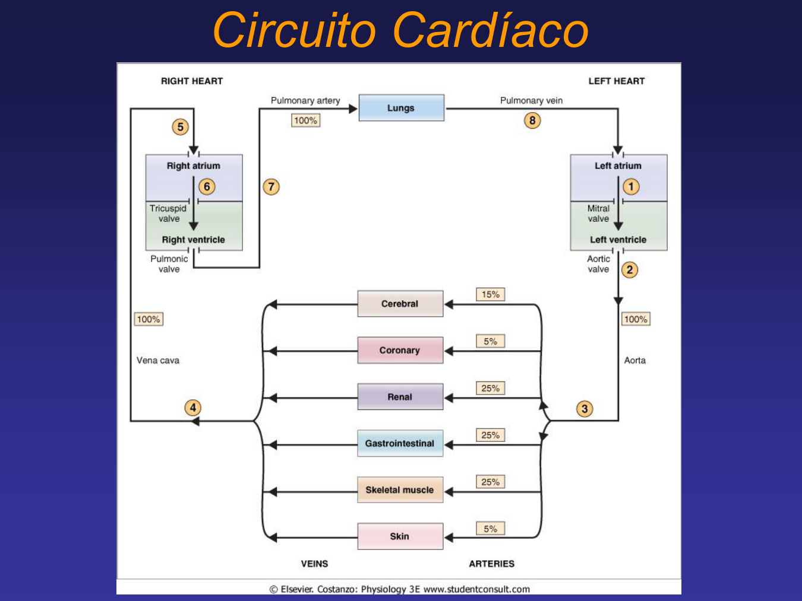
O circuito circulatório: como o débito se distribui e como a pressão se dissipa
A circulação sistêmica (grande circulação) começa na aorta, que recebe 100% do débito cardíaco (~3.500–5.000 mL/min), com alta pressão e sangue oxigenado. A aorta se ramifica em artérias → arteríolas → capilares (uma única camada de células). E aqui está o ponto-chave: o capilar é o grande trocador — é ali que ocorrem as trocas de gases e nutrientes, e é ali que os fármacos chegam aos seus receptores. As grandes artérias são apenas "dutos" de passagem; elas não nutrem nada, só transportam.
Como o débito se distribui pelos órgãos (valores citados):
| Órgão | Fração do DC |
|---|---|
| Rim | ~25% (~1.250 mL/min) |
| Coronárias | ~5% |
| Músculo esquelético | ~5% |
| Pele (o maior órgão do corpo) | ~5% |
| Trato gastrointestinal | Grande fluxo |
Note algo contraintuitivo: a pele, sendo o maior órgão, recebe apenas ~5% — ela é intencionalmente hipoperfundida. Faz sentido: a pele é uma barreira; se fosse hiperperfundida, qualquer corte levaria a hemorragia grave e choque.
Ao longo do trajeto, dois fenômenos acontecem em paralelo: a pressão se dissipa com a distância, e o sangue muda de arterial (rico em O₂) para venoso (carregado de CO₂), porque os capilares cedem O₂ e captam CO₂. Os capilares confluem em vênulas → veias → veia cava → átrio direito. No átrio direito a pressão arterial é praticamente zero — toda ela se dissipou ao longo do circuito.
Por isso geramos algo como 12 × 8 (~90 de média): é exatamente a pressão necessária para o sangue dar a volta completa no circuito. Menos do que isso → hipoperfusão. Mais do que isso → você pressuriza e lesa os tecidos a longo prazo. É a tradução fisiológica do "nem de mais, nem de menos".
A pequena circulação (pulmonar) e o edema agudo de pulmão
Do átrio direito, o sangue venoso passa ao ventrículo direito → artéria pulmonar → capilares pulmonares (onde ocorre a hematose: cede CO₂, capta O₂) → veia pulmonar → átrio esquerdo. É chamada de pequena circulação por dois motivos: é curta e está no mesmo plano (coração–pulmão–coração), sem diferença de altura para vencer a gravidade. Resultado: é um território de baixa pressão — não precisa gerar muita pressão ali.
O que acontece quando essa pressão sobe (mecanismo do edema)
Siga o passo a passo causa → consequência → manifestação:
- Causa: patologicamente, a pressão nos capilares pulmonares sobe (tipicamente porque o coração esquerdo não ejeta direito e congestiona o sangue "para trás").
- Consequência imediata: com pressão alta no capilar, há extravasamento de líquido. O pulmão joga esse líquido para o espaço intersticial — e não para dentro do alvéolo, porque encher o alvéolo de líquido seria literalmente afogar o paciente por dentro.
- Manifestação: líquido no interstício reduz a expansibilidade pulmonar → dispneia, respiração curta e rápida (o professor descreve como "respirar feito cachorrinho"). Como a troca de CO₂ por O₂ piora, o CO₂ acumula, estimula o centro respiratório no bulbo e a frequência respiratória sobe para compensar.
Esse é o edema pulmonar cardiogênico, típico da insuficiência cardíaca: o coração não ejeta, congestiona o sangue a montante e aumenta a pressão para trás. Pode ser agudo (instala-se rápido) ou crônico (ao longo de anos). Você reencontra esse mecanismo de "congestão para trás" ao estudar diuréticos em §03 e digitálicos/inotrópicos em §04.
Detalhe do experimento (pressão negativa no átrio direito): ao avançar um cateter pela veia até o átrio direito, mede-se uma pressão negativa (em torno de −1 a +1 mmHg, média zero) — uma seringa de vidro nem aspirava sangue ali. Avançando meio milímetro a mais, já dentro do átrio, a pressão virava positiva e o sangue voltava na seringa. Era assim que se localizava o ponto exato para medir o débito.
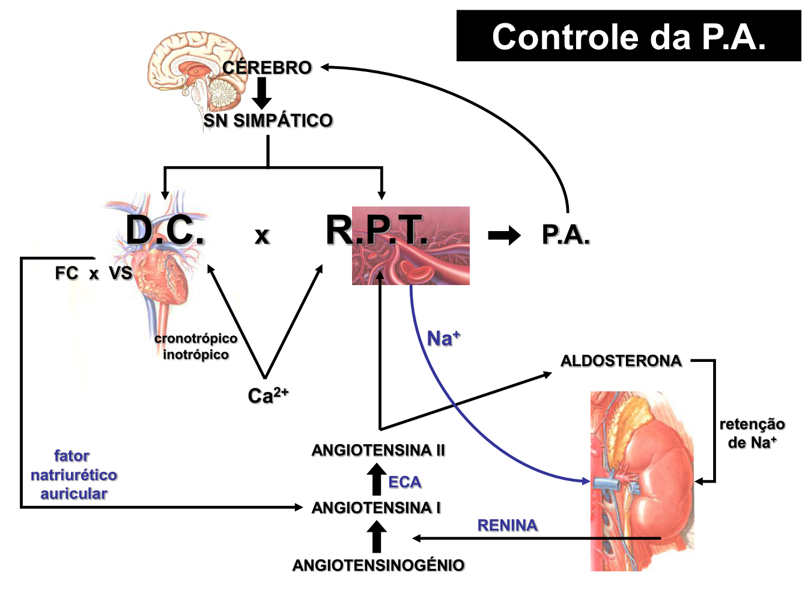
O Sistema Renina-Angiotensina-Aldosterona (SRAA): a via mais explorada pelos fármacos
Esta é a via humoral mais importante para a farmacologia da HAS. Acompanhe a cascata passo a passo:
- O sódio, ao passar pela mácula densa (uma estrutura do rim que monitora o filtrado), regula a liberação de renina pelo aparelho justaglomerular.
- A renina cliva o angiotensinogênio (produzido pelo fígado) em angiotensina I.
- A angiotensina I não age sobre o vaso. Ela circula e, no interstício dos tecidos — especialmente no pulmão —, encontra a enzima conversora de angiotensina (ECA), que a transforma em angiotensina II.
- A angiotensina II liga-se ao receptor AT1 na musculatura lisa vascular → forte vasoconstrição → aumenta a RVP e a PA.
- A angiotensina II também age na adrenal, estimulando a liberação de aldosterona — um mineralocorticoide (não um glicocorticoide!) que retém sódio e água (aumentando a volemia) e excreta potássio (retém Na⁺, joga K⁺ fora).
Ou seja, o SRAA eleva a PA por dois mecanismos: (1) vasoconstrição direta pela Ang II no AT1, aumentando a resistência; e (2) retenção de Na⁺/água pela aldosterona, aumentando a volemia (e portanto o débito).
"O maior efeito hipertensor é a vasoconstrição direta da angiotensina II no receptor AT1." Ele disse explicitamente: "posso perguntar na prova? posso?" O ponto: dos dois mecanismos do SRAA, é a vasoconstrição direta que pesa — a via da aldosterona contribui pouco.
A prova clínica do argumento: se você bloqueia o SRAA "lá em cima" — com losartana (bloqueia o receptor AT1) ou captopril (bloqueia a ECA) — a pressão cai muito. Mas se você bloqueia só a aldosterona com espironolactona, a queda é pequena/mínima. Logo, o efeito pressórico do SRAA depende predominantemente da vasoconstrição direta, não da aldosterona. (Histórico: o captopril, de 1976, foi o primeiro IECA ativo por via oral; enalapril também bloqueia a ECA; losartana bloqueia o AT1.) Tudo isso é detalhado em §02.
Mnemônica que ele martelou para facilitar a prova: o que AUMENTA a pressão DIMINUI a renina; o que DIMINUI a pressão AUMENTA a renina. É um sistema de feedback: se a pressão (e a perfusão renal) está alta, o rim não precisa de mais renina; se cai (hipovolemia, depleção de sódio, hipotensão), o rim libera renina para recompor a pressão. "Só usar o racional para ficar mais fácil de responder na prova."
Cálcio e Peptídeo Natriurético Atrial: os outros mecanismos de controle
O cálcio é peça-chave na geração de pressão por dois caminhos ao mesmo tempo: ele é essencial no débito cardíaco (acoplamento excitação-contração do miocárdio) e na contração da musculatura lisa vascular. Por isso os bloqueadores dos canais de cálcio (BCC) — verapamil, diltiazem, amlodipina — são anti-hipertensivos: tiram cálcio dos dois lados da equação. Já fica a distinção que o professor marcou e cobra em §02: verapamil e diltiazem agem mais no canal de cálcio cardíaco; a amlodipina, mais no canal vascular.
O peptídeo natriurético atrial (ANP) também participa do controle pressórico, com menor importância percentual; é liberado pelo átrio quando ele se distende (volume alto) e promove natriurese (excreção de sódio/água), baixando a volemia. Terapeuticamente isolado, ainda é pouco explorado.
A conexão terapêutica moderna: na insuficiência cardíaca usa-se hoje um inibidor da enzima neprilisina — a enzima que normalmente degrada esses peptídeos natriuréticos. Ao inibir a neprilisina, o peptídeo natriurético aumenta e a condição do paciente melhora. É o medicamento Entresto (sacubitril + valsartana): caro, mas que melhora muito a sobrevida após IC.
O barorreflexo: o controle mais rápido da pressão
O barorreflexo é a resposta de curto prazo, a mais rápida de todas. Seus sensores são os barorreceptores: receptores de estiramento na parede do seio carotídeo e do arco aórtico. Quando a PA sobe, ela estira a parede do vaso → os barorreceptores disparam uma aferência.
Essa aferência chega ao núcleo do trato solitário (NTS), no bulbo, que integra as informações de várias regiões e "calcula" a PA imediatamente. Se a PA está alta, o NTS aciona respostas seletivas e simultâneas, todas convergindo para baixar a pressão:
- Inibe o centro vasoconstritor → vasodilatação → reduz a RVP.
- Inibe o centro cardioacelerador → reduz o inotropismo, o débito e o retorno venoso.
- Estimula o vago (parassimpático) → reduz a frequência cardíaca e o débito. (Detalhe que ele citou: o nervo vago é predominantemente parassimpático — cerca de 2/3 de suas fibras são parassimpáticas.)
O ponto mais importante: o barorreflexo é bidirecional. Se a PA cai, tudo se inverte e ele aumenta a pressão (sobe a frequência, faz vasoconstrição). Por isso ele responde tanto à hipertensão quanto à hipotensão — é um termostato da pressão. Há ainda forte integração cardiorrespiratória: as regiões cardiovascular (bulbo rostroventrolateral) e respiratória são muito próximas, com interneurônios entre elas (o professor cita a área de Bötzinger e a descarga sincrônica do nervo frênico com o tono simpático).
Por que a HAS NÃO é "barorreflexo defeituoso": o reset do baro (modelo L-NAME)
Aqui vem um dos conceitos mais contraintuitivos — e mais importantes — da aula. Se o barorreflexo responde tanto à pressão alta quanto à baixa, então ele deveria derrubar a pressão de um hipertenso. Por que não derruba? A HAS não se explica por "falta de barorreflexo".
O modelo experimental que prova isso usa o L-NAME, um inibidor da óxido nítrico sintase (a enzima que fabrica óxido nítrico). O óxido nítrico (NO) é um vasodilatador; ao inibir sua produção, predomina a vasoconstrição e a PA sobe. O experimento:
- Coloca-se L-NAME na água do rato por ~1 mês e meio → a pressão sobe e o rato fica hipertenso.
- Troca-se a água, retirando o L-NAME → e a pressão não volta ao normal. O rato permanece hipertenso.
A explicação: o barorreflexo se reprograma (reseta). Mantendo a pressão alta por tempo suficiente, o "set-point" do baro sobe — ele passa a considerar a pressão alta (ex.: 16 × 10) como o novo "normal", em vez de 12 × 8. Por isso a HAS crônica é uma doença sistêmica com o baro resetado para cima, e não um baro inexistente.
"Você reprograma esse baro para chamar não o 12 por 8 de pressão normal, e sim o 16 por 10." Essa é a chave para entender por que tratar HAS é difícil e por que o paciente sente sintomas ao melhorar. Guarde a ideia: o problema não é o sensor quebrado, é o ponto de referência deslocado para cima.
Implicação clínica do reset: anti-hipertensivo NÃO é hipotensor
Esse conceito tem consequência direta na adesão do paciente. Pegue um hipertenso crônico cujo baro está resetado para 16 × 10. Você dá o anti-hipertensivo e ele cai para 14 × 9 — um valor ótimo. Mas ele pode sentir sintomas de hipotensão (tontura, sonolência, apatia, cansaço), porque para o baro dele, o "normal" ainda é 16 × 10. Ou seja, o organismo "acha" que está hipotenso, mesmo com pressão excelente.
Conduta mandatória: avisar o paciente desses sintomas antes, para que ele não abandone o tratamento. Com o tempo, o baro se reajusta de volta para baixo e os sintomas passam.
Daí o conceito que o professor não cansa de repetir: "o medicamento é um anti-hipertensivo e não um agente hipotensivo. Eu quero normotensão." O objetivo é a normotensão, nunca a hipotensão. Nunca diga ao paciente que vai "dar um hipotensor".
"Doutor, estou curado, posso parar?"
A resposta depende do fator que desajustou a pressão:
- Se o fator era modificável e foi corrigido (perdeu peso, parou de beber, começou a se exercitar), pode-se até "curar" e desmamar a medicação — com redução gradual da dose ou troca por droga mais fraca, sempre monitorando.
- Se o fator é não modificável (genética, idade) ou não foi corrigido, ao parar a medicação a pressão volta a subir.
Regra de ouro: nunca suspender de uma vez. Reduz a dose progressivamente, observa se a pressão se mantém normal, e só então retira.
Hierarquia temporal do controle da PA
Os três sistemas atuam em janelas de tempo diferentes — e isso explica por que cada classe de droga funciona:
| Prazo | Sistema responsável |
|---|---|
| Curto prazo | Simpático (e barorreflexo) — segundos a minutos |
| Médio prazo | SRAA + hormônios (peptídeo natriurético, vasopressina/ADH) e sede |
| Longo prazo | SRAA (continua atuando) — por isso o SRAA é tão explorado no tratamento da HAS |
Como o SRAA domina o controle de longo prazo, as drogas que mexem nele (IECA, BRA) são justamente as que melhoram a sobrevida na HAS — não só baixam o número.
Definição de HAS, lesão de órgãos-alvo e por que ela mata
A hipertensão arterial sistêmica (HAS) é uma condição clínica multifatorial caracterizada por níveis elevados e sustentados de pressão arterial. A palavra-chave é sustentados: um único pico por estresse ou emoção não define HAS — é preciso persistência. Diante de uma medida alta isolada, peça nova aferição em outro momento.
A HAS lesa quatro órgãos-alvo: coração, cérebro, rins e vasos (a íntima dos vasos). Basta uma PA de ~90 mmHg de média para perfundir; acima disso, instala-se a lesão crônica desses órgãos. A HAS é elo causal de doença isquêmica cardíaca (a placa rompe, forma trombo, mata), AVC isquêmico e hemorrágico, e outras causas cardíacas. Contexto que assusta (e motiva): as doenças cardiovasculares respondem por cerca de 50% de todas as causas de morte — mais do que violência, acidentes, AIDS e guerra somados.
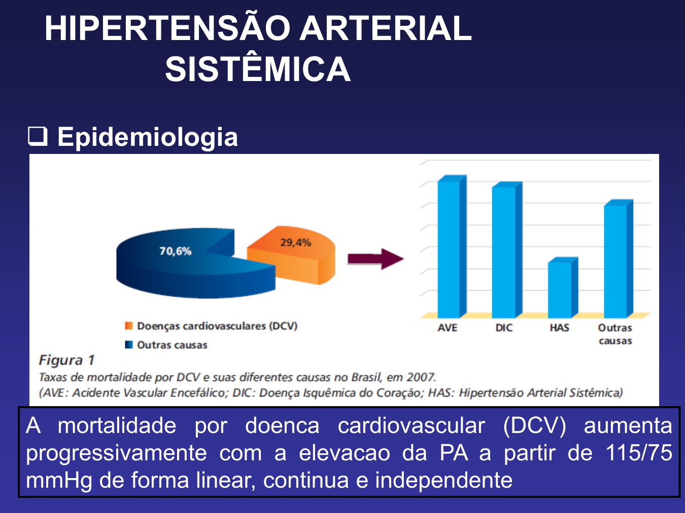
"A pressão aumenta a mortalidade de forma linear, contínua e independente acima de 115 por 75." Ele parou na aula para dizer "olha essa frase". O que cada palavra significa: linear (quanto mais pressão, mais morte, numa reta); contínua (sem degrau, sem ponto de corte mágico); independente (a HAS aumenta a mortalidade por si só, mesmo sem outros fatores). É a justificativa epidemiológica de por que tratamos números que o paciente "nem sente".
Epidemiologia da HAS no Brasil e o peso sobre o SUS
Os números que o professor citou (alguns de diretrizes mais antigas, mas que dão a dimensão do problema):
- HAS é responsável por ~25% da doença coronariana e ~40% dos AVCs.
- ~1 milhão de internações por ano ligadas à HAS.
- Prevalência no Brasil: ~21% em 2006, ~24% em 2009; entre os maiores de 80 anos, até ~70% são hipertensos; entre os maiores de 65 anos, ~63%.
- Cerca de 10% dos pacientes não tratam ou têm má adesão; ~75% dependem exclusivamente do SUS (num país de ~220 milhões, isso são ~170–180 milhões de pessoas).
O lado bom: a HAS é fácil de diagnosticar e barata de tratar — todos os anti-hipertensivos do pacote básico são distribuídos gratuitamente pelo SUS. Investir na atenção primária (UBS, PSF, agentes comunitários) com medidas farmacológicas e não farmacológicas alivia toda a cadeia de assistência.
"Pegar no pé dessa hipertensão é algo que você não vai estar fazendo só com ele [o paciente], você vai estar fazendo pelo SUS todo." E o alerta demográfico que ele faz questão de conectar: "quando você aumenta a longevidade, você aumenta o número de hipertensos." Ou seja, mesmo com AVC, IAM e ICC caindo graças a melhores fármacos e diagnóstico, a HAS só cresce — porque envelhecemos mais. Saúde pública é parte da farmacologia.
Fatores de risco e causas secundárias de HAS
Fatores de risco: gênero (homens mais hipertensos que mulheres), idade (quanto maior, maior a incidência), excesso de peso, etnia, sedentarismo, tabagismo, álcool e — com destaque — a ingesta de sódio. Sobre o sódio: o professor citou uma necessidade de ~3 a 3,4 g/dia e um consumo brasileiro de ~12 g/dia, muito por causa dos ultraprocessados ricos em sódio (glutamato e cloreto de sódio como conservante e realçador de sabor).
Cuidado para não confundir sódio e sal (NaCl): 5 g de sal contêm ~2 g de sódio. A recomendação da OMS é de <2 g de sódio/dia (≈5 g de sal), e a "necessidade" fisiológica de sódio é bem menor (<0,5 g/dia). O valor "~12 g/dia" citado em aula corresponde, na verdade, ao consumo de sal do brasileiro (~9–12 g de sal ≈ 3,7–4,7 g de sódio), e não a 12 g de sódio. Ao orientar o paciente, padronize a unidade (preferencialmente "sal <5 g/dia").
Apneia obstrutiva do sono — uma causa que se esconde
Mecanismo passo a passo: durante o sono, há obstrução das vias aéreas superiores (mais comum em obesos, pela gordura na orofaringe) → o paciente acumula CO₂ → o CO₂ estimula o centro respiratório → há uma descarga autonômica/simpática repetida, noite após noite, por anos → HAS (e risco de morte). Como priva o paciente do sono REM (o mais reparador), ele tem sonolência diurna apesar de "dormir muito". O ronco é o sinal da passagem difícil do ar. Investiga-se com polissonografia (exame caro e escasso).
Causas endócrinas/secundárias a descartar
- Síndrome de Cushing (excesso de corticoide — frequentemente exógeno, em altas doses).
- Feocromocitoma — tumor secretor de catecolaminas.
- Disfunção tireoidiana (hiper ou hipotireoidismo — avaliar T3, T4, TSH).
- Hiperparatireoidismo (PTH alto, ligado ao metabolismo do cálcio; a causa pode ser um tumor da paratireoide).
- Acromegalia (hipersecreção de GH).
HAS induzida por medicamentos/drogas
| Agente | Como causa HAS |
|---|---|
| Ciclosporina e tacrolimus | Imunossupressores pós-transplante — não dá para retirar (o órgão rejeitaria) |
| Glicocorticoides | Cushing iatrogênico |
| AINEs | Inibem a COX renal (COX-1 e COX-2) → ↓prostaglandinas vasodilatadoras renais → retenção de Na⁺/água e ↓fluxo renal → HAS |
| Anorexígenos (femproporex, hoje proibido; sibutramina) | Estímulo simpático/serotoninérgico |
| Derivados do ergot/ergotamina | Vasoconstritores (eram usados na enxaqueca) |
| Eritropoetina | Aumenta a massa de hemácias → mais viscosidade → mais resistência |
Estratificação de risco e estagiamento da HAS
O risco cardiovascular não depende só do número da pressão — ele resulta da soma do nível pressórico com os fatores de risco e com a presença de lesão de órgão-alvo. Conceitos que o professor organizou:
- Pré-hipertensão (como o professor falou): a faixa "acima do ótimo" começando perto de 120/80 — ele enfatizou que o ponto de corte foi rebaixado ao longo dos anos.
- HAS estágio 1: a partir de ~140/90 mmHg. Os estágios 2 e 3 vêm com níveis progressivamente maiores.
- Fatores de risco modificáveis: tabagismo, sedentarismo, alcoolismo, alimentação, qualidade do sono. Não modificáveis: genética, sexo (ser homem é fator de risco) e idade.
A lógica da escadinha: quanto maior o nível pressórico, maior o risco — e o próprio nível pressórico já conta como fator. Por isso, mesmo sem fatores de risco adicionais, o estágio 1 já é risco baixo (não nulo). E há dois "atalhos" para risco alto que você precisa decorar:
1) Lesão de órgão-alvo = risco ALTO, ponto final. Se há lesão em qualquer um dos quatro órgãos-alvo (coração, cérebro, rim, vaso), o risco é alto independentemente de qualquer outro fator. O exemplo que ele repetiu: uma menina jovem, magra, atleta, eutrófica — se tiver doença renal de base, o risco cardiovascular dela já é alto. Como ele resume: "caiu aqui [lesão de órgão-alvo], já era".
2) Estágio 3 = intervenção medicamentosa IMEDIATA. "Não posso deixar o camarada no estágio 3" — risco altíssimo de evento, exige medicação na hora, independentemente de outros fatores. E a pegadinha de estadiamento: considere SEMPRE o pior valor (sistólica ou diastólica). Como ele disse: "160 por 110? Três. Daí ele passa a ser três" — mesmo que a sistólica de 160 fosse "só" estágio 2, a diastólica de 110 puxa para estágio 3.
Os cortes ditos em aula são aproximados; para a prova, fixe a classificação da SBC 2020 (Diretriz Brasileira de Hipertensão Arterial), em mmHg de consultório: ótima <120/80; normal 120–129/80–84; pré-hipertensão 130–139/85–89; estágio 1 = 140–159/90–99; estágio 2 = 160–179/100–109; estágio 3 = ≥180/110 (sempre pelo pior valor). Note que pré-hipertensão pela SBC começa em 130/85 (não em 120/80): uma PA de 132/84 é "normal", ainda não pré-HAS. Há divergência entre diretrizes: a SBC mantém o limiar de HAS em ≥140/90, enquanto a ACC/AHA 2017 abaixou para ≥130/80 e abandonou o termo "pré-hipertensão" (usa "PA elevada" 120–129/<80 e estágios 1 = 130–139/80–89 e 2 = ≥140/90). A regra do "pior valor" e o exemplo 160/110 = estágio 3 estão corretos pela SBC.
Score de Framingham e tendência epidemiológica
O Score de Framingham calcula o risco de doença cardiovascular em 10 anos (há sites gratuitos para calcular). O uso prático é numa linha temporal: você calcula hoje, o paciente volta em 1 ano, você joga os novos dados clínicos e laboratoriais — se o risco subiu, intensifica a abordagem; se caiu (emagreceu, parou de fumar, controlou o colesterol), você está no caminho certo. (O professor mencionou que iria detalhar esse escore mais adiante.)
Tendência de década: doença cerebrovascular (AVC), doença isquêmica/IAM e ICC diminuíram com novos fármacos, mais acesso e diagnóstico, e mudança de estilo de vida — mas a HAS só aumenta, porque a longevidade aumentou. Quanto maior a pressão (sistólica e diastólica) e maior a idade, maior o risco — os efeitos se somam e pioram muito o prognóstico.
Tratamento NÃO medicamentoso: a "tabelinha para tatuar"
Antes de qualquer comprimido, as medidas não farmacológicas têm efeito mensurável e somável sobre a sistólica. Estes valores são exatamente os que o professor destacou:
| Medida | Redução na PA sistólica |
|---|---|
| Perda de 10 kg de peso | até ~20 mmHg |
| Dieta DASH | até ~14 mmHg |
| Redução do consumo de sal | ~8 mmHg |
| Exercício físico | ~10 mmHg |
| Moderação do álcool | ~4 mmHg |
A dieta DASH é baseada em frutas, vegetais/verduras e proteínas com baixo teor de gordura saturada (carboidrato, fibra, proteína de qualidade). Somando até só os mínimos dessas medidas, já se obtém uma queda pressórica expressiva — a ponto de o paciente, em alguns casos, não precisar mais de medicamento e até "curar" a hipertensão (mexendo no que é modificável; o genético ainda não dá para mudar). O contraponto: quem toma o medicamento e não muda o estilo de vida será hipertenso para sempre — pode ficar controlado, mas se parar a medicação a pressão volta a subir e o baro se reajusta para cima de novo.
"Todo paciente tinha que fazer uma tatuagem com essa tabelinha." E ele complementa com bom senso clínico: a orientação dietética precisa explicar o porquê (carboidrato/fibra/proteína, e que a gordura vem junto da carne), não só mandar "salada à vontade" — um prato real é algo como 4 colheres de arroz + um bife de 100–150 g + salada. Mas ele é honesto sobre a adesão: "perder 10 quilos não é brincadeira para ninguém" e "exercício é para quem gosta; quem não gosta arruma desculpa." O recado: prescreva o real, não o ideal inatingível.
Os números da "tabelinha" são valores didáticos do professor e tendem a superestimar o efeito. As estimativas das diretrizes (ACC/AHA 2017) para a queda da PAS são mais modestas: perda de peso ≈ 1 mmHg por kg (perder 10 kg costuma reduzir ~5–10 mmHg, não 20); dieta DASH ≈ 11 mmHg; restrição de sódio ≈ 5–6 mmHg; exercício aeróbico ≈ 5–8 mmHg; moderação do álcool ≈ 4 mmHg. A mensagem clínica da aula permanece válida (medidas não medicamentosas têm efeito real e somável), mas não prometa ao paciente reduções tão grandes quanto "20 mmHg por 10 kg".
Avaliação clínica e o efeito do jaleco branco
A síndrome do jaleco branco é a elevação falsa da PA causada pela ansiedade de chegar ao consultório — o paciente pode nem ser hipertenso de verdade. Um estudo antigo (1987) comparou a PA medida por médico versus por enfermeira ao longo do tempo de consulta: mais conversa e humanização ajudam a obter uma medida mais fiel e um estadiamento mais preciso.
Por isso a anamnese da HAS deve cobrir: sexo, idade, duração da hipertensão, sintomas, fatores de risco modificáveis, avaliação dietética, uso de drogas de abuso, antecedentes de doença renal (que pode ser a causa da hipertensão), fatores ambientais, histórico familiar e a profissão (profissões estressantes contam). Tudo isso prepara o terreno para a marcha terapêutica que você vai estudar em §02 (Anti-hipertensivos).
- → PA = DC × RVP: tudo que aumenta débito ou resistência aumenta a pressão — e a recíproca é verdadeira. Toda droga anti-hipertensiva ataca um desses dois termos.
- → PAM = (PAS + 2×PAD)/3; peso 2 na diastólica porque passamos mais tempo em diástole. PAM normal ~90 (PAM ~100 = referência didática de pressão elevada). Cuidado: HAS se diagnostica por PAS/PAD (≥140/90 SBC; ≥130/80 ACC/AHA), não pela PAM.
- → Cerca de 50% da PA vem do tono simpático de origem bulbar (experimento C1-C2); o simpático é o controle de curto prazo, o SRAA o de médio/longo prazo.
- → No SRAA, o maior efeito hipertensor é a vasoconstrição direta da angiotensina II no AT1 — a aldosterona contribui pouco (losartana/captopril derrubam muito; espironolactona, pouco).
- → Fração de ejeção (aula): >55% normal; 40–55% "preservada"; <40% reduzida. Classificação atual (para a prova): ≤40% reduzida (ICFEr); 41–49% levemente reduzida (ICFEmr); ≥50% preservada (ICFEp) — "preservada" = FE normal por disfunção diastólica.
- → O barorreflexo é bidirecional e se reseta para cima na HAS crônica (modelo L-NAME) — por isso anti-hipertensivo NÃO é hipotensor: o alvo é normotensão, e o paciente deve ser avisado dos sintomas para não abandonar.
- → A mortalidade cardiovascular sobe de forma linear, contínua e independente acima de 115/75 mmHg; HAS lesa 4 órgãos-alvo (coração, cérebro, rim, vaso) e lesão de órgão-alvo = risco alto por si só.
- → Medidas não medicamentosas (a "tabelinha" do professor): 10 kg → ~20 mmHg, DASH → ~14, exercício → ~10, sal → ~8, álcool → ~4 (valores didáticos; as diretrizes estimam ~1 mmHg/kg, DASH ~11, sódio ~5–6, exercício ~5–8, álcool ~4). No estadiamento, considere SEMPRE o pior valor; estágio 3 exige medicação imediata.
Anti-hipertensivos
Por que esta aula importa (e por que ela "cai na outra prova também")
Antes de qualquer fármaco, fixe a lógica que governa toda a seção. A pressão arterial obedece a uma equação simples: PA = Débito Cardíaco × Resistência Vascular Periférica Total. E o débito, por sua vez, é Volume Sistólico × Frequência Cardíaca. Toda droga anti-hipertensiva, sem exceção, ataca uma dessas variáveis: reduz o volume (diuréticos), reduz a frequência/força (betabloqueadores, não-DHP), ou reduz a resistência (vasodilatadores, IECA, BRA, di-hidropiridínicos, alfabloqueadores). Se você sabe em qual alavanca cada classe puxa, você deduz o efeito e o efeito adverso sem decorar.
Outro recado: você vai estudar TODOS os grupos de anti-hipertensivos, mas muitos deles têm vida dupla — agem também como antiarrítmicos e antianginosos. Por isso este conteúdo reaparece em §04 (Digitálicos, Antiarrítmicos e Antianginosos) e em §05 (Drogas Vasoativas / UTI). O fio condutor é o mesmo: cálcio, simpático e o sistema renina-angiotensina.
Os diuréticos: primeira escolha, mas detalhados depois
Os diuréticos são drogas de primeira escolha no tratamento da hipertensão — eles abrem o fluxograma terapêutico ao lado do IECA e do BRA. Nesta aula eles não são esmiuçados (há uma aula inteira só de diuréticos e farmacologia renal, que é a §03), mas o princípio geral precisa estar claro desde já.
Mecanismo em uma frase: o diurético impede a reabsorção de sódio (e de potássio) no túbulo renal. Como a água segue o sódio, ao jogar sódio na urina você arrasta água junto, cai a volemia, cai o volume que enche o coração e, com menos volume circulante, cai a pressão. Em troca, aumenta-se a excreção urinária de sódio e de potássio — guarde isso, porque a perda de potássio reaparece em §03 como ponto-chave dos tiazídicos e de alça.
Bloqueadores dos canais de cálcio (BCC): a base de tudo
Comece pela correção de nomenclatura que o professor faz questão de cobrar: o termo mais correto é "bloqueador" de canal de cálcio, não "antagonista". "Antagonista" é palavra reservada a receptores; um canal iônico não é um receptor. Porém, como o fármaco se liga a uma subunidade do canal — comportando-se como se antagonizasse aquele sítio —, na prática "antagonista de canal de cálcio" também é aceito. Nas suas palavras: "já começa com o erro: o mais correto é bloqueador dos canais de cálcio."
Por que o cálcio é tão central? Porque o íon cálcio (Ca²⁺) é o grande transdutor celular das respostas cardiovasculares. É ele que comanda as quatro propriedades fundamentais do coração:
- Inotropismo — força de contração;
- Cronotropismo — frequência (batimentos por minuto);
- Dromotropismo — velocidade de condução do impulso (sobretudo no nó AV);
- Automatismo / marca-passo — a capacidade do nó sinoatrial de disparar sozinho.
E, fora do coração, o cálcio comanda também a contração da musculatura lisa vascular — ou seja, a vasoconstrição. Os BCC agem num ponto preciso: a subunidade α1 do canal de cálcio transmembrana. É ali que bloqueiam a entrada de cálcio. (Este é um item que o professor avisou explicitamente que vai cobrar.)
Como o cálcio contrai a musculatura lisa do vaso, passo a passo: o cálcio entra na célula → liga-se à calmodulina (uma proteína sensora de cálcio) → o complexo cálcio-calmodulina ativa a cadeia leve da miosina (via fosforilação) → a miosina interage com a actina → a célula contrai → o vaso se estreita → sobe a resistência → sobe a pressão. Bloqueie a entrada de cálcio e você quebra essa cadeia logo no primeiro elo: o vaso relaxa, cai a resistência, cai a pressão.
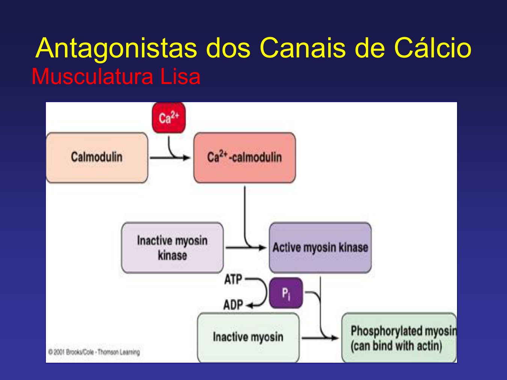
Duas classificações dos BCC: química e por geração
Há duas formas independentes de classificar os BCC. Não confunda uma com a outra.
(1) Classificação química — divide os BCC pela estrutura e, por consequência, pela afinidade preferencial (coração vs. vaso):
- Não-di-hidropiridínicos (não-DHP): verapamil e diltiazem. Têm alta afinidade pelo canal de cálcio cardíaco. Reduzem inotropismo (cai o volume sistólico) e cronotropismo/excitabilidade — ou seja, têm efeitos ino, crono e dromotrópicos NEGATIVOS. Agem basicamente no débito. Por isso NÃO são anti-hipertensivos de primeira escolha: mexer na atividade elétrica do coração é arriscado. Eles brilham mesmo é como antiarrítmicos (reaparece em §04).
- Di-hidropiridínicos (DHP): nifedipina, anlodipina (besilato de anlodipina é o mais usado hoje), nitrendipina, felodipina. Têm afinidade preferencial pelo canal vascular: causam vasodilatação intensa, com redução brusca da PA.
O problema dos DHP de ação rápida é exatamente essa queda brusca: a PA despenca → o organismo aciona o barorreflexo (sensor de pressão no arco aórtico/seio carotídeo) → ativa reflexamente o sistema simpático → sobe a frequência cardíaca, sobe o inotropismo, aumenta o consumo de O₂ e a atividade elétrica. Nas palavras do professor, "pode dar pau". Não é interessante estimular o barorreflexo — guarde essa frase, ela é a chave para entender por que os DHP modernos são melhores.
Farmacocinética: pico, vale e por que a "ondinha achatada" é o ideal
Para entender as gerações, primeiro entenda este conceito, que vale para QUALQUER fármaco de uso crônico. Quando você toma um comprimido repetidamente, a concentração no sangue não fica fixa: ela sobe (atinge o pico, a concentração máxima) e depois cai (o vale, a concentração mínima) antes da próxima dose. A diferença entre os dois é o intervalo pico-vale. Depois de cerca de 4 tempos de meia-vida, atinge-se o estado de equilíbrio (steady-state): a curva passa a oscilar de forma estável entre pico e vale.
Imagine uma faixa terapêutica: acima do vale está o efeito desejado (e, se subir demais, o efeito tóxico); abaixo do vale você perde eficácia. O ideal é viver no meio — nem no teto tóxico, nem no piso ineficaz. Quanto mais achatado o intervalo pico-vale (a "ondinha" baixa e suave), mais perto você fica do ideal.
Onde se consegue o "meio" perfeito? Só com infusão intravenosa contínua em bomba — é exatamente assim que se usam as drogas vasoativas no paciente crítico (tema de §05), porque a bomba estabiliza o que entra contra o que sai, e a concentração vira praticamente uma linha reta.
A analogia do "picão e valão" / paciente "sambando": um fármaco de curta ação com grandes variações pico-vale faz a concentração subir demais (no pico, efeito indesejado) e cair demais (no vale, perde eficácia). Em termos de pressão, isso significa hipotensão numa hora e hipertensão em outra — o paciente "samba" o dia inteiro. O verapamil é o exemplo clássico de droga com grandes variações farmacocinéticas.
As três gerações de BCC
| Geração | Característica farmacocinética | Exemplos / "sobrenome" | Consequência clínica |
|---|---|---|---|
| 1ª geração | Curta ação, meia-vida curta, grandes variações pico-vale | Verapamil, diltiazem, nifedipina (formas simples) | Precisa tomar até 4×/dia → péssima aderência; pressão "sambando" |
| 2ª geração | Perfil melhorado: liberação lenta e prolongada | Verapamil AP, diltiazem SR, nifedipina OROS; novos DHP vasculares (nicardipina, nitrendipina, pouco usados no Brasil) | Menos tomadas, curva mais estável |
| 3ª geração | Alta biodisponibilidade, pequenas variações pico-vale, ação prolongada, afinidade vascular, início e término lentos | Anlodipina, lacidipina, lercanidipina | O "melhor"; não baixa a PA rápido (não estimula barorreflexo) e não tem efeito rebote |
A regra do "sobrenome": toda vez que você vê um medicamento com um sobrenome de 2-3 letras (AP, SR, CD, OROS, GITS), trata-se de um perfil farmacocinético melhorado, de liberação lenta. Consequência prática que cai na prova: esse comprimido NÃO pode ser quebrado, macerado, diluído nem passado por sonda — tem de ser engolido inteiro, senão você destrói o sistema de liberação controlada e devolve o paciente ao "picão e valão".
Por que a 3ª geração é o melhor BCC anti-hipertensivo (e está disponível pelo SUS): a anlodipina tem início e término de ação lentos. Isso traz duas vantagens decisivas: (1) não baixa a pressão rapidamente, então não desencadeia o barorreflexo nem a ativação reflexa do simpático; e (2) ao ser suspensa, demora a fazer efeito subir, ou seja, não tem efeito de retirada / rebote. É um BCC "civilizado".
O raciocínio que une farmacocinética e farmacodinâmica: o "pecado" do BCC não é dilatar o vaso — é dilatar rápido demais. A queda brusca aciona o barorreflexo, que liga o simpático, que sobe a FC e o consumo de O₂. Por isso a evolução das gerações é toda sobre achatar a curva: 1ª geração = picão/valão (péssimo); 2ª = liberação prolongada (melhor); 3ª = início lento (ótimo, sem rebote). Memorize: "medicamento com sobrenome de duas ou três letras = perfil farmacocinético melhorado; não quebra, não macera, engole inteiro."
Indicações do BCC: HAS, angina, arritmia, remodelamento e aterosclerose
As indicações dos BCC são:
- HAS — como monoterapia ou associação (sobretudo os DHP).
- Angina vasoespástica (angina de Prinzmetal) — quando a dor vem de espasmo da coronária; o BCC relaxa o espasmo.
- Angina estável (com uma pegadinha importante, abaixo).
- Arritmia — aqui entram verapamil e diltiazem, justamente porque agem no dromotropismo e no automatismo cardíaco.
- Prevenção do remodelamento cardíaco (miocardiopatia hipertrófica).
- Prevenção da aterosclerose.
Definição de angina: a angina é a falta de suprimento de oxigênio ao músculo cardíaco — e a dor precede o evento isquêmico (é um aviso). A angina estável surge apenas a esforços maiores (subir uma ladeira); a angina instável surge ao mínimo esforço — ou até em repouso — e é muito mais grave.
PEGADINHA DE PROVA (ele avisou que vai cobrar): o BCC di-hidropiridínico isolado serve na angina ESTÁVEL, mas NÃO pode ser usado isolado na angina INSTÁVEL. Por quê? Pelo mesmo raciocínio do barorreflexo: "se o vaso dilata, a pressão cai, aumenta a frequência, aumenta o consumo de oxigênio — a causa da dor piora." Na angina instável, o coração já está no limite; um DHP isolado dilata, cai a PA, dispara o simpático, sobe a FC e o consumo de O₂ e a angina piora. Solução: na instável, sempre associar um betabloqueador (que segura o aumento reflexo da FC). Resumo: DHP isolado na instável = contraindicado; DHP + betabloqueador = liberado.
Remodelamento cardíaco: a hipertrofia "do mal" vs. a "do bem"
O remodelamento cardíaco é o que acontece com o coração do hipertenso crônico. Como ele tem de fazer mais força contra uma resistência alta, o músculo responde com hipertrofia e hiperplasia dos miócitos. O coração cresce — e cresce tanto para fora quanto para dentro. Crescer para dentro reduz o volume da câmara, o que reduz o volume sistólico; para compensar, o coração aumenta a frequência, o que piora o consumo de O₂. É um círculo vicioso. E o pior: "uma vez hipertrofiado, já era. Não vai atrofiar. O tratamento é transplante cardíaco." O remodelamento é, na prática, irreversível. Por isso a estratégia é prevenir — usar BCC (como verapamil) antes que o remodelamento se instale.
Um fator de remodelamento importantíssimo é a angiotensina II — guarde isso, porque é a ponte direta para o próximo grupo (IECA).
Hipertrofia do MAL (concêntrica) × do BEM (do atleta, excêntrica):
| — | Concêntrica (do mal) | Excêntrica (do atleta) |
|---|---|---|
| Arranjo dos sarcômeros | Aumentam em número, em paralelo | Aumentam em série |
| Geometria | Cresce p/ dentro e p/ fora, reduz a câmara | Coração mais longilíneo, preserva a câmara |
| Estímulo | Sobrecarga de pressão + angiotensina II | Treino aeróbico (endurance) |
O atleta de endurance faz bradicardia de repouso (cerca de 40 bpm), porque cada contração é tão vigorosa que ele precisa de menos batimentos para o mesmo débito. Esse ganho de condicionamento dura a vida toda — mas diminui se ele para de treinar.
Alerta clínico — "atleta de fim de semana": o professor insistiu na diferença entre o atleta de rendimento (condicionamento monitorado, fisiologia do esporte controlada) e a pessoa que se exercita de forma intensa sem condicionamento. Ele citou o caso de um jovem de ~30 anos que infartou e morreu correndo. A mensagem: esforço extremo súbito sobre um coração sem preparo é perigoso. O exercício regular reduz a PA em cerca de 10 mmHg — mas é o exercício regular e progressivo, não o heroísmo de fim de semana.
Da hipertrofia à insuficiência: a tosse, o derrame pleural e o diurético
Quando o coração falha (insuficiência cardíaca congestiva — ICC), o sangue se acumula "para trás", congestionando a pequena circulação (pulmonar). O resultado é a congestão pulmonar — e o primeiro sintoma costuma ser tosse, seguida de aumento compensatório da FC. Repare numa sutileza fisiológica: o líquido extravasa preferencialmente para o espaço interpleural (derrame pleural), e não para dentro do alvéolo — porque, se fosse para o alvéolo, o paciente literalmente "se afogaria". Em casos extremos, acumula-se até cerca de 1,5 L de líquido pleural. O tratamento: tratar a ICC e dar diurético para "secar" esse líquido.
O BCC na prevenção da aterosclerose
Para entender o papel do BCC aqui, primeiro a aterogênese (a formação da placa), passo a passo: o LDL se deposita e penetra no endotélio → é oxidado por espécies reativas → o LDL oxidado vira "corpo estranho", fagocitado por macrófagos → os macrófagos abarrotados de gordura viram células espumosas → instala-se um processo inflamatório crônico, com migração de células da musculatura lisa, liberação de citocinas, deposição de matriz fibrosa e, por fim, calcificação (é por isso que o vaso do idoso fica rígido e mais difícil de puncionar).
Sobre essa cascata, o BCC tem várias ações potenciais antiaterosclerose:
- Melhora a função endotelial;
- Reduz a sobrecarga intracelular de cálcio e o estresse parietal;
- Inibe a proliferação e a migração das células musculares lisas;
- Tem efeito antiagregante plaquetário — porque a agregação após ruptura/erosão da placa depende de cálcio (e da calmodulina/AMPc/fosfodiesterases);
- Modula o colesterol: estimula receptores de LDL (aumenta a captação), inibe a síntese e aumenta o metabolismo do colesterol → reduz colesterol total e LDL;
- Inibe a quimiotaxia de neutrófilos e macrófagos.
Resumo do que o BCC é: anti-hipertensivo, antiarrítmico (os não-DHP) e com papel na doença arterial coronariana/aterosclerose. (A aterogênese pelo LDL volta com força em §07 — Dislipidemias.)
Efeitos adversos do BCC
Quase todos os efeitos adversos dos BCC derivam do mesmo mecanismo: a vasodilatação intensa (e o bloqueio do cálcio em outros músculos lisos).
- Rubor facial, cefaleia (cuidado em quem tem enxaqueca), tontura, palpitação (pelo aumento reflexo da força de contração);
- Parestesia (de língua, pálpebra) — pelo bloqueio de cálcio no músculo esquelético;
- Edema maleolar (cerca de 20% dos casos) — pela vasodilatação predominantemente arteriolar;
- Constipação intestinal — pelo bloqueio do cálcio na musculatura lisa intestinal; é o efeito mais comum do verapamil;
- Bradicardia e bloqueio atrioventricular (efeito dromotrópico negativo dos não-DHP) — principalmente se associados a betabloqueador (ambos reduzem a FC) ou a digitálico.
Reação adversa mais importante da nifedipina de curta ação: a exacerbação da angina. A vasodilatação rápida e intensa baixa a PA, ativa reflexamente o simpático, sobe o consumo de O₂ — e a angina piora. É mais perigoso na insuficiência coronariana grave e na angina estável. Esse efeito é a porta de entrada para o caso histórico da nifedipina sublingual.
Caso histórico: a nifedipina sublingual no PS e a "má prática médica"
O Adalat é a nifedipina oral — uma cápsula gelatinosa alaranjada, de absorção lenta e liberação controlada, que deve ser deglutida inteira. Em determinada época, descobriu-se uma "mágica": furar a cápsula e pingar cerca de 3 gotas sublinguais baixava a pressão em 30-40 minutos. Na emergência hipertensiva, parecia milagroso — o paciente chegava 180/x, a pressão caía e ele ia para casa.
O problema: essas pessoas morriam mais, de isquemia de órgão-alvo. O raciocínio é o mesmo da fisiologia da §01: nós geramos pressão para manter perfusão. O hipertenso crônico gera mais pressão porque seu organismo se "reajustou" e precisa daquela pressão para perfundir cérebro, rim e coração. Se você baixa a PA abruptamente, você isquemia o órgão — e horas depois vem o AVC isquêmico ou a isquemia de outros órgãos. Muitos "voltavam mortos".
Por isso, em 2004, a plenária do CRM-SP declarou má prática médica o uso de nifedipina sublingual no tratamento da emergência hipertensiva — porque havia "risco desnecessário em face das alternativas existentes". Existe uma brecha jurídica: só não é má prática se de fato não houver alternativa (ex.: um barco-escola no projeto Xingu, na Amazônia, com um indígena em hipertensão fulminante e só Adalat na farmácia). O que configura a má prática é o risco desnecessário quando há alternativa.
Esclarecimento que evita confusão: o problema NÃO é a nifedipina oral. O Adalat OROS (liberação lenta, 2ª geração) é normal e correto. O problema é furar a cápsula e pingar sublingual, gerando queda rápida e reprodutível da PA. Na emergência hipertensiva de verdade, usam-se vasodilatadores potentes e tituláveis como a hidralazina e o nitroprussiato de sódio (que libera óxido nítrico), além de diurético. O diferencial ruim da nifedipina sublingual é justamente a queda muito rápida e descontrolada.
O sistema renina-angiotensina-aldosterona (SRAA)
Aqui está o coração farmacológico desta aula. O SRAA é uma cascata: o fígado produz angiotensinogênio → a renina (do rim) o converte em angiotensina I → a enzima conversora de angiotensina (ECA) converte angiotensina I em angiotensina II, o efetor potente.
A angiotensina II age sobretudo pelo receptor AT1, e faz quatro coisas que elevam a pressão:
- Vasoconstrição direta (sobe a resistência);
- Na suprarrenal, estimula a liberação de aldosterona → retenção de sódio → retenção de água → aumenta a volemia → aumenta a resistência (e, em troca, aumenta a excreção de potássio — retém sódio, joga fora potássio);
- No SNC, aumenta a sede e a liberação de ADH (hormônio antidiurético / vasopressina) → mais ingestão e retenção de água, retroalimentando tudo;
- Hipertrofia e hiperplasia — é o grande fator de remodelamento que apareceu no BCC. (A angiotensina II também age nos neurônios pré-motores simpáticos do bulbo via AT1.)
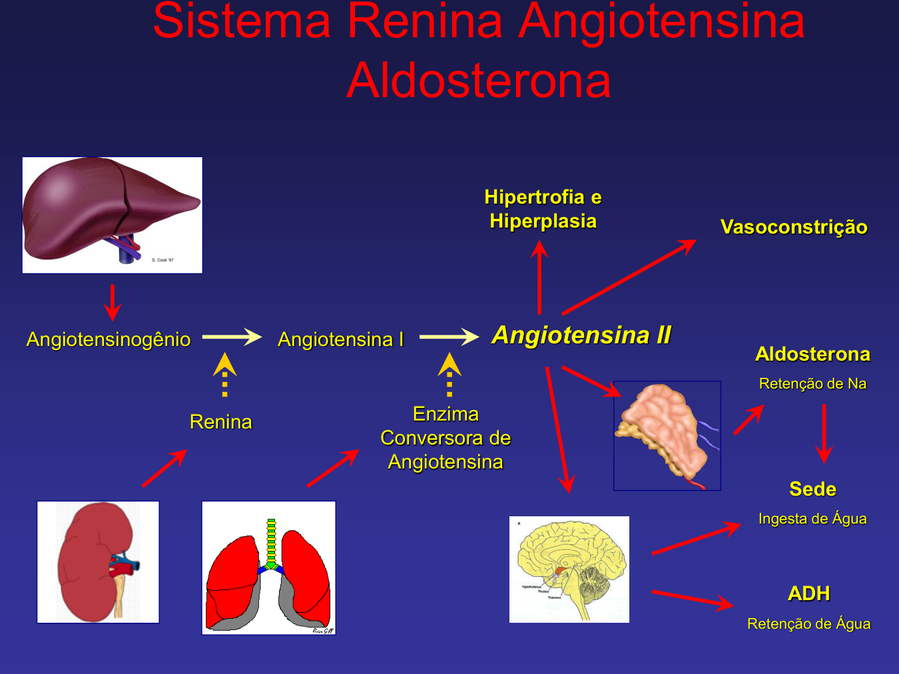
A regra-mnemônica que ele repetiu várias vezes (e mandou usar na prova): tudo que AUMENTA a pressão DIMINUI a liberação de renina; tudo que DIMINUI a pressão AUMENTA a liberação de renina. É só "usar o racional" — o rim libera renina quando sente que falta pressão (para tentar recuperá-la) e segura a renina quando a pressão está sobrando. Com essa única frase você acerta qualquer questão de "o que estimula / o que inibe a renina" sem decorar listas.
Aplicando a regra: quem estimula e quem inibe a renina
Veja como tudo na coluna da esquerda são situações de pressão baixa, e tudo na direita são situações de pressão alta:
| ESTIMULAM a renina (pressão baixa) | INIBEM a renina (pressão alta) |
|---|---|
| ↓ perfusão renal / vasodilatação da arteríola aferente | ↑ pressão de perfusão renal |
| Depleção de volume extracelular (menor ingesta, perdas digestivas/urinárias) | Expansão de volume (dieta rica em Na⁺, retenção renal) |
| Estímulo β-adrenérgico | Estímulo α-adrenérgico |
| ↓ cálcio (cálcio é hipertensor; sua queda é hipotensora) | Aldosterona (já aumentou a volemia) |
| Prostaglandinas E2 / I2 (vasodilatadoras da aferente, via COX) | A própria angiotensina II (feedback negativo) |
| ADH / vasopressina; peptídeo natriurético (ANP/BNP); endotelina |
Repare na elegância: o simpático estimula via β e inibe via α — não é contradição, são receptores diferentes. E note que o cálcio aparece de novo: ele é hipertensor, então sua queda é hipotensora e estimula renina (mais uma razão para conectar este tópico ao BCC).
IECA: a história da jararaca e o maior farmacologista brasileiro
Em 1965, Sérgio Ferreira (USP-Ribeirão Preto), "o maior farmacologista brasileiro", estudava o veneno da Bothrops jararaca. Ele notou algo paradoxal: quem levava a picada tinha queda de pressão — apesar de a dor e o estresse esperarem elevar a PA. Ferreira isolou no veneno um peptídeo que chamou de fator potencializador da bradicinina (BPF — Bradykinin-Potentiating Factor).
Em 1976, um pesquisador inglês (Sir John Vane) partiu desse trabalho e desenvolveu o captopril, o primeiro IECA ativo por via oral — que "reinou" como melhor anti-hipertensivo por mais de 30 anos. Antes de 1976, só havia diurético (furosemida) e simpatolíticos fracos (alfametildopa) — e a mortalidade da HAS era altíssima. Vane recebeu o Prêmio Nobel de Medicina (1982); segundo o professor, Sérgio Ferreira mereceria parte do mérito — "o pesquisador brasileiro, antes de mais nada, é um herói."
IECA: o mecanismo (e o ponto que ele repete exaustivamente)
A ECA tem duas funções que importam aqui: (1) converte angiotensina I em angiotensina II; e (2) inativa um produto da degradação da bradicinina. Acompanhe a química da bradicinina: ela é um nonapeptídeo (9 aminoácidos); a enzima cininase a transforma num octapeptídeo (8 aminoácidos); e esse octapeptídeo é inativado pela ECA.
Quando você inibe a ECA, dois efeitos ocorrem ao mesmo tempo:
- Não se forma angiotensina II → some a vasoconstrição direta, some a aldosterona, some o estímulo de remodelamento;
- Sobra bradicinina (a ECA não a degrada mais) → a bradicinina acumulada dá origem a prostaglandinas, óxido nítrico e endotelina vasodilatadores → efeito vasodilatador adicional.
O ponto que ele repete exaustivamente para corrigir um erro comum: o maior fator hipotensor do IECA NÃO é a bradicinina / vasodilatação — é a inibição da conversão de angiotensina I em angiotensina II. O IECA é vasodilatador, mas não essencialmente, não preferencialmente: vasodilatar é o efeito secundário. O principal é impedir a vasoconstrição (impedir a formação de angiotensina II), e não promover ativamente a dilatação. Se na prova perguntarem "o principal efeito hipotensor do IECA é", a resposta é impedir a formação de angiotensina II, e não "liberar bradicinina". Na rede, os IECA que importam são captopril e enalapril ("o resto não tem; ramipril existe, mas é difícil").
IECA: indicações e o "kit do infarto" (MONA → MONABCDH)
Indicações do IECA: HAS (mono ou associação); hipertrofia ventricular esquerda (porque a angiotensina II é fator de remodelamento); disfunção endotelial; prevenção de reinfarto e eventos coronarianos; e insuficiência cardíaca. (Reinfarto = um novo evento isquêmico após o primeiro; o processo inflamatório e a morte celular podem afetar miócitos vizinhos.)
Para entender onde o captopril entra no infarto, é preciso conhecer o famoso kit MONA — o kit básico da porta do PS para dor precordial:
| Letra | Droga | Função |
|---|---|---|
| M | Morfina | Analgesia (controla a dor) |
| O | Oxigênio | Máscara ou cateter (ver Nota: hoje só se houver hipoxemia) |
| N | Nitroglicerina (nitrato) | Vasodilatador |
| A | AAS (aspirina) | Antiagregante plaquetário |
Depois da internação por IAM, o kit se amplia para MONABCDH:
| Letra | Droga | Por quê |
|---|---|---|
| B | Betabloqueador | Reduz FC e consumo de O₂; evita compensação simpática |
| C | Captopril | Inibe a formação de angiotensina II, envolvida no remodelamento e no reinfarto |
| D | Dipiridamol | Outro antiagregante, por mecanismo diferente do AAS: é inibidor da fosfodiesterase e bloqueia a recaptação de adenosina → ↑ AMPc plaquetário → inibe a agregação (e vasodilata); o AAS bloqueia o tromboxano |
| H | Heparina | Anticoagulante (ver coagulação abaixo) |
O mnemônico MONA/MONABCDH é um recurso didático/histórico útil para memorizar, mas a conduta atual do IAM tem ressalvas importantes em relação ao que se diz em aula. Segundo as diretrizes vigentes (SBC, ESC, AHA/ACC): (1) o oxigênio não é mais administrado de rotina — apenas se houver hipoxemia (SpO₂ < 90%), pois em normoxêmicos pode ser deletério (vasoconstrição coronariana); (2) a morfina ficou reservada à dor refratária aos nitratos, pois retarda a absorção dos antiplaquetários orais; (3) o segundo antiagregante hoje é um inibidor do receptor P2Y12 (clopidogrel, ticagrelor ou prasugrel), e não o dipiridamol — o dipiridamol moderno tem nicho na prevenção secundária do AVC isquêmico (associado ao AAS), não no IAM; e (4) o que mais reduz mortalidade no IAMCSST é a reperfusão precoce (angioplastia primária ou fibrinólise), que o mnemônico não contempla.
O AAS no infarto: "não afina o sangue" e a cascata da coagulação
O AAS (ácido acetilsalicílico) é um anti-inflamatório não esteroidal, inibidor da COX-1 → inibe a formação de tromboxano → impede a agregação plaquetária. As doses mudam conforme o objetivo:
- Dose antiagregante (crônica): 100 mg, 1×/dia.
- Dose analgésica/AINE: 500 mg de 6/6h.
- No PS, dor precordial de risco: 300 mg sublingual (3 comprimidos de 100 mg, sublinguais).
Há três motivos baseados em evidência para recomendar AAS: (1) quem tem fator de risco e usa AAS contínuo infarta menos; (2) quem tem fator de risco, toma AAS e mesmo assim infarta, tem mortalidade menor; (3) quem recebe 300 mg sublingual no momento da isquemia/angina tem menor mortalidade.
Esclarecimento que ele cobra: "AAS não afina o sangue, pessoal. Ele impede a agregação plaquetária." Como a plaqueta não agrega, o paciente sangra mais (o tempo de sangramento aumenta) — por isso o AAS é contraindicado em úlcera gástrica, gastrite e sangramentos intestinal/urinário. Mas, no IAM, é salva-vidas e "custa centavos a dose". Não diga ao paciente que o AAS "afina o sangue" — explique que ele impede que as plaquetas grudem umas nas outras.
A heparina e a cascata da coagulação (vai cair na prova)
Para fechar o "H" do kit, entenda a sequência da hemostasia: primeiro forma-se o trombo plaquetário (o tampão inicial); em seguida, ativam-se as vias intrínseca e extrínseca da coagulação. A heparina impede a transformação de protrombina em trombina; a trombina é quem converte o fibrinogênio solúvel em fibrina, que "amarra" o trombo plaquetário e conclui a obstrução do vaso. Ou seja: sem trombina, não há fibrina; sem fibrina, o trombo não consolida. Esse é o ponto que o professor avisa que "vai cair na prova" — e é exatamente o que se aprofunda em §06 (Anticoagulantes, Antiplaquetários e Fibrinolíticos).
A estatina e o IECA no diabético
Estatina: um trabalho de 1999 "que mudou a história da medicina" mostrou seu poder. A estatina inibe a HMG-CoA redutase, reduzindo a síntese de colesterol. Em quem tem fator de risco e a usa continuamente, há redução de 44% do evento isquêmico. Por isso, quem tem doença arterial coronariana vai tomar estatina pelo resto da vida (inclusive após a alta) e também na insuficiência cardíaca. (As estatinas são o assunto central de §07 — Dislipidemias.)
IECA no diabético: o diabetes é um dos grandes fatores de risco cardiovascular. Um estudo clássico, com curva de sobrevida, mostrou que o uso de IECA no diabético aumenta a sobrevida, com reduções de:
- Mortalidade geral: ~24%;
- AVC: ~33%;
- IAM: ~22%;
- Morte por doença cardiovascular: ~37%.
Por isso o diabético cardiopata deve usar IECA. (O diabetes e seus fármacos são o tema de §08 — Hipoglicemiantes e Insulinoterapia.)
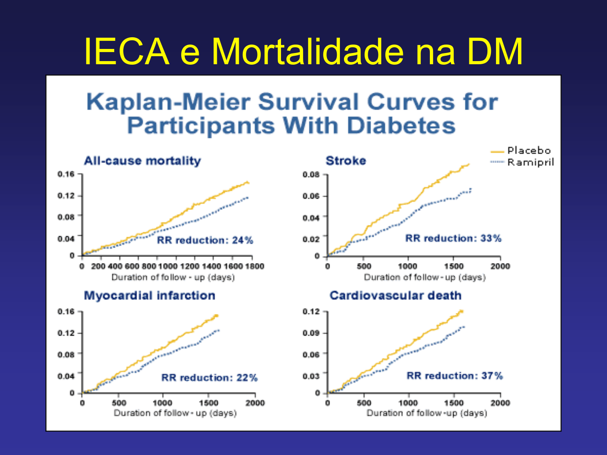
IECA: efeitos adversos — a tosse seca em primeiro lugar
Tosse seca é o efeito adverso mais cobrado do IECA — e a explicação é a bradicinina. Como o IECA não degrada a bradicinina, ela se acumula; e há muita ECA no pulmão, onde a bradicinina é extremamente irritativa. Nas palavras do professor: "por que Deus pôs tanta ECA no pulmão? Porque lá a bradicinina é extremamente irritativa." O resultado é uma tosse irritativa, NÃO produtiva — sem secreção, sem febre, com raio-X limpo. Em sala, o professor mencionou uma incidência "acima de 50%" (impressão clínica, oral), reconhecendo ser mais alta do que diz o livro.
A cifra de ">50%" foi uma estimativa clínica falada do professor. Na literatura baseada em evidência, a incidência de tosse seca por IECA fica em torno de ~5–20% (podendo chegar a ~35% em algumas populações, sobretudo asiáticos e mulheres). Para fins de prova, use ~5–20% como faixa de referência; o ponto clínico central — tosse seca, não produtiva, que melhora ao trocar o IECA por um BRA — permanece igual.
A pegadinha clínica: o médico esquece de perguntar a medicação do paciente, supõe alergia, prescreve antialérgico — e a tosse não melhora. A chave é descobrir que o paciente usa captopril e substituir por outro fármaco (tipicamente a losartana, um BRA). Detalhe temporal importante: a tosse pode levar 1 a 2 anos para se estabelecer; e, ao trocar o medicamento, leva cerca de 1 mês para "lavar" a bradicinina e a tosse desaparecer — avise o paciente que não some no dia seguinte.
Outros efeitos adversos do IECA:
- Teratogenicidade — o IECA é altamente teratogênico (anormalidades ósseas fetais, insuficiência renal neonatal, morte; pior no 2º e 3º trimestres); contraindicado na gestante;
- Hipercalemia — cuidado especial no renal crônico, que já tende a reter potássio (lembre: menos angiotensina II = menos aldosterona = menos excreção de K⁺); o IECA piora;
- Hipotensão de primeira dose (em hipovolêmicos com renina elevada), redução da filtração glomerular, edema angioneurótico de face/orofaringe, erupções cutâneas, prurido.
BRA (bloqueador do receptor da angiotensina): a losartana
O losartana é o BRA (bloqueador do receptor da angiotensina II) de referência. Em vez de impedir a formação da angiotensina II (como o IECA), ele bloqueia o receptor AT1 — a angiotensina II até se forma, mas não encontra o receptor para agir. Indicações e efeitos são essencialmente os mesmos do IECA (e há sinergia entre as duas classes).
A grande vantagem prática: como o BRA não mexe na bradicinina, ele não causa tosse seca. Por isso é o substituto natural do captopril no paciente que tossir. Detalhe que o professor faz questão de explicar: ao trocar captopril por losartana, a tosse não some na hora — a ECA fica livre e volta a degradar o octapeptídeo/bradicinina, mas leva "um lapsinho" (cerca de 1 mês) para a bradicinina acumulada ser eliminada e a tosse desaparecer.
A losartana está disponível na rede pública e é citada como primeira escolha em monoterapia (junto com diurético e IECA). Atenção: a losartana também é teratogênica — assim como o IECA, está contraindicada na gestante.
Inibidor direto da renina e a nota sobre o Entresto
Há ainda o inibidor direto da renina: o alisquireno (nome comercial Rasilez), lançado por volta de 2007. Ele inibe a atividade da renina, de modo que a angiotensina I sequer se forma — ataca a cascata antes de todos os outros. A avaliação do professor é direta: "uma boa ideia que não deu certo." É caro, não se mostrou melhor que os outros, e ele nunca cobra na prova ("acho idiota"). Pode aparecer numa prova americana (Q-USA), mas para o nosso contexto é dispensável.
Como nota de horizonte, ele cita o Entresto (sacubitril + valsartana) — um inibidor da enzima neprilisina associado a um BRA — que "está revolucionando" o tratamento da insuficiência cardíaca. O mecanismo da neprilisina não foi detalhado nesta aula; fica a referência.
Betabloqueadores: definição, receptores, potência e seletividade
Os betabloqueadores (surgidos na década de 1950) antagonizam de forma competitiva e reversível a ação das catecolaminas (endógenas e exógenas) nos receptores β-adrenérgicos. Os receptores beta têm localizações distintas:
- β1 — predomina no coração: aumenta frequência, força e automatismo (aumenta tudo);
- β2 — predomina em pulmão/brônquio, vasos e musculatura lisa: promove broncodilatação e vasodilatação.
As propriedades de cada betabloqueador diferem em duas dimensões, ambas medidas tomando o propranolol como referência:
| Fármaco | Potência | Seletividade β1 | Comentário |
|---|---|---|---|
| Propranolol | 1 | 0 (não seletivo) | Precursor da classe; bloqueia β1 e β2 igualmente |
| Atenolol | 1 | moderada (β1) | 2ª geração; bloqueia mais β1 que β2 |
| Metoprolol | 1 | seletivo β1 | β1-seletivo (2ª geração); menos efeitos indesejados (Selozok) |
| Carvedilol | 10 | 0 (não seletivo) | Potente e não seletivo, com bloqueio α1 (vasodilatador) → é a verdadeira 3ª geração; perigoso no asmático |
Por que a PA cai mesmo bloqueando β2? Bloquear β2 deveria, em tese, causar vasoconstrição (perda da vasodilatação β2 do vaso) e subir a resistência. Mas, na conta PA = débito × resistência, a queda do débito é maior que o aumento da resistência — então a pressão cai. E quanto mais seletivo β1 (atenolol, metoprolol), menos o fármaco bloqueia β2, menor o aumento de resistência e, portanto, maior tende a ser a queda final de PA.
O broncoespasmo e a regra do asmático: o propranolol, por bloquear fortemente β2, causa broncoespasmo — perigoso no asmático. Pior: ele também reduz a resposta aos broncodilatadores β2 (salbutamol, SABA/LABA), porque o receptor β2 está ocupado/bloqueado — o "remédio do bombinha" não funciona direito. A solução é trocar por um β1 seletivo (atenolol/metoprolol), preservando a broncodilatação. O carvedilol (potência 10, seletividade 0) é o oposto disso — "um cemitério de cruzes" no paciente asmático/respiratório, contraindicação forte. O metoprolol (Selozok, ~R$ 60 a faixa, distribuído na rede) é hoje um dos melhores betabloqueadores.
A classificação de betabloqueadores por "gerações" não é padronizada e, na nomenclatura mais usada, difere do que foi dito em aula: 1ª geração = não seletivos (propranolol); 2ª geração = β1-seletivos (atenolol, metoprolol, bisoprolol); 3ª geração = com ação vasodilatadora adicional (carvedilol, por bloqueio α1; nebivolol, via óxido nítrico). Portanto atenolol e metoprolol são ambos de 2ª geração (β1-seletivos), e o carvedilol é que seria de 3ª geração. A mensagem clínica (preferir β1-seletivo no asmático) não muda.
Betabloqueadores: por que protegem o coração
Os mecanismos de cardioproteção do betabloqueador são vários (alguns ainda não totalmente conhecidos):
- Redução do consumo de oxigênio — ao baixar FC, PA e contratilidade, o coração trabalha menos (baixar de 80 para 70 bpm já poupa trabalho); ótimo para a doença arterial coronariana;
- Aumento do tempo de perfusão diastólica — o coração se perfunde durante a diástole; reduzindo a FC, ele passa mais tempo em diástole e perfunde melhor o próprio miocárdio (e redistribui fluxo para áreas isquêmicas);
- Prevenção/atenuação da ruptura da placa e da trombose coronária subsequente (estabiliza o endotélio);
- Desvio favorável da curva de dissociação O₂-hemoglobina — favorecendo o metabolismo aeróbico sobre o anaeróbico (o anaeróbico gera ácido lático, tóxico ao miocárdio e causa de dor);
- Redução da lesão microvascular e estabilização das membranas dos lisossomos — lisossomos de um miócito mal perfundido podem romper-se e desencadear IAM/morte celular.
Uma observação fisiológica do professor: o músculo cardíaco não tem "cãibra" nem fadiga como o esquelético. O esquelético trava quando sobrecarregado; o cardíaco vai sofrendo a isquemia até morrer. Por isso poupar trabalho cardíaco é tão importante.
Betabloqueadores: indicações e o paradoxo da ICC
Indicações: HAS (mono ou associação — com um asterisco, abaixo); angina (reduz FC e consumo de O₂ — efeito antianginoso); angina instável (associado ao BCC); IAM (o "B" do MONABCDH); antiarrítmico (quase toda arritmia perigosa é taquiarritmia, e o betabloqueador segura a frequência); prolapso de valva mitral; aneurisma dissecante de aorta; síndrome do QT longo (padrão eletrocardiográfico que predispõe a arritmia grave); e insuficiência cardíaca.
O paradoxo da ICC — por que dar um inotrópico negativo a um coração fraco? Pareceria contraditório. O professor explica com um modelo experimental (rato com infarto cirúrgico por um nó na coronária descendente anterior). Após o IAM, o paciente entra em insuficiência cardíaca: a morte de miócitos reduz a função contrátil e cai o débito. O coração compensa aumentando a frequência (via simpático). Acontece que essa compensação simpática aumenta o trabalho e o consumo de O₂ e piora a doença a longo prazo. O betabloqueador evita essa compensação simpática deletéria, poupando o coração. Ou seja: o objetivo NÃO é aumentar a perfusão da área isquêmica — é frear a hiperatividade simpática que está destruindo o coração que ainda funciona.
Sobre a fisiopatologia pós-IAM: a área sem perfusão não apodrece — ela fibrosa (vira cicatriz fibrosa) e perde a função contrátil definitivamente; "a área isquemiada já era". Em pessoas mais velhas (>40 anos), as colaterais ("gambiarra" vascular formada ao longo da vida) dão alguma sobrevida.
Aparte: a dobutamina pós-IAM (ponte para §05)
Enquanto o betabloqueador freia o simpático na ICC crônica, no paciente crítico agudo às vezes é preciso sustentar o débito. Para isso usa-se a dobutamina — um agonista β1 seletivo, droga vasoativa administrada em bomba (meia-vida curta, uso IV contínuo). Ela mantém o débito e a perfusão dos órgãos até a revascularização ou a estabilização. Por que não adrenalina? Porque a adrenalina pegaria também os receptores α; por isso se escolhe um agonista β1 seletivo. O professor citou o caso de um cantor/famoso mantido com dobutamina pós-IAM, cuja única saída seria o transplante — inviável pela idade e comorbidades. (As drogas vasoativas como a dobutamina são o tema de §05 — Paciente Crítico / UTI.)
Betabloqueadores: efeitos adversos e o antídoto que cai na prova
Há efeitos inespecíficos (comuns a quase tudo): astenia, fadiga, tontura, parestesias, sintomas gastrointestinais (cólica, diarreia/constipação, dor epigástrica, flatulência), e — raros — púrpura e agranulocitose. Mas os que importam (os específicos) são:
- Bradicardia excessiva;
- Bloqueio atrioventricular / bloqueio de ramo (dromotropismo negativo) — limitante;
- Efeitos vasculares periféricos (vasoconstrição);
- Broncoespasmo (o asmático sofre muito);
- Síndrome de retirada / efeito rebote — não se pode suspender abruptamente; a hiperativação simpática de rebote pode atingir níveis maiores que os de antes do tratamento.
O antídoto que cai na prova: a intoxicação por betabloqueador é revertida com glucagon. Por quê? Porque o glucagon tem um efeito inotrópico positivo sobre o coração INDEPENDENTE do simpático — ele aumenta a força de contração sem precisar estimular todo o sistema simpático (como fariam adrenalina ou dobutamina, que esbarram no receptor bloqueado). É uma rota alternativa que "passa por fora" do receptor beta antagonizado.
A máxima da aula (e o asterisco do betabloqueador): "mexer com débito, mexer com o coração, não é brincadeira. É muito mais seguro mexer com a resistência para baixar a pressão." Por isso ele mandou marcar um asterisco na indicação "HAS" do betabloqueador: nunca se COMEÇA o tratamento da hipertensão com betabloqueador — só em caso específico (paciente que já tem doença cardiovascular/placa, ou taquicardia basal/arritmia leve). Sem uma indicação cardíaca específica, o betabloqueador não é a porta de entrada.
Simpatolíticos centrais: metildopa e clonidina
Em 1940, um modelo experimental mostrou que seccionar a cadeia simpática bilateralmente reduzia a PA — ou seja, bloquear o simpático baixa a pressão. Na década de 1950 surgiu a metildopa (introduzida na clínica em 1963); no início dos anos 1960 veio a clonidina (que começou como descongestionante nasal tópico). Os simpatolíticos centrais reduzem a PA por redução da resistência (vasodilatação): apesar de a ação ser "central", o efeito final se dá perifericamente no vaso, com modulação no arco aórtico/barorreflexo, e sem alterar muito o débito.
O mecanismo da metildopa — o "falso neurotransmissor": relembre a via de síntese das catecolaminas — fenilalanina → tirosina → DOPA → dopamina → noradrenalina. A alfametildopa é uma DOPA com um radical metila (CH₃) acoplado. Ela é incorporada à via e gera neurotransmissores anômalos que se ligam ao receptor mas não desencadeiam a resposta simpatomediada — daí o nome falso neurotransmissor: ocupa a vaga, mas não "liga o motor". Resultado: menos tônus simpático, menos vasoconstrição, menos pressão. Fazem parte da classe: alfametildopa, moxonidina e clonidina.
A única indicação como monoterapia — e por quê: ninguém usa simpatolítico central como monoterapia na HAS comum (é 5ª ou 6ª escolha, só depois de esgotar associações). A única situação em que a metildopa é monoterapia de escolha é a gestante — e o professor faz questão de dizer que ela é o "menos pior", não o melhor. O raciocínio por eliminação: na gestante, o IECA e a losartana são teratogênicos (proibidos); o diurético reduz o líquido amniótico (risco de oligoâmnio e sofrimento fetal); o BCC relaxa demais a musculatura (risco no períneo). Sobra a metildopa. Outras indicações pontuais: o teste da clonidina para diagnóstico de feocromocitoma (tumor secretor de catecolaminas) e alguns casos de hipertrofia ventricular esquerda.
Simpatolíticos centrais: por que são pouco usados
Os efeitos adversos explicam o porquê de ficarem tão atrás no fluxograma:
- Janela terapêutica estreita — a dose tóxica fica perto da usual; pequena variação entre a dose mínima e a máxima recomendada (pouca margem de segurança);
- Efeito rebote / de retirada — níveis tensionais que sobem acima dos anteriores ao tratamento; exige desmame gradual, nunca retirar de uma vez;
- Ansiedade, tremor, cefaleia, sudorese, taquicardia (sinais de atividade excessiva do SNC);
- Disfunção sexual (sobretudo a metildopa);
- Hipotensão ortostática — porque o simpático é quem ajusta a vasoconstrição/vasodilatação momento a momento (ao levantar-se, ele falha em corrigir);
- Sedação/sonolência, retenção de volume, hepatotoxicidade (reversível com a suspensão) e anemia hemolítica (<0,5%).
Bloqueadores alfa-1 adrenérgicos: a prazosina e a próstata
Os bloqueadores alfa-1 antagonizam (de forma competitiva) os receptores α1 periféricos, inibindo a vasoconstrição arterial induzida pelas catecolaminas — relaxam a musculatura lisa arterial e baixam a resistência. (Como o antagonismo é competitivo, numa hiperativação simpática a resposta é menor: depende do "tônus" simpático do momento.)
Mas o que torna esta classe interessante são os efeitos fora do vaso: o bloqueio α1 dilata ureter e uretra e reduz a resistência ao esvaziamento vesical. Daí duas aplicações urológicas:
- Hiperplasia prostática benigna (HPB) — facilita a micção do homem com próstata aumentada;
- Cálculo renal — o bloqueio α1 seletivo no trato geniturinário é feito pela tansulosina (Secotex), que dilata ureter/uretra e, junto com muita água, favorece a expulsão do cálculo. (Anatomia: o ureter faz uma curva por causa da artéria mesentérica inferior, e é ali que o cálculo costuma encalhar; o cálculo espiculado gera inflamação e edema, que pioram a expulsão — por isso Secotex + água para tentar fazê-lo migrar.)
Esta classe também melhora o perfil lipídico e glicídico (ação off-label favorável). Exemplos: prazosina, terazosina, doxazosina — a mais importante é a prazosina.
Posição no fluxograma: "nunca vi ninguém usar prazosina para tratar hipertensão" como início — quando se chega na prazosina, o paciente já tentou cerca de 6 medicamentos associados; é uma droga de etapa muito tardia da marcha terapêutica. Indicações: HAS (tardia), insuficiência cardíaca, HPB e alguns exames de urodinâmica.
Efeito adverso clássico — o "fenômeno de primeira dose": hipotensão postural que ocorre 30-90 minutos após a primeira dose. Também: retenção compensatória de sal e água, tontura, cefaleia (vasodilatação dos vasos cerebrais), sonolência e náuseas.
Vasodilatadores diretos: hidralazina, minoxidil e diazóxido
Os vasodilatadores diretos agem diretamente na musculatura lisa vascular, reduzindo a resistência (por mecanismos diversos entre eles), sem mediação direta do sistema nervoso autônomo ou humoral. A hidralazina foi o primeiro anti-hipertensivo ativo por via oral comercializado (década de 1950); os outros exemplos são o diazóxido e o minoxidil.
O problema central desta classe: a vasodilatação intensa desencadeia duas respostas reflexas ao mesmo tempo — ativa o SRAA (aumenta a liberação de renina, pela queda de pressão) e ativa o simpático (taquicardia reflexa). Por isso eles nunca são usados como monoterapia: exigem associação com diurético e/ou betabloqueador (o diurético contém a retenção de volume; o betabloqueador segura a taquicardia reflexa). São reservados para a HAS grave de difícil controle — "a associação da associação da associação", quando as outras classes já estão em uso e falharam.
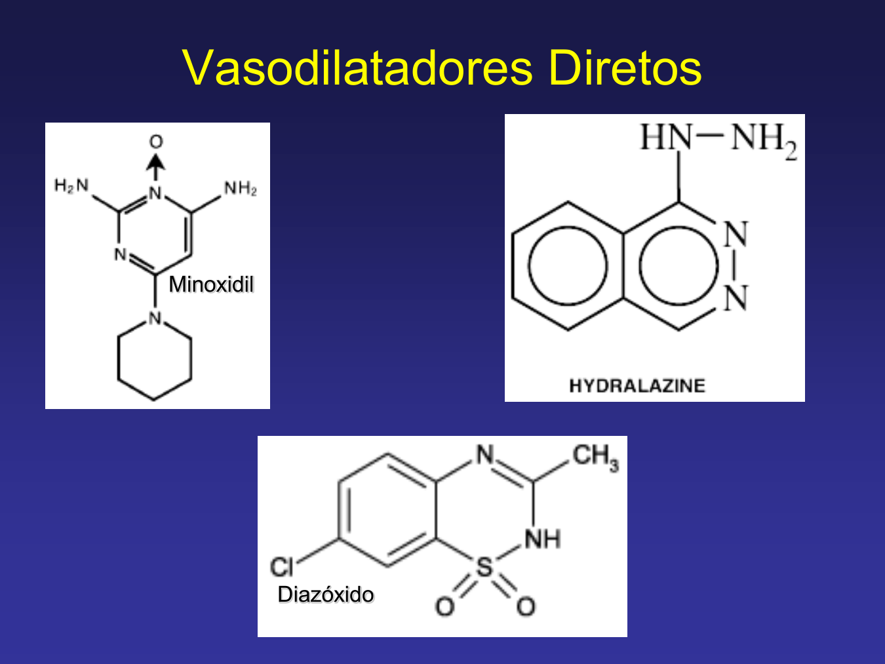
Vasodilatadores diretos: indicações, o minoxidil-cabelo e efeitos adversos
Indicações: HAS de difícil controle (associada a betabloqueador e/ou diurético) e, com destaque, a emergência hipertensiva da gestante / pré-eclâmpsia — e aqui a droga é a hidralazina. Note a diferença: na gestante, a metildopa é para o controle crônico; a hidralazina é para a emergência (uso agudo).
O minoxidil e o cabelo: o uso off-label mais famoso do minoxidil é o crescimento capilar — mas por loção tópica, não pela via oral (a forma oral em dose plena daria hipotensão forte; existe minoxidil oral em dose menor). O professor alerta: cuidado ao aplicar a loção para não escorrer para a testa ou a orelha — senão "cresce pelo onde não se quer".
Efeitos adversos: taquicardia compensatória (o vasodilatador "rouba" e dispara o reflexo), cefaleia, sudorese, tremor, diarreia, rubor e — atenção — angina (a vasodilatação pode piorar a angina, pelo mesmo mecanismo barorreflexo de sempre); e ainda retenção de água e sal. Por fim, reações imunológicas, sendo a mais cobrada a síndrome lupus-like — a hidralazina pode desencadear um quadro semelhante ao lúpus (também anemia hemolítica, vasculite e glomerulonefrite rapidamente progressiva).
A marcha terapêutica da HAS: o fluxograma que "vai despencar na prova"
O professor avisou claramente: este fluxograma "vai despencar na prova", e é "fácil e rapidinho". A decisão de como tratar depende de três coisas: o estágio da HAS, os fatores de risco e as indicações/comorbidades.
Valores de referência citados: pré-hipertensão acima de 120/80 mmHg; HAS estágio 1 acima de 140/90 mmHg. Entre os ≥80 anos, mais de 70% são hipertensos (envelhecer aumenta o número de hipertensos).
As medidas não-medicamentosas (a "tabelinha que todo paciente deveria tatuar") e quanto cada uma reduz a PA sistólica:
| Medida não-medicamentosa | Redução da PA sistólica |
|---|---|
| Perda de 10 kg de peso | até 20 mmHg |
| Dieta DASH | até 14 mmHg |
| Exercício físico | ~10 mmHg |
| Redução do consumo de sal | ~8 mmHg |
| Moderação do álcool | ~4 mmHg |
(Contexto: o brasileiro consome ~12 g/dia de sódio, contra uma necessidade de apenas ~3 g/dia.)
O fluxograma propriamente dito:
- Pré-hipertenso (120/80) e estágio 1 com risco baixo/sem risco: NÃO se trata com medicamento — apenas medidas não-medicamentosas. (Os americanos quiseram tratar o pré-hipertenso, mas não há consenso científico.)
- Estágio 1 com risco cardiovascular baixo ou moderado: medidas não-medicamentosas + MONOTERAPIA. A escolha da monoterapia é diurético, IECA ou BRA (losartana) — a "primeiríssima escolha". O BCC não é o mais usual para iniciar, e o betabloqueador só em caso específico (nunca se começa com ele sem motivo cardíaco).
- Estágio 1 com risco ALTO, ou estágios 2 e 3: já se começa com DOIS medicamentos de classes diferentes, em doses baixas.
A regra de reavaliação: após 1 mês (4 semanas) sem atingir a meta, há 3 opções — (1) aumentar a dose, (2) associar um segundo (ou terceiro) fármaco, ou (3) trocar a medicação. Escolhe-se a mais indicada para o caso e vai-se somando até cerca de 5 medicamentos antes de recorrer aos alfabloqueadores e vasodilatadores diretos. Com esse "pacote básico", "99,1% das pessoas você resolve."
Raciocínio sobre efeitos adversos: antes de simplesmente aumentar a dose (o que aumenta o efeito indesejado), considere trocar — por exemplo, um BCC que causa muita cefaleia/vasodilatação pode ser substituído por um diurético, que vasodilata menos; reavalie em 1 mês.
O "hexágono" das associações e o anti-hipertensivo ideal
As associações recomendadas formam um "hexágono" com linhas verdes (as combinações mais testadas e recomendadas): o diurético tiazídico pode associar-se com IECA, com BRA, com BCC ou com betabloqueador. As linhas tracejadas pretas são combinações possíveis, porém menos testadas. Os "outros" (alfametildopa, hidralazina, alfa-1) só entram depois, como recurso adicional.
Critérios do anti-hipertensivo ideal:
- Eficaz por via oral;
- Bem tolerado, com efeitos adversos aceitáveis;
- Menor número de tomadas (preferencialmente 1×/dia — até a losartana costuma ser dose diária);
- Iniciar com a menor dose e aumentar gradativamente (quanto maior a dose, maior a chance de efeito indesejável);
- Não obter por manipulação.
Sobre a farmácia de manipulação (recomendação da diretriz mais nova): só se deve manipular o que não existe industrializado (na dose/via/forma/associação que falta). O problema da manipulação é a qualidade e a bioequivalência — historicamente, o controle de qualidade era terceirizado via certificado do fornecedor. O manipulado já foi mais barato que o industrializado; com a lei restringindo, muitas farmácias fecharam.
PEGADINHA DE ESTADIAMENTO (cai na prova): quando a sistólica e a diastólica caem em estágios diferentes, você considera SEMPRE O PIOR (o mais alto). Nas palavras dele: "você sempre considera o pior. 160 por 110? Três. Daí ele passa a ser três." Exemplos: 160/95 → estágio 2; 159/100 → estágio 2; 160/110 → estágio 3 (mesmo a sistólica sendo "só" estágio 2, a diastólica de 110 puxa tudo para o estágio 3 — inclusive para a estratificação de risco e para a conduta terapêutica). E lembre: lesão de órgão-alvo (coração, cérebro, rim, vaso) torna o risco cardiovascular ALTO independentemente de qualquer outro fator; o estágio 3 exige intervenção medicamentosa imediata — "não posso deixar o camarada no estágio 3".
- → PA = DC × RVP; DC = VS × FC. Toda droga anti-hipertensiva ataca volume, frequência/força ou resistência. Mexer na resistência é mais seguro que mexer no débito/coração.
- → BCC: bloqueiam a subunidade α1 do canal de cálcio. Não-DHP (verapamil/diltiazem) = afinidade cardíaca, ino/crono/dromotrópico negativos, antiarrítmicos. DHP (anlodipina/nifedipina) = afinidade vascular, vasodilatação. O "pecado" é dilatar rápido (ativa barorreflexo → simpático). 3ª geração (anlodipina) é a melhor: início lento, sem rebote.
- → Pegadinha do BCC: DHP isolado serve na angina estável, mas NÃO na instável (precisa associar betabloqueador). Nifedipina sublingual = má prática médica (CRM-SP, 2004) por isquemia de órgão-alvo na queda abrupta.
- → SRAA: angiotensina II (via AT1) faz vasoconstrição + aldosterona (retém Na⁺/água, perde K⁺) + sede/ADH + remodelamento. Regra de ouro: o que ↑ pressão ↓ renina; o que ↓ pressão ↑ renina.
- → IECA (captopril/enalapril): o maior efeito hipotensor é impedir a formação de angiotensina II, NÃO a bradicinina. Efeito adverso campeão: tosse seca (~5–20% pela evidência; o professor citou >50%, não produtiva, RX limpo) → trocar por losartana (BRA). Ambos teratogênicos. Reduzem mortalidade no diabético.
- → Kit do infarto: MONA (Morfina, Oxigênio, Nitrato, AAS) → ampliado MONABCDH (+ Betabloqueador, Captopril, Dipiridamol, Heparina). AAS não "afina o sangue" — impede agregação (inibe COX-1/tromboxano); 100 mg/dia crônico, 300 mg sublingual na isquemia.
- → Betabloqueador: potência/seletividade β1 referidas ao propranolol. Asmático → β1 seletivo (atenolol/metoprolol); carvedilol é proibido. NUNCA se começa HAS com betabloqueador (só em caso cardíaco específico). Na ICC, freia a compensação simpática. Antídoto da intoxicação = glucagon (inotrópico independente do simpático).
- → Marcha terapêutica: 1ª escolha = diurético/IECA/BRA. Estágio 1 baixo risco = monoterapia; estágio 1 alto risco / estágios 2-3 = começa com dois. Reavaliar em 4 semanas (aumentar / associar / trocar). Estadiamento: considerar SEMPRE O PIOR valor (160/110 = estágio 3). Metildopa = única monoterapia na gestante (o "menos pior"); hidralazina = emergência hipertensiva da gestante.
Diuréticos e Farmacologia Renal
Por que estudar o rim antes dos diuréticos
Você não consegue entender um diurético sem entender o rim, porque o diurético é, literalmente, uma droga que muda o jeito como o rim mexe na urina. Então a lógica desta seção é simples: primeiro a gente passa pela farmacologia renal — como o rim filtra, secreta e reabsorve — e só depois ataca cada classe de diurético. Os dois assuntos são o mesmo assunto visto de dois ângulos.
O rim faz três coisas com o sangue: filtra (deixa passar o plasma livre de células e de moléculas grandes para dentro do túbulo), reabsorve (recupera o que é útil — água, sódio, glicose) e secreta (joga ativamente para dentro do túbulo o que precisa sair mas não foi filtrado). Guarde esses três verbos: a aula inteira gira em torno deles.
E por que isso importa clinicamente? Porque quando o rim falha, todo o resto do corpo é envenenado pelo próprio sangue — e porque os diuréticos são, ao mesmo tempo, os anti-hipertensivos mais baratos e usados do mundo e drogas capazes de matar por desequilíbrio de potássio. Saber onde cada um age no néfron é o que separa prescrever de errar.
Filtração glomerular: a pressão que mantém o rim vivo
O glomérulo é um novelo de capilares dentro da cápsula renal. Ele se parece com qualquer outro leito capilar do corpo, com uma diferença fundamental: a saída do glomérulo não é uma vênula, e sim uma arteríola eferente. Ter uma arteríola na saída (e não uma vênula) permite ao rim regular a pressão lá dentro apertando ou afrouxando essa arteríola — é o que dá ao glomérulo o controle fino da filtração.
A força que empurra o plasma para fora do capilar e para dentro da cápsula é a pressão hidrostática capsular. É uma questão de pressão, pura e simples: se há pressão suficiente, o plasma é espremido para dentro do túbulo e vira filtrado. Se a pressão cai, a filtração para.
E aqui vai o número que o professor faz questão de cravar: a filtração glomerular cessa quando a pressão chega em torno de 40 mmHg, e por isso o corpo trabalha para manter algo em torno de 55 mmHg de pressão dentro do glomérulo — uma margem de uns 10 mmHg de segurança. A ideia central, que vale guardar, é a causal: se a pressão de filtração despenca, forças que se opõem à filtração vencem, o filtrado para de ser produzido, o paciente entra em anúria (não produz urina) e o néfron começa a morrer. É a insuficiência renal aguda se instalando.
Os números "40 mmHg / 55 mmHg" são valores didáticos do professor, não constantes fisiológicas canônicas. Na fisiologia padrão: a pressão hidrostática glomerular normal é de cerca de 55–60 mmHg; a filtração efetiva resulta do balanço das forças de Starling = pressão hidrostática glomerular − (pressão capsular ~10–15 mmHg + pressão oncótica do plasma ~25–30 mmHg), e cessa quando oncótica + capsular igualam a hidrostática (equilíbrio de filtração), não num valor único. Além disso, a autorregulação renal mantém a TFG estável numa faixa ampla de pressão arterial média (≈80–180 mmHg); a TFG só despenca quando a PA média cai abaixo do limite inferior da autorregulação. Guarde a lógica causal do professor (pressão cai → filtração para → IRA), mas não fixe o "40 mmHg" como número fisiológico.
Os números da filtração normal no adulto: o rim filtra 100 a 120 mL de plasma por minuto e produz, em média, ~160 litros de filtrado por dia. Mas você não urina 160 litros — porque 99% disso é reabsorvido. Sobram só 1,5 a 2 litros de diurese por dia. A reabsorção tubular acontece por transporte ativo de eletrólitos e solutos: o rim recupera o quanto for necessário e elimina o excesso.
Esses 2 litros que sobram explicam a recomendação de beber ~2 litros de água por dia — é o que você perde. E "água" aqui conta tudo: a água do café, do suco, dos alimentos. Quem tem o hábito de beber um pouco mais do que isso se beneficia.
Pediatria — o sinal de alarme: a criança que passa um dia inteiro sem urinar exige investigação urgente da função renal. Não é "esperar para ver": pode ser uma insuficiência renal aguda se instalando, e a janela para reverter é estreita. O raciocínio é o mesmo da fisiologia — se não está saindo urina, ou a pressão de filtração despencou, ou há obstrução, e os dois caminhos terminam no glomérulo morrendo.
Filtrar, secretar e a pegadinha da creatinina
Nem tudo que sai na urina foi filtrado. O rim filtra o que é pequeno e livre, mas tudo que não é filtrado e precisa ser eliminado é secretado — ativamente jogado para dentro do túbulo, geralmente já nas porções iniciais do túbulo contorcido proximal. Quem entra na lista da secreção? Macromoléculas, moléculas orgânicas e fármacos ligados a proteínas plasmáticas — por tamanho ou por estarem grudados na proteína, não conseguem atravessar a membrana de filtração, então o rim os secreta.
Isso muda quem é filtrado e quem é secretado entre os íons: o sódio filtra; o potássio é secretado; e o hidrogênio (H⁺) também é secretado. O H⁺ é curioso: apesar de ser o menor átomo possível, ele tem altíssima eletropositividade e por isso sofre repulsão na barreira de filtração — não passa, e tem que ser jogado para fora ativamente.
Agora a pegadinha clássica da prova, e o professor para tudo para avisar: na fala dele, "a creatinina NÃO é filtrada — ela é SECRETADA". A consequência clínica que ele quer fixar está certa: na insuficiência renal a creatinina sanguínea AUMENTA (fica retida no sangue) e a creatinina urinária DIMINUI. Por isso uma creatinina alta no sangue é um marcador tão fiel de rim ruim. Guarde a frase do jeito que ele cobra na prova — mas leia a nota de precisão abaixo, porque o mecanismo fisiológico real é o inverso do enunciado.
Detalhe prático: a dosagem de rotina de creatinina é feita no sangue. Só se dosa creatinina na urina quando se quer calcular o clearance (já vamos chegar lá).
O professor cobra a frase "creatinina é secretada, não filtrada", mas o mecanismo fisiológico real é o oposto: a creatinina é uma molécula pequena, não ligada a proteínas, e por isso é livremente FILTRADA no glomérulo — é justamente por ser filtrada e quase não reabsorvida que ela aproxima a TFG. Existe uma secreção tubular adicional pequena (~10–20%) pelo transportador de cátions orgânicos, e é por causa dela que o clearance de creatinina superestima ligeiramente a TFG (a inulina, que é só filtrada, é o padrão-ouro). Na insuficiência renal a creatinina sobe no sangue porque a filtração (TFG) cai, não porque "a secreção falhou". Para a prova, repita a frase do professor; para a fisiologia correta, guarde: predominantemente FILTRADA, com secreção tubular menor.
"Creatinina. Não confunda com creatina." O professor corrige isso explicitamente. Creatina é o suplemento que o pessoal toma na academia. Creatinina (com "n") é o produto de degradação da creatina muscular que o rim precisa eliminar — e o marcador de função renal. Trocar uma pela outra na prova é cair direto na armadilha.
Clearance e Cockcroft-Gault: medindo o quanto o rim ainda funciona
O clearance de creatinina (clíris, na pronúncia) é o exame mais preciso da função renal. A definição prática: quanto de plasma o rim consegue "limpar" por minuto. O normal é filtrar ~100 mL de plasma por minuto. Quando esse número cai para algo em torno de 28 mL/min, houve perda de aproximadamente 70% da função renal — e esse é o paciente que entra em diálise.
Como se calcula o clearance? Coleta-se a urina de 24 horas mais uma amostra de sangue. A conta usa a creatinina urinária multiplicada pelo volume-minuto urinário, dividida pela creatinina sanguínea. E o que é o volume-minuto? São os mililitros de urina por minuto: pega-se a urina de 24 horas e divide-se por 1.440 (o número de minutos que tem um dia).
Existe um atalho: a fórmula de Cockcroft-Gault, que estima a função renal a partir da creatinina e da idade do paciente (há aplicativo que faz a conta). É menos precisa que o clearance medido com urina de 24h, mas é rápida e útil na beira do leito.
Cuidado com armadilhas que reduzem o clearance sem que o rim esteja doente: a desidratação também derruba o clearance — menos água, menos plasma filtrado.
Quando o rim falha: toxemia, oligúria e o caminho até a diálise
Quando o rim para de funcionar direito, tudo que ele deveria estar eliminando começa a se acumular no sangue: as escórias (catabólitos, "escretas" do metabolismo), os eletrólitos e até os fármacos sobem na corrente sanguínea. O sangue passa a ser tóxico — é a toxemia (ou uremia). Literalmente, o sangue do paciente se torna venenoso para ele mesmo.
O renal crônico evolui em fases: primeiro entra em oligúria (produz pouca urina) e depois em anúria (praticamente não urina mais). E aqui está uma consequência que parece contraintuitiva: o paciente em hemodiálise não urina, então não pode beber água — porque a água que entra não tem por onde sair e vai sobrecarregar o coração e os pulmões.
"Não pode beber água" inclui a água escondida nos alimentos. O professor é específico: melancia, chuchu, alimentos cozidos são proibidos, porque carregam água que conta no balanço. O chuchu, ele brinca, é praticamente o "quarto estado físico da água". O resultado dessa retenção: o paciente chega a perder ~2 kg (~2 litros de água) por sessão de hemodiálise.
Hemodiálise e diálise peritoneal: como se limpa um sangue tóxico
A indicação de hemodiálise aparece quando a TFG (o clearance) cai para algo em torno de 28 mL/min — ou seja, perda de ~70% da função. Na hemodiálise o sangue é ligado a uma máquina (o dialisador) que faz o trabalho do rim. O regime: 3 a 4 sessões de 4 horas por semana.
Os números da transformação são brutais. O paciente entra com creatinina ~6 (lembre: o normal é até 1,2; isso é 3 a 4 vezes o normal) e sai com menos de 1. Entra com potássio ~7 mEq/L — um valor que por si só já é risco de parada cardíaca — e sai com ~2,5.
A diálise peritoneal usa um filtro diferente: a própria membrana peritoneal do paciente. Injeta-se um líquido hipotônico dentro do peritônio; por diferença de concentração, as toxinas do sangue migram para esse líquido. Deixa-se um tempo, a solução vai ficando hipertônica (carregada de escórias) e então é aspirada. É a limpeza por concentração. A vantagem: pode ser feita em domicílio, por famílias treinadas (o SUS fornece o material), o que evita internar e sobrecarregar o hospital. É indicada quando o paciente ainda tem alguma função renal.
O risco grave da peritoneal: se for injetado um micro-organismo junto com o líquido no peritônio, o paciente pode evoluir para choque séptico e morte. Por isso a técnica asséptica é inegociável.
Sobre a fila: a demanda por diálise é enorme no Brasil e no mundo. O governo contrata clínicas particulares para fazer hemodiálise pelo SUS, e as vagas são tão disputadas que uma vaga só "abre" quando um paciente transplanta ou morre. A hemodiálise é, no fundo, uma ponte temporária até o transplante renal — que, fora a córnea, é o segundo transplante mais feito no Brasil, justamente porque pode ser entre vivos (você tem dois rins e pode doar um).
"Não é tão romântica assim a hemodiálise." O raciocínio por trás da frase: tirar o potássio de 7 para 2,5 em 4 horas é violento. A bomba Na/K da célula "estava trabalhando com 7 e de repente tem que trabalhar com 2" — essa variação iônica brutal sobrecarrega a bomba e gera intercorrências frequentes, incluindo parada cardíaca durante a própria sessão. O paciente pode morrer no procedimento que existe para salvá-lo. Não é um detalhe romântico de filme — é uma terapia dura, e isso conecta direto com o porquê de o potássio ser o íon mais perigoso da farmacologia cardiovascular (você verá isso de novo em §04 Digitálicos, onde a hipocalemia potencializa o digital).
Equilíbrio ácido-base renal: a anidrase carbônica e o sistema tampão
Respiração e rim conversam o tempo todo pelo pH. O CO₂ que você produz na respiração reage com a água do plasma e forma ácido carbônico. A enzima anidrase carbônica acelera essa reação e o ácido carbônico se desdobra em H⁺ + HCO₃⁻ (bicarbonato):
CO₂ + H₂O ⇌ H₂CO₃ ⇌ H⁺ + HCO₃⁻
Fisiologicamente, o que acontece em seguida define o equilíbrio: o H⁺ vai embora pela urina (por isso a urina normal é levemente ácida) e o bicarbonato fica retido no sangue. Esse bicarbonato que sobra é o principal sistema tampão do organismo — a dupla bicarbonato + anidrase carbônica é quem segura o pH do sangue na faixa fisiológica.
Mas o sistema é reversível, e essa é a beleza dele. Se o bicarbonato sobe demais no sangue, o rim inverte a bomba: passa a eliminar bicarbonato pela urina e a reter H⁺. A urina, que era ácida, fica alcalina. Tudo a serviço de manter o pH do sangue constante.
É por isso que o exame de urina mede o pH urinário: uma urina alcalina (pH elevado) indica que o rim está jogando bicarbonato fora — provavelmente porque o bicarbonato no sangue está alto. O pH urinário normal é levemente ácido, na faixa de 5 a 6,5.
(Sobre o pH do sangue: o professor citou 7,45 como pH fisiológico. Na prática o valor de referência é ~7,4 — fica registrado o que ele disse, mas guarde 7,4 como o número canônico.)
Excreção tubular na prática: potássio, ácido úrico e a gota
O potássio é o grande íon intracelular e é crítico para os tecidos excitáveis — coração, cérebro, musculatura. No rim, ele é secretado para dentro do túbulo e, ao longo da passagem, sofre reabsorção tubular — o organismo ajusta finamente o quanto sai. Esse equilíbrio fino é o que os diuréticos vão bagunçar.
Os uratos são os derivados do ácido úrico, a excreta final do metabolismo dos ácidos nucleicos (DNA e RNA), tanto os endógenos quanto os de origem alimentar. Pense assim: comer carne é ingerir o DNA e o RNA do animal; a digestão quebra esses ácidos nucleicos e libera ácido úrico. Por isso dieta rica em proteína animal aumenta a carga de ácido úrico.
Em pessoas geneticamente predispostas, o ácido úrico fica retido no organismo. Ele tem tropismo pelo líquido sinovial — gosta de se depositar nas articulações. O acúmulo articular desencadeia um processo inflamatório com dor e edema: é a gota úrica. O joelho de um paciente em crise pode ficar tão inchado que parece "um pãozinho italiano" ou "uma bola de basquete".
O tratamento da gota tem duas frentes: medicamentos uricosúricos (que aumentam a excreção do ácido úrico pela urina) e dieta — reduzir o consumo de proteína de origem animal para cortar a fonte de ácido nucleico.
E o detalhe farmacológico que amarra tudo: tiazídicos, furosemida, penicilina e cefalosporina são TODOS eliminados por SECREÇÃO tubular — alguns por carga elétrica, outros por estarem ligados a proteínas plasmáticas. Isso prepara o terreno para entender por que essas drogas competem entre si e geram interações (você verá isso na furosemida, mais adiante).
A arteríola renal e os AINEs: por que o anti-inflamatório agride o rim
Esta é a ponte entre fisiologia e clínica do dia a dia. Quando uma membrana celular é lesada, ela libera fosfolipídio, que a enzima fosfolipase A2 converte em ácido araquidônico. Esse ácido araquidônico é o ponto de partida de três enzimas:
- COX-1 — a ciclo-oxigenase fisiológica/constitutiva: produz a prostaglandina E2, as "prostaglandinas do bem".
- COX-2 — a ciclo-oxigenase induzida/patológica: é estimulada na inflamação e produz as "prostaglandinas do mal", o tromboxano e o PAF (fator de ativação plaquetária) — fatores trombogênicos. A COX-2 também produz um pouco de tromboxano de forma fisiológica, para a homeostasia/coagulação local quando há lesão endotelial.
- Lipoxigenase — gera os leucotrienos, mediadores inflamatórios com alta afinidade pelo trato respiratório. Esses ficam para a aula de asma; aqui só registramos que existem.
Agora a regulação da arteríola renal, que é o coração da questão. Dois mecanismos a DILATAM e dois a CONTRAEM:
| Dilatam a arteríola renal | Contraem a arteríola renal |
|---|---|
| Prostaglandinas (da COX-1) | Sistema nervoso simpático (tônus simpático) |
| Óxido nítrico | Sistema renina-angiotensina-aldosterona INTRARRENAL (parácrino, não o circulante) |
Repare: o sistema renina-angiotensina que regula a arteríola renal aqui é o intrarrenal — uma regulação parácrina, dentro do próprio rim, e não o sistema circulante que você estuda em §01 e §02 (anti-hipertensivos).
Por que a dilatação importa? A prostaglandina E2 dilata a arteríola renal → aumenta o fluxo sanguíneo renal → aumenta a natriurese (a eliminação de sódio). Ou seja, as prostaglandinas da COX-1 ajudam o rim a botar sódio para fora.
E agora o estrago dos AINEs (anti-inflamatórios não esteroides). Os AINEs comuns inibem COX-1 E COX-2 (não são seletivos). Inibir a COX-2 é ótimo contra a inflamação. Mas inibir a COX-1 mexe na fisiologia renal: sem prostaglandina, o rim deixa de dilatar a arteríola → deixa de eliminar sódio → retém sódio → retém água → aumenta a volemia → aumenta a resistência → aumenta a pressão → lesa o rim. É uma cascata causal que termina em hipertensão e dano renal.
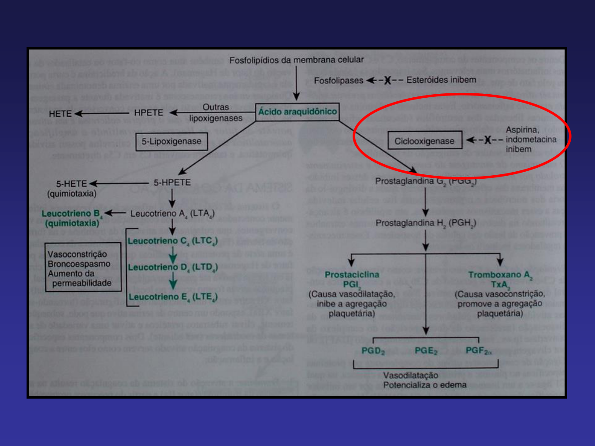
Outros danos dos AINEs: eles também reduzem o muco protetor gástrico (a prostaglandina protege o estômago). Uso prolongado leva a gastrite, queimação/pirose, dor epigástrica e até HDA (hemorragia digestiva alta).
A regra dos 5 dias e a contraindicação que cai na prova: o AINE não deve ser usado por mais de 5 dias, porque aumenta o risco renal. E é contraindicado em hipertenso e em cardiopata — exatamente porque retém sódio e água, sobe a pressão e lesa o rim, piorando as duas doenças. O professor chama isso de problema de saúde pública: existem 52 AINEs disponíveis no Brasil e eles são "vendidos como se fosse secos e molhados aí no mercado", sem controle nenhum.
Conduta no hipertenso com dor: evite o AINE. Se for indispensável, use a menor dose pelo menor tempo. O corticoide também é proibido (tem ação mineralocorticoide e retém sódio e água do mesmo jeito). Em dor grave ou crônica, prefira um opioide fraco, como a codeína — pode constipar e até baixar um pouco a pressão, mas é muito melhor do que lesar o rim.
Coxibes: a tentativa de salvar o estômago e o rim que machucou o coração
Se o problema dos AINEs era inibir a COX-1 (a do bem), a ideia óbvia foi criar drogas que inibissem só a COX-2: os coxibes (inibidores seletivos da COX-2). Exemplos: celecoxibe (nome comercial Celebra) e rofecoxibe.
A lógica funcionou em parte: por pouparem a COX-1, os coxibes protegem o estômago e o rim — não tiram a prostaglandina protetora. Mas há um preço: ao inibir só a COX-2 e deixar a produção de tromboxano desequilibrada, eles aumentam a incidência de problema cardíaco/isquemia. Por isso são vendidos só com receita. É o caso clássico de "resolveu um problema e criou outro": ganhou estômago e rim, perdeu coração.
O que é um diurético — e a única exceção que elimina só água
Definição do professor: diuréticos são substâncias que modificam o conteúdo do filtrado glomerular aumentando a excreção de sódio, ou de sódio + potássio. Note que a definição é sobre sódio, não sobre água. E o motivo é a frase-chave da seção:
"A água não vai embora sozinha. Ela é arrastada pelo sódio."
Esse é o princípio que organiza toda a farmacologia dos diuréticos: você não "tira água", você tira sódio, e a água vai junto por osmose. Mais sódio eliminado = mais água eliminada.
Existe uma única exceção que elimina só água: o manitol, o diurético osmótico. Ele não mexe no sódio — ele próprio é osmoticamente ativo e arrasta a água diretamente. E aqui um detalhe que o professor adora: o manitol é diurético por via endovenosa; por via oral ele é catártico osmótico (laxativo). A via muda completamente o efeito.
Drogas que caíram em desuso como diuréticos:
- Metilxantinas (teofilina, cafeína, aminofilina) — hoje servem como broncodilatador (na DPOC, por exemplo). A cafeína tem um efeito diurético perceptível; como psicoestimulante, varia muito de pessoa para pessoa.
- Ureia — já foi diurético, mas é altamente higroscópica (retém umidade do ar). Por isso hoje ela entra em cremes hidratantes: retém a umidade na pele. É muito usada no pé diabético, para proteger a porta de entrada (solução de continuidade da pele). Curiosidade: o cheiro de "xixi" vem da amônia, não da ureia.
Ureia higroscópica — a imagem que cola: "coloque ureia na mesa e em um minuto vira uma poça d'água". Essa propriedade de sequestrar água do ar é a mesma que a faz inútil como diurético moderno (você não quer reter água) e útil como hidratante de pele. Mesma molécula, dois destinos opostos, dependendo de onde você a coloca.
Para que servem os diuréticos: as indicações terapêuticas
O leque de indicações é amplo, e vale memorizar:
- HAS (hipertensão arterial sistêmica) — o diurético foi "o último do grupo dos anti-hipertensivos" estudado, mas é peça central do tratamento.
- Insuficiência cardíaca congestiva (ICC) — em especial para tratar o edema agudo de pulmão.
- AVE / edema cerebral — o processo isquêmico/inflamatório do SNC gera edema; trata-se com manitol, sempre por via venosa, nunca oral.
- Prevenção de insuficiência renal — manter o rim filtrando, não deixar ele parar (parar mata o glomérulo).
- Insuficiência hepática / ascite.
- Hiperaldosteronismo — o excesso de aldosterona causa hipocalemia, retenção de sódio e água, e edema.
- Diabetes insipidus — a doença da deficiência de ADH (hormônio antidiurético).
- Intoxicação por lítio e por outros fármacos/drogas — o diurético aumenta a excreção do fármaco, "lavando" o organismo.
Diurético como doping — o caso César Cielo: exatamente porque o diurético aumenta a excreção de outras substâncias, ele pode ser usado para mascarar drogas no exame antidoping — você "lava" a outra droga da urina. Por isso achar diurético na urina de um atleta olímpico já é considerado doping, mesmo que o diurético em si não seja a substância proibida. O professor lembra do nadador brasileiro César Cielo, pego no doping com furosemida usada para mascarar um broncodilatador (clembuterol, o "remédio de cavalo"); sem prescrição ou justificativa médica, isso acabou com a carreira dele. Citou também o Anderson Silva (MMA) em situação análoga.
A regra de ouro do potássio e do hidrogênio: K⁺ e H⁺ andam juntos
Este é, talvez, o mecanismo mais importante para entender os efeitos ácido-base dos diuréticos. O ponto: K⁺ e H⁺ são secretados pelos MESMOS carregadores no túbulo. A consequência é inevitável: todo medicamento que aumenta a excreção de potássio aumenta também a excreção de hidrogênio.
Siga a lógica passo a passo:
- Um diurético depletor de potássio (alça, tiazídico) joga K⁺ fora.
- Como K⁺ e H⁺ usam o mesmo transportador, joga-se H⁺ fora junto.
- Perdendo H⁺, sobra mais bicarbonato no sangue.
- Bicarbonato alto = alcalose metabólica.
Ou seja: os diuréticos que perdem potássio causam alcalose metabólica. E o inverso vale: os diuréticos poupadores de potássio retêm K⁺ e, portanto, retêm H⁺ — causando acidose metabólica.
Isso tem uso clínico cruzado: para tratar uma alcalose metabólica, usa-se um diurético poupador de potássio (como a espironolactona) — ele retém K⁺, logo retém H⁺, ajudando a baixar o pH de volta ao normal. O poupador elimina sódio e, de forma compensatória, retém potássio: o rim "vê o sódio indo embora" e tenta segurar o potássio em troca.
Mnemônica "JP e Maria P": o professor usa essa dupla (de um desenho infantil do YouTube) para fixar que K⁺ e H⁺ caminham juntos. Sempre que você ler "este diurético depleta potássio", traduza imediatamente: "então ele depleta hidrogênio → sobra bicarbonato → alcalose metabólica". E quando ler "poupa potássio", traduza: "poupa hidrogênio → acidose metabólica". Essa única regra explica metade dos efeitos adversos da seção inteira.
Classificando os diuréticos: por potência (FENa) e por local de ação
Há duas formas de classificar um diurético, e a prova cobra as duas juntas. A primeira é por potência, que o professor mede pela FENa — a fração de excreção de sódio, ou seja, a fração da carga de sódio filtrada que a classe consegue eliminar. Essa fração tem relação direta com a potência, justamente porque a água é arrastada pelo sódio: mais sódio eliminado = mais diurese. (Atenção ao nome: na enfermaria, "FENa" significa outra coisa — veja a nota de precisão logo abaixo da tabela.)
| Classe por potência | FENa | Exemplos |
|---|---|---|
| Alta eficácia / alto teto | > 15% | Furosemida, bumetanida (diuréticos de alça) |
| Moderados | 5 a 10% | Tiazídicos (hidroclorotiazida, clortalidona, clortiazida, indapamida) |
| Fracos | — | Inibidores da anidrase carbônica, osmóticos, poupadores de potássio |
A segunda classificação é por local de ação, seguindo o trajeto do néfron. São quatro locais, cada um com sua potência característica:
| # | Local de ação | Potência | Classe que age ali |
|---|---|---|---|
| 1 | Túbulo contorcido proximal | FRACO | Inibidores da anidrase carbônica + osmóticos (manitol) |
| 2 | Alça de Henle (segmento espesso ascendente) | FORTE | Furosemida (diuréticos de alça) |
| 3 | TCD inicial (túbulo contorcido distal inicial) | MODERADO | Tiazídicos |
| 4 | TCD final + ducto coletor | FRACO | Poupadores de potássio |
A mnemônica que o professor repete para a sequência (proximal → alça → TCD inicial → TCD final/coletor) é: "Fraco, forte, moderado, fraco."
Os números da tabela (alça >15%, tiazídico 5–10% etc.) estão na ordem de grandeza certa para a eficácia natriurética máxima de cada classe — a fração máxima da carga de sódio filtrada que aquela classe consegue excretar. Mas chamar isso de "FENa" é uma imprecisão de nomenclatura da aula. Na clínica, a FENa (fração de excreção de sódio) é um parâmetro do paciente usado para diferenciar IRA pré-renal (FENa <1%) de necrose tubular aguda (FENa >2%) — e seu valor é invalidado pelo uso de diuréticos (por isso, no paciente já diureticado, usa-se a FEUreia). Resumo: aqui "FENa" significa "potência/eficácia natriurética da classe"; no leito, FENa significa "marcador pré-renal vs NTA". Não confunda os dois.
O eixo central da prova: o professor antecipa o formato exato da questão — "Pode perguntar... classifique quanto à potência, que é a FENa, o local de ação, e dê um exemplo de cada." E sobre o limiar de alta eficácia: "Mais de 15%. Isso é a pergunta da prova." Decore a tabela acima como um bloco único: nome do local → potência → classe → FENa → exemplo. É o esqueleto da seção e foi repetido exaustivamente. A mnemônica "fraco, forte, moderado, fraco" é o atalho para não trocar a ordem.
Diuréticos de alça: furosemida, o canhão da nefrologia
A furosemida é o principal e mais potente diurético da clínica. Age no segmento espesso ascendente da alça de Henle (local 2, o forte), inibindo o cotransportador Na-K-2Cl — o transportador que move junto sódio, potássio e dois cloretos. Ao bloqueá-lo, a furosemida inibe parte do mecanismo de contracorrente que concentra a urina, e o resultado é uma diurese vigorosa (FENa > 15%). Existe nas vias oral e intravenosa. A bumetanida é da mesma classe, mas na prática quem se usa é a furosemida.
No edema agudo de pulmão, o professor descreve um duplo mecanismo: (1) a furosemida retira o líquido que extravasou (diurese) e (2) ela "impede o retorno" do líquido ao pulmão. A lógica clínica do duplo benefício está correta, mas o mecanismo do segundo passo merece a correção da nota abaixo.
No EAP cardiogênico, o benefício precoce da furosemida (em minutos, antes da diurese) é a venodilatação — reduz a pré-carga e a pressão capilar pulmonar. O efeito diurético subsequente reduz a volemia/congestão. Não é correto dizer que a furosemida "aumenta a osmolaridade do plasma" para impedir o retorno do líquido: esse é o mecanismo do manitol (osmótico). A furosemida, ao causar diurese hipotônica, pode até não elevar significativamente a osmolaridade plasmática. Guarde o duplo benefício (venodilatação precoce + diurese), mas não atribua à furosemida um mecanismo osmótico.
Outras indicações da furosemida:
- Insuficiência cardíaca.
- Emergência hipertensiva (HAS com lesão de órgão-alvo em curso).
- Edema da síndrome nefrótica.
- Intoxicação/overdose por drogas associada a hiper-hidratação — aumenta o débito urinário e a excreção de drogas hidrossolúveis.
- Hiponatremia tratada com salina hipertônica (o "salgadão" = ampola de cloreto de sódio hipertônico + volume, para o rim reajustar o sódio).
- IRA oligúrica — uso controverso: os diuréticos de alça não melhoram desfecho na necrose tubular aguda (não previnem nem revertem) e podem piorar a função renal por depleção de volume/hipoperfusão se usados em paciente hipovolêmico.
Drogas obsoletas dessa linha, citadas como tóxicas e fora de uso: o mersalil (organomercurial, neurotóxico) e o ácido etacrínico (em desuso por toxicidade).
Efeitos adversos da furosemida — e aqui está metade do valor de prova da droga:
- Hipocalemia (potássio baixo) — o efeito mais temido, porque interage com os digitálicos (você revê isso em §04).
- Alcalose metabólica (lembre da regra K⁺/H⁺).
- Depleção de cálcio e magnésio — pode causar muita câimbra; se afetar o coração, é grave.
- Hipovolemia → hipotensão; o uso excessivo/em paciente depletado pode piorar a função renal por hipoperfusão (não por nefrotoxicidade direta).
A sequência clínica da hipocalemia ajuda a reconhecê-la: primeiro afeta o músculo esquelético (fraqueza, câimbra), e só depois o cardíaco. A manifestação cardíaca, quando aparece, costuma ser grave — arritmias.
Interações da furosemida (todas com lógica, não decoreba):
| Interage com | Consequência | Por quê |
|---|---|---|
| Digitálicos | Aumenta o risco de intoxicação digitálica (manifesta-se por arritmias — taquiarritmias ventriculares, bloqueios —, distúrbios GI e visuais; não como "mais força/menos frequência", que é o efeito terapêutico) | A furosemida depleta potássio; com K⁺ baixo, a digoxina liga-se mais à Na⁺/K⁺-ATPase (competem pelo mesmo sítio) → mais toxicidade |
| Aminoglicosídeos (amicacina, gentamicina, canamicina, tobramicina) | Aumenta a ototoxicidade — acúmulo na orelha interna, risco de surdez | Somam toxicidade sobre a cóclea |
| Cefalosporinas | Aumenta a nefrotoxicidade | Ambas são eliminadas por secreção tubular — sobrecarregam o mesmo mecanismo |
"Usar furosemida intramuscular é CRIME." Esta é a pegadinha de via de administração mais forte da aula. A furosemida é extremamente miotóxica — destrói o músculo se for injetada nele. As vias corretas são intravenosa ou oral, NUNCA intramuscular. O professor martela o princípio: "O medicamento certo, na via certa. Não pode mudar a via de administração. Não existe isso." Se uma questão te oferecer "furosemida IM para crise hipertensiva", é armadilha — está errado.
Diuréticos osmóticos: o manitol e suas indicações de emergência
O manitol é uma substância farmacologicamente inerte: entra e sai do organismo igual, sem ser metabolizado. O truque é que, ao sair, ele arrasta a água junto (é osmoticamente ativo). Por via endovenosa é diurético; por via oral é catártico osmótico (laxativo). Age no túbulo proximal (local 1, fraco).
Profilaxia de IRA no grande queimado — siga a fisiopatologia: a queimadura extensa gera inflamação e vasodilatação, o líquido sai do plasma para o tecido (as bolhas "roubam" a água do plasma), o paciente fica hipovolêmico → hipotenso → cai a pressão de filtração → risco de IRA. A conduta é repor volume rápido (no jargão do atendimento ao trauma, ATLS/BLS, "espremer a bolsa de soro") para manter o rim filtrando. Não adianta tentar poupar a água das bolhas — aquele tecido vai ser debridado de qualquer jeito.
Edema cerebral / TCE — o manitol EV reduz a pressão intracraniana e a pressão do líquor. Aqui um dado fino: o professor diz que a pressão liquórica é supra-atmosférica, "em torno de 1 mmHg". É por isso que, numa punção lombar, o líquor goteja, não esguicha.
Duas ressalvas sobre valores citados: (1) a pressão de abertura liquórica normal no adulto, na punção lombar em decúbito, é de ~7–18 cmH₂O (≈ 5–13 mmHg) — o "1 mmHg" do professor é grosseiramente baixo, embora a ideia de pressão baixa ("goteja, não esguicha") esteja certa. (2) O manitol oral tem efeito catártico osmótico, mas não é o preparo padrão de colonoscopia (usam-se polietilenoglicol/PEG, picossulfato + citrato de magnésio, ou fosfato de sódio em situações específicas); o manitol oral, aliás, é evitado nesse preparo porque a fermentação bacteriana gera gás (hidrogênio/metano) com risco de explosão na eletrocauterização.
Efeitos indesejados: hipernatremia (o organismo retém sódio para tentar segurar a água), náuseas e vômitos. Outros usos gerais citados: aumento de osmolaridade, edema agudo de pulmão, ICC, cirrose com ascite e insuficiência renal.
A contraindicação que salva vida — manitol no TCE: "Só pode reduzir a pressão no traumatismo craniocefálico se tiver certeza que não tem um foco hemorrágico." O raciocínio: o manitol baixa a pressão intracraniana, e se houver uma hemorragia sendo "tamponada" por essa pressão, reduzi-la pode precipitar ou agravar a hemorragia (subdural/subaracnoide). A hemorragia subaracnoide tem mortalidade altíssima. Regra prática: manitol no TCE só com certeza ABSOLUTA de ausência de foco hemorrágico — na dúvida, imagem antes. (Curiosidade cirúrgica que ele conta: na craniotomia por hemorragia, guarda-se a calota craniana no peritônio do próprio paciente, porque o peritônio nutre o osso vivo, até o edema reduzir.)
Diuréticos tiazídicos: a hidroclorotiazida da hipertensão
Os tiazídicos agem no túbulo contorcido distal inicial (local 3, o moderado), inibindo um cotransportador ali. A FENa é de 5 a 10% (moderados). Eles existem só por via oral (são absorvidos no TGI) e, como vimos, são eliminados por secreção tubular. O representante mais usado é a hidroclorotiazida, peça central no tratamento da hipertensão. Outros: clortalidona, clortiazida, indapamida, ciclopentiazida.
Os tiazídicos depletam potássio, mas MENOS que os de alça — coerente com a FENa menor (5-10% contra >15%). São depletores, sim, só que de menor intensidade.
E aqui vem a diferença conceitual que mais cai em prova — o que os tiazídicos fazem com cálcio e ácido úrico é o OPOSTO do que a furosemida faz:
| Íon/substância | Furosemida (alça) | Tiazídico (TCD inicial) |
|---|---|---|
| Cálcio | Elimina (depleta) | RETÉM (reabsorve) |
| Ácido úrico | — | RETÉM → risco de gota |
| Magnésio | Elimina | Elimina (como a furosemida) |
As consequências: reter cálcio piora a vida do formador de cálculo renal (o cálcio se acumula no rim/pelve e vira cálculo); reter ácido úrico desencadeia gota. Já a furosemida, que elimina cálcio, é a escolha quando você quer baixar o cálcio.
Usos dos tiazídicos: hipertensão (alvo principal); insuficiência cardíaca moderada (início da IC); e edema grave em associação a um diurético de alça — somam-se as FENa (~20-25%), com a ressalva de que "a hipocalemia ferra bastante" nessa combinação.
Efeitos adversos dos tiazídicos: hipocalemia, alcalose metabólica (menos que os de alça), hiperuricemia (gota), HIPERGLICEMIA e impotência sexual.
O mecanismo da hiperglicemia é uma ponte direta para §08 (Hipoglicemiantes e Insulinoterapia): a secreção de insulina pela célula beta do pâncreas depende da despolarização ligada ao canal de K⁺-ATP. A hipocalemia induzida pelo tiazídico tende a reduzir a secreção de insulina, e por isso a glicose sobe — o canal de K⁺-ATP da célula beta é o mesmo alvo que reaparece em §08 nas sulfonilureias (com a ressalva, descrita na nota abaixo, de que lá o efeito é no sentido oposto).
A hiperglicemia/intolerância à glicose dos tiazídicos é multifatorial: além da hipocalemia que reduz a secreção de insulina (a secreção depende da despolarização ligada ao canal K⁺-ATP), há aumento da resistência periférica à insulina — não é só "potássio baixo → menos insulina". Parte do efeito é atenuada ao corrigir a hipocalemia. Em geral é dose-dependente e clinicamente modesto nas doses baixas atuais (HCTZ 12,5–25 mg). Cuidado com o paralelo com as sulfonilureias: a secreção de insulina é desencadeada pelo fechamento do canal K⁺-ATP (as sulfonilureias fecham o canal para aumentar a insulina); a hipocalemia do tiazídico age em sentido oposto, reduzindo a secreção. É o mesmo canal, mas não o mesmo efeito.
Interações: reduzem a ação dos hipoglicemiantes (no diabético, vigiar o controle glicêmico e ajustar a dose — eventualmente migrar para metformina ou para insulina subcutânea); com digitálicos (pela hipocalemia); e com a anfotericina B (o antifúngico sistêmico potente, "Fungizon", usado em sepse e meningite fúngica do imunossuprimido) — os efeitos se somam.
Diuréticos poupadores de potássio: espironolactona e amilorida
Os poupadores de potássio são a imagem espelhada dos depletores: eles aumentam a excreção somente do sódio e, ao perder sódio, o organismo passa a reter potássio de forma compensatória. Agem no TCD final e no ducto coletor (local 4, fraco) e só existem por via oral. São três os representantes — espironolactona, triantereno e amilorida —, mas o triantereno não é mais fabricado; na prática usa-se amilorida.
Os dois mecanismos diferentes valem ouro na prova:
- Espironolactona (nome comercial Aldactone) é o antagonista/bloqueador do receptor da aldosterona. Ao bloquear a aldosterona, ela aumenta a excreção de sódio e água e retém potássio. Age no TCD/coletor.
- Amilorida, em vez de bloquear o receptor da aldosterona, bloqueia diretamente os canais de sódio por onde a aldosterona faria a reabsorção. Mecanismo distinto, mesmo efeito final (poupar potássio), eficácia limitada — é fraco.
Usos da espironolactona:
- Insuficiência cardíaca — entra no "pacote" de medicamentos da IC, mas NÃO pela ação diurética (é fraca), e sim por poupar potássio, prevenindo a hipocalemia que os diuréticos potentes causam (e a hipocalemia dá arritmia).
- Acne.
- Hiperaldosteronismo — é o antagonista lógico, já que bloqueia a aldosterona.
A amilorida é comercializada principalmente como Moduretic = hidroclorotiazida (moderado, depleta K⁺) + amilorida (fraco, poupa K⁺). Atenção ao raciocínio: a amilorida não reverte a hipocalemia da HCTZ, ela apenas a minimiza — a HCTZ excreta mais potássio do que a amilorida consegue segurar. O Moduretic é muito usado como anti-hipertensivo porque associa dois diuréticos em locais diferentes do néfron, somando potências: um moderado + um fraco resultam em "um fortinho", um moderadão.
Efeitos indesejados dos poupadores (valem para espironolactona e amilorida): HIPERCALEMIA e ACIDOSE METABÓLICA — retêm potássio e, pela regra K⁺/H⁺, retêm hidrogênio. E essa acidose pode ser aproveitada terapeuticamente para compensar uma alcalose metabólica.
O porquê da espironolactona na IC — e a pegadinha do anti-hipertensivo: "Como anti-hipertensivo a espironolactona não funciona, é ridículo. Porque ele é muito fraco." Ela é fraca demais para causar hipotensão sozinha. No raciocínio da aula, o valor dela na insuficiência cardíaca não está em tirar água — está em poupar potássio e, com isso, prevenir a hipocalemia (e a arritmia) provocada pelos diuréticos potentes que o paciente de IC também usa. Se a prova deste professor perguntar "por que a espironolactona entra no esquema da IC?", a resposta dele NÃO é "pelo efeito diurético" — é "por poupar potássio".
A justificativa da aula ("entra na IC só para poupar potássio") está incompleta pela evidência atual. Os antagonistas do receptor mineralocorticoide (espironolactona, eplerenona) reduzem mortalidade e hospitalização na IC com fração de ejeção reduzida principalmente por bloquear o efeito deletério da aldosterona no remodelamento e na fibrose cardíaca — e são um dos quatro pilares do tratamento da ICFEr nas diretrizes (SBC, ESC, ACC/AHA). Ou seja: poupar potássio é um efeito colateral útil, mas o benefício de mortalidade vem do bloqueio da aldosterona (anti-remodelamento/antifibrótico), não de poupar potássio. Para a prova deste professor, mantenha a resposta "poupar K⁺"; para a prática, guarde a razão real.
Inibidores da anidrase carbônica: a acetazolamida do glaucoma
Os inibidores da anidrase carbônica agem no túbulo contorcido proximal (local 1, fraco). Ao bloquear a anidrase carbônica, eles impedem a recuperação do bicarbonato, de modo que o rim passa a excretar bicarbonato — que arrasta junto, preferencialmente, sódio e água, saindo como bicarbonato de sódio. São fracos e, na prática, praticamente não são mais usados como diuréticos. Os representantes são a acetazolamida (nome comercial Diamox) e a diclorfenamida.
O uso que ainda importa é o glaucoma: a acetazolamida reduz a formação do humor aquoso dentro do olho, baixando a pressão intraocular. Por isso quem prescreve Diamox, na prática, é o oftalmologista. Há também um uso em tipos incomuns de epilepsia, mencionado só de passagem (o professor não aprofunda).
Manipulando o pH da urina para excretar fármacos mais rápido
Este é um truque farmacológico elegante, usado em intoxicações. O pH urinário normal é levemente ácido (5 a 6,5). O princípio: para eliminar mais rápido um fármaco, você deixa a urina com pH CONTRÁRIO ao caráter do fármaco. A razão é a ionização — uma molécula ionizada fica mais solúvel em água, é menos reabsorvida pelo túbulo e, portanto, mais excretada.
| Tipo de fármaco a eliminar | O que fazer com a urina | Lógica |
|---|---|---|
| Droga ácida | Alcalinizar a urina (↑ pH) | Ácido em meio alcalino fica ionizado → mais solúvel → mais excretado |
| Droga alcalina/básica | Acidificar a urina (↓ pH) | Base em meio ácido fica ionizada → mais solúvel → mais excretada (citado o cloreto de amônio para acidificar) |
Aplicação clínica direta: acelerar a eliminação de fármacos em intoxicações. É a mesma lógica do diurético "lavando" a droga, só que agora você ajusta também o pH para deixar a droga ionizada e fácil de excretar.
- → A água é arrastada pelo sódio: diurético tira sódio (ou Na⁺+K⁺), e a água vai junto. Única exceção que tira só água = manitol (osmótico, EV; oral é laxativo).
- → 4 locais × potência ("fraco, forte, moderado, fraco"): proximal (anidrase carbônica/osmótico) = fraco; alça de Henle (furosemida) = forte, FENa >15%; TCD inicial (tiazídico) = moderado, FENa 5-10%; TCD final/coletor (poupadores) = fraco.
- → Furosemida: mais potente, IV ou oral (IM é CRIME — miotóxica); bloqueia o Na-K-2Cl na alça; causa hipocalemia (potencializa digitálicos), alcalose, perda de Ca/Mg; elimina cálcio.
- → Tiazídicos (hidroclorotiazida): hipertensão; ao contrário da alça, RETÊM cálcio e ácido úrico (cálculo renal, gota) e causam hiperglicemia (depletam K⁺ → menos secreção de insulina, ponte para §08).
- → Poupadores: espironolactona (bloqueia receptor de aldosterona, "Aldactone") e amilorida (bloqueia canal de sódio; Moduretic = HCTZ + amilorida). Causam hipercalemia e acidose metabólica. Na IC, a espironolactona entra por poupar K⁺, não pela diurese.
- → Regra K⁺/H⁺: andam juntos pelo mesmo carregador. Depletores de K⁺ → alcalose metabólica; poupadores de K⁺ → acidose metabólica (que serve para tratar alcalose).
- → Creatinina: o professor cobra "secretada, não filtrada", mas na fisiologia real é predominantemente FILTRADA (com secreção tubular adicional pequena). Na IR sobe no sangue (porque a TFG cai) e cai na urina; não confundir com creatina. Clearance normal ~100 mL/min; ~28 mL/min (perda de 70%) indica diálise no critério da aula. Pressão hidrostática glomerular ~55–60 mmHg (valores de 40/55 mmHg são números didáticos do professor).
- → AINEs inibem COX-1 → tiram a prostaglandina que dilata a arteríola renal → retêm sódio/água → ↑pressão e lesão renal. Não usar >5 dias; contraindicados em hipertenso/cardiopata. Manitol no TCE só sem foco hemorrágico.
Digitálicos, Antiarrítmicos e Antianginosos
O fio condutor desta seção: o coração que precisa de oxigênio e de ritmo
Esta seção amarra três famílias de fármacos que parecem distintas mas resolvem o mesmo problema central: o equilíbrio entre o que o coração precisa de oxigênio e o que ele consegue receber, e o equilíbrio entre força e ritmo. Os digitálicos (glicosídeos cardíacos) aumentam a força de uma bomba que falha; os antiarrítmicos reordenam um coração que perdeu o compasso elétrico; e os antianginosos socorrem um miocárdio com fome de oxigênio. Três alvos diferentes, mas um único órgão e uma mesma lógica de oferta e demanda.
Para entender qualquer uma das três classes, você precisa primeiro de duas peças de fisiologia que vão reaparecer o tempo todo: o cálcio como efetor molecular da contração e a eletrofisiologia do potencial de ação cardíaco. Vamos construir as duas com calma — o resto decorre delas.
Por que a isquemia miocárdica mata: oferta x demanda de oxigênio
Imagine uma pessoa num primeiro encontro, ou em qualquer situação de estresse intenso. O sistema nervoso simpático dispara: o coração acelera, contrai com mais força, a demanda de oxigênio do miocárdio sobe abruptamente. Em um coração com coronárias (as artérias que irrigam o próprio músculo cardíaco) já comprometidas, o suprimento não acompanha esse pico de demanda. Resultado: isquemia miocárdica — falta de oxigênio no músculo do coração — que pode evoluir para infarto e morte súbita, mesmo numa pessoa que parecia perfeitamente saudável.
A manifestação clássica dessa isquemia é a angina pectoris (pré-cordialgia): uma dor torácica em aperto/compressão que irradia tipicamente para o braço esquerdo, o ombro e o pescoço, desencadeada por esforço ou excitação. É a forma como o miocárdio "grita" que está sem oxigênio.
Um ponto que tem implicação clínica direta: na mulher, a apresentação pode ser atípica — uma dor parecida com a do estômago/epigástrio, e não o aperto clássico irradiado. Por isso existem protocolos de dor torácica: nem sempre o quadro vem com o "livro-texto" do aperto retroesternal. Subestimar uma dor epigástrica na mulher pode custar um diagnóstico de infarto.
A grande lição inicial: o coração que infarta sob estresse agudo não morre porque está doente demais, mas porque a demanda disparou e a oferta não acompanhou. Guarde essa balança — oferta x demanda de O₂ — porque ela é o "denominador comum" de TODOS os antianginosos. Cada fármaco vai mexer em um lado da balança: ou aumenta a oferta (dilatando coronária), ou reduz a demanda (baixando frequência e força). Quem entende a balança não precisa decorar mecanismo nenhum.
A engrenagem molecular: cálcio, AMPc e os três "tropismos"
Quando o simpático estimula o coração pelo receptor beta-1 adrenérgico, dentro do miócito acontece o seguinte: aumenta a formação de AMPc (AMP cíclico, o "segundo mensageiro") e aumenta o influxo de cálcio para dentro da célula. O cálcio é o efetor molecular da resposta cardio-estimulante — é ele quem, na ponta da linha, faz o coração responder.
O cálcio aumenta os três "tropismos" do coração, que você vai usar o tempo todo:
- Inotropismo — força de contração;
- Cronotropismo — frequência (velocidade dos batimentos);
- Dromotropismo — velocidade de condução do impulso elétrico.
Mais cálcio dentro do miócito = mais força, mais frequência, mais condução. Menos cálcio = o contrário. Quase tudo nesta seção é alguma forma de aumentar ou diminuir o cálcio intracelular.
O parassimpático (nervo vago) faz exatamente o oposto, atuando nos receptores muscarínicos M2 do coração (relembre que existem M1, M2, M3, M4, M5). O efeito vagal é: cronotrópico negativo (reduz a frequência), inotrópico negativo apenas no átrio (não mexe na força do ventrículo) e dromotrópico negativo (lentifica a condução no nó AV). Molecularmente, o vago reduz a formação de AMPc, diminui a entrada de cálcio E abre canais de potássio.
Por que abrir canal de K⁺ "desliga" o coração? Pense no potássio "como um cachorro que sai da igreja": ele sai porque a porta está aberta (o canal) e porque há muito mais potássio dentro da célula do que fora — ou seja, ele desce o gradiente. Ao sair, o K⁺ leva carga positiva para fora e deixa o interior mais negativo: a célula hiperpolariza. Hiperpolarizada, ela fica mais difícil de despolarizar de novo. Então o vago freia o coração de dois jeitos somados: tira cálcio e hiperpolariza. Simpático e parassimpático ficam, assim, num balanço autonômico permanente sobre o coração.
Betabloqueadores e bloqueadores de cálcio: protegendo o miocárdio "economizando oxigênio"
No coronariopata — mesmo que ele seja normotenso — a gente costuma usar betabloqueador (antagonista do receptor beta-1) para conter o simpático. Ao bloquear o beta-1, reduzimos a atividade intrínseca do coração. A lógica é puramente aritmética de consumo de oxigênio: se o paciente bate a 70-80 bpm e o betabloqueador o leva para 60-65 bpm, economizamos uns 10-15 batimentos por minuto. Cada batimento poupado é oxigênio poupado do próprio músculo cardíaco (não o O₂ da respiração — o O₂ que perfunde o miocárdio pelas coronárias).
Os bloqueadores de canal de cálcio seguem a mesma ideia, atacando o cálcio diretamente. Dois deles são especialmente úteis em cardiologia porque agem preferencialmente no canal de cálcio do músculo cardíaco: o verapamil e o diltiazem. Eles inibem parcialmente a entrada de cálcio no miócito, reduzindo os três tropismos — um efeito protetor parecido com o do betabloqueador.
Não confunda os bloqueadores de cálcio entre si — essa distinção de seletividade cai na prova: verapamil e diltiazem agem mais no canal de cálcio CARDÍACO (por isso mexem em frequência e condução); já a amlodipina (um di-hidropiridínico) bloqueia seletivamente o canal de cálcio VASCULAR, da musculatura lisa dos vasos. Mesma "família" pelo nome, alvos diferentes. Esse detalhe explica por que verapamil/diltiazem servem como antiarrítmicos e a amlodipina não.
Digitálicos (glicosídeos cardíacos): a dedaleira, da história ao mecanismo
Os digitálicos são derivados da planta dedaleira (um arbusto), de nome científico Digitalis sp. Existem duas espécies: Digitalis lanata e Digitalis purpurea. A palavra glicosídeo indica que são moléculas com um açúcar amargo na estrutura. Há dois representantes clássicos: a digoxina e a digitoxina. A digitoxina tem meia-vida de cerca de 7 dias — longuíssima — e por isso está saindo de uso, ficando praticamente restrita à pesquisa. Na prática clínica, hoje, "digitálico" significa essencialmente digoxina.
É um fármaco antiquíssimo, conhecido desde o Egito Antigo e Roma. E aqui mora uma das melhores chaves da aula: ele era usado como veneno para matar desafetos. Os intoxicados ficavam bradicárdicos (coração lento) mas com uma pulsação muito forte — uma "batedeira". Guarde essa imagem do veneno como gancho didático: ela ajuda a memorizar o eixo bradicardizante/inotrópico do quadro. Veja, porém, a nota mais adiante: a intoxicação digitálica real é mais ampla do que "bradicardia com pulso forte".
O perfil farmacológico que o professor repetiu sem parar
O digitálico é INOTRÓPICO POSITIVO (aumenta a força de contração) e CRONOTRÓPICO NEGATIVO (reduz a frequência). Aumenta força, reduz frequência. Por isso é um tônico cardíaco, usado na insuficiência cardíaca (IC) — embora cada vez menos.
Há um ponto conceitual finíssimo: o efeito inotrópico positivo INDEPENDE do simpático. O digitálico não é simpatomimético, não age no receptor beta-1. A força extra vem de um efeito mecânico, dentro do próprio miócito, via mais cálcio intracelular disponível para o aparato contrátil (o professor referiu-se a isso como mecanismo "de Frank-Starling"). Já o efeito cronotrópico negativo SIM depende do sistema nervoso autônomo: ele lentifica o coração predominantemente por aumento da atividade vagal (parassimpática) sobre o nó AV — embora a digoxina também tenha um componente de ação direta sobre a condução AV.
Uma ressalva sobre o que foi dito em aula: o efeito inotrópico da digoxina é, de fato, independente do receptor beta/AMPc, mas o termo correto não é "mecanismo de Frank-Starling". O inotropismo da digoxina decorre do aumento do cálcio intracelular (via inibição da Na⁺/K⁺-ATPase), um aumento de contratilidade independente do comprimento da fibra. O mecanismo de Frank-Starling é coisa diferente: é o aumento de força gerado pelo maior estiramento/pré-carga (alongamento do sarcômero). São dois fenômenos distintos.
O mecanismo molecular, passo a passo
O digitálico inibe a Na⁺/K⁺-ATPase (a "bomba de sódio e potássio") do músculo cardíaco. Acoplado a essa bomba existe o trocador Na⁺/Ca²⁺, que normalmente joga sódio para dentro em troca de empurrar cálcio para fora. Acompanhe a cadeia:
- Causa: a bomba Na⁺/K⁺ é inibida → o sódio entra (transporte passivo) mas não é mais expulso → acumula sódio dentro do miócito.
- Consequência: com sódio alto dentro, o trocador Na⁺/Ca²⁺ perde a força de jogar cálcio para fora → o cálcio também acumula dentro da célula.
- O que importa é o cálcio: o sódio "não tem muito a ver" — é só o gatilho. O que faz o coração contrair mais forte é o cálcio citoplasmático aumentado, que favorece a ligação cálcio–actina/miosina e a contração do sarcômero.
- Manifestação: contrações mais fortes → maior débito → alívio dos sintomas da IC.
Detalhe importante de fisiologia: a ligação do cálcio às proteínas contráteis não é "fácil" — precisa de amplificação. Entra um pouco de cálcio, esse cálcio liga no receptor de rianodina (no retículo sarcoplasmático) e libera mais cálcio ("cálcio induz liberação de cálcio"), e só então a contração é favorecida. Por isso é preciso bastante cálcio acumulado para o efeito acontecer.
Por fim, a seletividade: o digitálico age no cardiomiócito (músculo cardíaco), e não no músculo esquelético ou liso em geral — por isso "tônico cardíaco" e não um estimulante de todos os músculos do corpo.
Onde os digitálicos se encaixam: insuficiência cardíaca
Na insuficiência cardíaca, o coração não consegue ejetar o volume que recebe. Os digitálicos são usados para aliviar o sintoma — dão mais força a uma bomba fraca — mas não revertem a doença crônica de base. A solução definitiva para o coração terminal é o transplante cardíaco; quando o paciente está fora dos critérios de elegibilidade para transplante, o tratamento passa a ser sintomático, voltado para qualidade de vida. O digitálico é uma das ferramentas desse cuidado paliativo da bomba.
O foco da aula aqui é o mecanismo, mas vale situar a digoxina na prática atual. Pelas diretrizes vigentes (SBC, ESC, ACC/AHA), a digoxina melhora sintomas e reduz hospitalizações, mas NÃO reduz a mortalidade na insuficiência cardíaca — por isso é hoje uma terapia adjuvante de última linha, reservada à IC com fração de ejeção reduzida que permanece sintomática apesar do tratamento de base otimizado. A base moderna do tratamento são os "quatro pilares": betabloqueador, IECA/BRA ou ARNI (sacubitril-valsartana), antagonista mineralocorticoide (espironolactona) e iSGLT2 (dapagliflozina/empagliflozina). A digoxina também é usada para controle de frequência na fibrilação atrial, sobretudo em pacientes com IC associada.
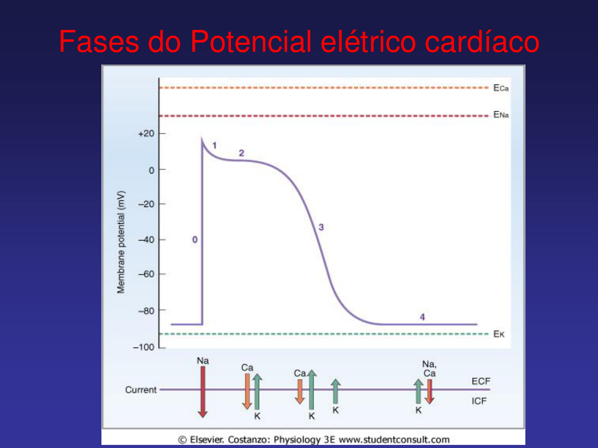
Intoxicação digitálica: a interação "muito muito muito importante" com diuréticos
Aqui está, segundo o professor, uma das interações medicamentosas mais importantes de toda a cardiologia. Drogas que reduzem o potássio plasmático — os diuréticos — POTENCIALIZAM o digitálico. "Potencializar" aqui significa exagerar o efeito: aumentar ainda mais a força e reduzir ainda mais a frequência → bradicardia grave, que pode matar (o efeito "veneno" volta: parada cardíaca).
Existem, portanto, duas formas de intoxicação digitálica:
- Dose excessiva — tomar muito digitálico (a "dose de veneno");
- Hipocalemia — reduzir o potássio plasmático, ainda que a dose do digitálico esteja correta.
POR QUE o potássio? (o ponto-chave, repetido várias vezes)
A digoxina compete com o potássio pelo mesmo sítio de ligação na bomba Na⁺/K⁺-ATPase — o sítio do potássio. Se o potássio plasmático cai (hipocalemia), sobra "vaga" nesse sítio, e a digoxina tem mais chance de se ligar. Mais digoxina ligada = bomba mais inibida = efeito potencializado. É uma competição direta: menos potássio, mais digoxina ligada, mais intoxicação.
Por que digoxina + diurético é uma associação inevitável na IC avançada
Se a hipocalemia potencializa o digitálico, por que então usar diurético junto? Porque na IC estágio 3 e 4 não há escolha. Nesses estágios surge o edema pulmonar cardiogênico: o coração não ejeta todo o volume, o sangue se acumula ("congestiona") na circulação pulmonar, a pressão hidrostática nos capilares pulmonares sobe e o líquido extravasa para o interstício e o espaço alveolar/pleural — um edema pulmonar de origem cardíaca (cardiogênica).
Para tirar essa água dos pulmões, precisamos do diurético — e o mais potente, com alto poder de depletar potássio, é a furosemida. Ou seja: na IC 3 e 4 a associação digoxina + diurético é obrigatória e inevitável. Não dá para fugir dela. O preço é exatamente o risco de hipocalemia que potencializa o digitálico — daí a necessidade absoluta de vigiar o potássio.
O quadro clínico do paciente intoxicado
O paciente com IC 3/4 e intoxicação digitálica que o professor descreveu chega ao pronto-socorro com um quadro bem reconhecível: bradicárdico/bradiarrítmico, queixando-se de um coração "que vai sair pela boca", com pulso muito forte e firme (a "batedeira" do veneno antigo), respiração rápida e curta (não consegue expandir os pulmões, está congestionado), tosse (reflexos respiratórios de origem cardíaca) e um raio-X com congestão/edema pulmonar.
O quadro descrito acima é o gancho da aula, mas a intoxicação digitálica real é mais ampla do que "bradicardia com pulso forte". O achado mais característico é a combinação de aumento do automatismo ectópico + bloqueio da condução AV, gerando arritmias variadas: extrassístoles ventriculares (as mais comuns), bigeminismo ventricular, taquicardia atrial com bloqueio AV (quase patognomônica), taquicardia juncional, bradiarritmias/bloqueios AV e, em casos graves, taquicardia ventricular bidirecional/FV. Há ainda sintomas extracardíacos: náusea, vômito, anorexia, distúrbios visuais (xantopsia — visão amarelada) e confusão. Na toxicidade grave (arritmia instável ou hipercalemia significativa), o tratamento padrão-ouro são os fragmentos Fab anti-digoxina (imunoglobulina antidigoxina). Atenção: repõe-se potássio apenas se houver hipocalemia; na intoxicação aguda grave costuma ocorrer hipercalemia (marcador de mau prognóstico) e, nesse caso, NÃO se repõe potássio.
Conduta na urgência — e a pegadinha do potássio: diante desse paciente, dose o potássio. Se estiver baixo, reponha — porém MUITO LENTAMENTE. À medida que o potássio sobe, ele compete e desloca a digoxina do sítio na bomba: a bradicardia melhora e a força excessiva diminui. Repare na elegância do raciocínio: foi a falta de potássio que causou a intoxicação, e é a reposição de potássio que a reverte — exatamente pela mesma competição pelo sítio de ligação. Mas atenção ao outro extremo: "o excesso de potássio também mata" — repor rápido ou em quem tem insuficiência renal pode gerar HIPERcalemia e parada cardíaca.
Mantendo o potássio fora da crise: dieta e reposição
No dia a dia, fora da crise, o paciente em digoxina não pode, de forma alguma, ficar hipocalêmico. Para evitar isso:
- Dieta rica em potássio — banana, laranja, couve — desde que o rim seja bom (boa taxa de filtração glomerular). Se o rim não elimina bem, o excesso de potássio se acumula e também causa parada cardíaca.
- Reposição farmacológica quando a dieta não basta: cloreto de potássio (o professor chamou pelo apelido "Slow-K"), citando em aula a dose de "5 mg 1× ao dia".
O valor "5 mg 1× ao dia" dito em aula está incorreto e não deve ser usado na prática. O cloreto de potássio é dosado em mEq, não em poucos miligramas: o comprimido de Slow-K® contém cerca de 600 mg de KCl = 8 mEq de K⁺. A reposição oral de manutenção habitual é de 20–40 mEq/dia, ajustada ao potássio sérico e à função renal. Uma "dose de 5 mg" seria clinicamente nula — não repõe potássio nenhum — e, num paciente digitalizado, manteria a hipocalemia e o risco de intoxicação. Em hipocalemia grave/sintomática, a reposição é endovenosa, em mEq/hora e sob monitorização (tipicamente ≤10–20 mEq/h em acesso central, com ECG), nunca em "mg".
O recado é duplo e simétrico: o paciente em digoxina não pode ter nem hipo nem hiper calemia. A hipocalemia potencializa o digitálico (intoxicação); a hipercalemia, sobretudo se houver insuficiência renal associada, leva à parada cardíaca por outra via. O potássio é o eixo de toda a segurança do tratamento.
Eletrofisiologia cardíaca: o circuito elétrico que os antiarrítmicos modulam
Para entender os antiarrítmicos, precisamos do "mapa elétrico" do coração. A atividade elétrica é gerada pelo nó sinusal (sinoatrial) — quando o coração segue esse marca-passo, dizemos que está em ritmo sinusal. O impulso nasce no nó sinusal, percorre os átrios (gerando a sístole atrial), e o sangue desce para os ventrículos pelas válvulas.
Ao chegar no nó atrioventricular (nó AV), o impulso sofre um retardo temporal de propósito: a velocidade de condução cai de cerca de 1 m/s nos átrios para ~0,1 m/s no nó AV, gerando aproximadamente um décimo de segundo de atraso. Não é uma parada — é uma desaceleração proposital.
Por que esse retardo? Para impedir que a sístole atrial e a ventricular aconteçam ao mesmo tempo. O coração é uma bomba de dois tempos: primeiro a sístole atrial (com o ventrículo em diástole, relaxado, enchendo); depois a sístole ventricular (com o átrio em diástole). O atraso no nó AV é o que dá tempo para o ventrículo encher antes de ejetar.
Depois do nó AV, o impulso entra no sistema His-Purkinje (feixe de His e fibras de Purkinje) e a condução acelera muito — para cerca de 2–4 m/s (o professor citou o teto, ~4 m/s) — porque é um sistema de condução rápida, feito para distribuir o estímulo por toda a parede ventricular, que é espessa, quase ao mesmo tempo. (As velocidades de condução são valores aproximados, que variam conforme a fonte.)
Fluxo só existe com gradiente: a fibrilação "mastiga o sangue"
Uma ideia física que o professor faz questão de martelar: fluxo só existe com gradiente de pressão — a energia (e o sangue) vai sempre do nível maior para o menor. Por isso o sangue que chega ao coração (átrio direito/esquerdo) está com pressão próxima de zero: ela foi dissipada ao longo de todo o circuito. Quanto maior a diferença entre a entrada (alta pressão arterial) e a saída (átrio com pressão zero), maior a perfusão.
Na fibrilação, esse dois-tempos coordenado se perde: átrios e ventrículos se contraem ao mesmo tempo, de forma caótica, sem gradiente e sem fluxo efetivo. Nas palavras do professor, o coração fibrilando "está literalmente mascando o sangue ali dentro" — agita, mas não bombeia, porque não há diferença de potencial de pressão (DDP) para mover o líquido. Essa imagem explica por que a fibrilação ventricular é incompatível com a vida: muito movimento elétrico, nenhuma circulação.
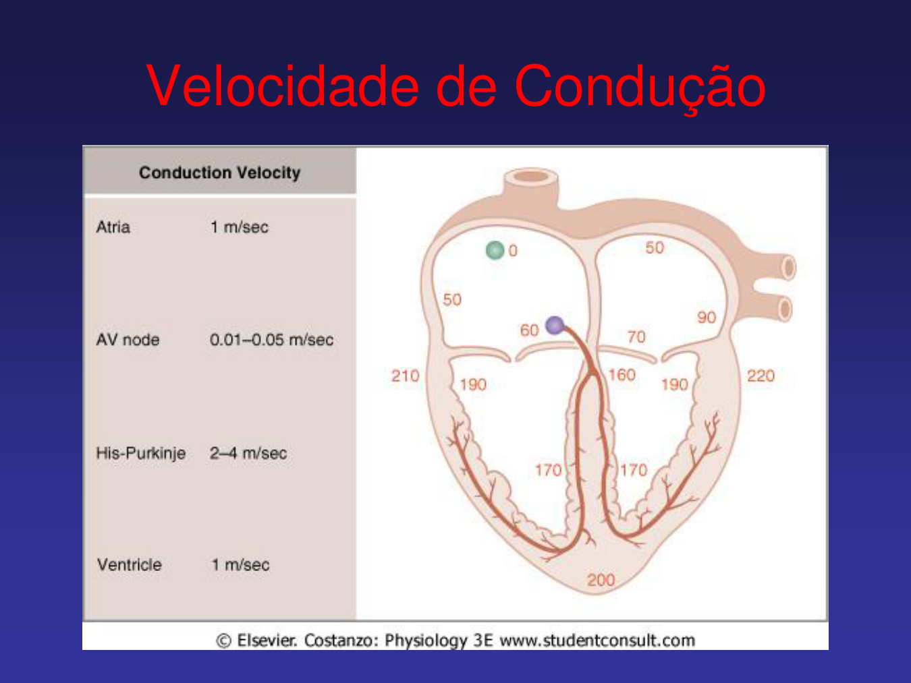
O potencial de ação cardíaco e o porquê do período refratário
Agora o gráfico clássico (e clássico de prova de fisiologia). O cardiomiócito em repouso está em torno de −90 mV (interior negativo). Quando estimulado, ocorre a despolarização: entram íons de sódio rapidamente e o potencial sobe até cerca de 0 mV — a célula "perde o polo" — e chega até a ficar positivo ("polarização invertida").
A grande diferença em relação ao neurônio é o platô: na célula cardíaca abrem-se canais de cálcio que mantêm a célula despolarizada por mais tempo. Por que isso é necessário? Porque o trabalho elétrico é muito mais rápido que o trabalho contrátil/mecânico; o platô de cálcio prolonga o sinal elétrico para sincronizá-lo com a contração e o relaxamento do músculo.
Esse prolongamento gera o período refratário: a célula já despolarizada não consegue despolarizar de novo por um intervalo. É um período de segurança — dá tempo de o músculo contrair e relaxar antes de receber um novo estímulo, e assim evita a fibrilação. Durante tudo isso, o potássio sai em sentido contrário ao do cálcio, mantendo o equilíbrio elétrico: o cálcio entra (há mais cálcio fora que dentro), o potássio sai (há mais potássio dentro que fora). Existem canais rápidos e lentos para esses íons, e são justamente os canais de cálcio do platô que prolongam o potencial e criam o período refratário.
Curiosidade que prova a autonomia elétrica do coração: em altas doses de relaxante muscular usado em cirurgia, toda a musculatura do corpo para — exceto a cardíaca. O coração tem gerador elétrico próprio (o nó sinusal), independente da junção neuromuscular esquelética.
Amarre as duas peças: o platô de cálcio (fase 2 do potencial) cria o período refratário, que é o "mecanismo de segurança" contra a fibrilação. Guarde isso, porque a Classe III de antiarrítmicos (que bloqueia o canal de potássio) funciona exatamente prolongando esse potencial e aumentando o período refratário — ou seja, reforçando a trava de segurança natural do coração. Eletrofisiologia e farmacologia são a mesma história contada de dois lados.
As 4 classes de antiarrítmicos (classificação de Vaughan Williams)
Os antiarrítmicos se organizam em 4 classes, cada uma bloqueando um alvo elétrico diferente. Veja a tabela e depois detalhamos cada uma:
| Classe | Alvo | Exemplos | Ideia central |
|---|---|---|---|
| I | Canal de sódio voltagem-dependente | Lidocaína (IB); quinidina, procainamida (IA); flecainida (IC) | Reduz a velocidade de despolarização (fase 0) |
| II | Receptor beta-adrenérgico | Propranolol, atenolol | Bloqueia o simpático → reduz frequência (profilaxia) |
| III | Canal de potássio | Amiodarona (sotalol, dronedarona) | Prolonga o potencial → aumenta período refratário |
| IV | Canal de cálcio (não-DHP) | Verapamil, diltiazem | Reduz cálcio cardíaco → reduz condução/frequência |
Classe I — bloqueadores de canal de sódio
Bloqueiam os canais de sódio voltagem-dependentes (os da fase 0). O exemplo central da aula é a lidocaína (classe IB). A lidocaína EV em baixas doses tem ação antiarrítmica — e isso é dose-dependente: em altas doses, ela bloqueia tecidos excitáveis a ponto de causar bloqueio de ramo (interrompe a condução). O carrinho de parada de qualquer hospital tem ampolas de amiodarona e de lidocaína: se a arritmia não responde à amiodarona, pode-se recorrer à lidocaína.
Vale a história da PCR (parada cardiorrespiratória). Antigamente, o "quarteto da PCR" era: adrenalina (estimular o simpático) + atropina (bloquear o parassimpático) + lidocaína EV em baixas doses + bicarbonato. Esse protocolo evoluiu: o bicarbonato virou "se necessário" (só se houver acidose após a reanimação); a atropina saiu (o estímulo beta-1 da própria adrenalina já basta para "tirar o freio" vagal). Hoje a dupla é adrenalina + amiodarona (classe III).
Classe II — betabloqueadores
São os betabloqueadores (propranolol, atenolol). O bloqueio simpático reduz a frequência, e — como o professor resume — "é muito mais fácil ter arritmia em taqui do que em bradi": frear o coração diminui a chance de arritmia. O uso aqui é profilático (preventivo), não na urgência — por exemplo, após um ataque cardíaco, em paciente com risco de arritmia. Detalhe prático: o propranolol tem forma injetável mas não é usado por essa via; o atenolol é apenas oral.
Classe III — bloqueadores de canal de potássio
Prolongam o potencial de ação cardíaco e, com isso, aumentam o período refratário (mais tempo despolarizado e protegido). São usados na atividade ectópica e na reentrada. O exemplo central, e o que importa para a prova, é a amiodarona (outros: sotalol, dronedarona). Em aula o professor também citou "terfenadina" e "disopiramida" nesta classe — veja a nota abaixo, porque há imprecisão aí.
Duas correções sobre os exemplos citados em aula. A terfenadina NÃO é antiarrítmico: era um anti-histamínico (anti-H1) retirado do mercado justamente porque bloqueava o canal de potássio IKr, prolongava o intervalo QT e causava torsades de pointes — ou seja, é exemplo de fármaco pró-arrítmico perigoso, não de uso terapêutico. Ela ilustra bem o lado perigoso do mecanismo (bloquear K⁺ prolonga o QT), mas não pertence ao arsenal antiarrítmico. Já a disopiramida é da Classe IA (bloqueadora de canal de sódio, ao lado de quinidina e procainamida), e não da Classe III. Exemplos corretos de Classe III: amiodarona, sotalol, dronedarona, ibutilida, dofetilida.
O que é um foco ectópico? Qualquer célula fora do nó sinusal que comece a gerar potenciais por conta própria. No coração isquemiado, células cardíacas "no desespero" disparam potenciais — esse é o "último suspiro" que leva à fibrilação. Quando há um foco localizado e grave, o tratamento pode ser a cirurgia de ablação: provoca-se de propósito um "mini-infarto" para matar exatamente os cardiomiócitos que geram o foco. A lógica é fria mas correta — é melhor matar esse punhado de células do que deixar o coração inteiro parar.
Na PCR, por que dar amiodarona junto com a adrenalina? Porque o estímulo adrenérgico EV produz uma taquicardia enorme, que poderia, ela própria, desencadear nova arritmia e parar o coração de novo ("o cara morre de novo"). A amiodarona entra junto para prevenir essa fibrilação de "rebote".
Classe IV — bloqueadores de canal de cálcio (não-DHP)
São os bloqueadores de canal de cálcio do tipo não-di-hidropiridínico (não-DHP): verapamil e diltiazem, que atuam no cálcio cardíaco (por isso afetam condução e frequência). Têm uso corriqueiro como antiarrítmicos. Já os DHP (di-hidropiridínicos) têm maior seletividade para o canal de cálcio vascular — e por isso não servem bem como antiarrítmicos.
Angina e antianginosos: os três grupos de fármacos
Voltamos à angina, agora para tratar. Angina é o suprimento insuficiente de oxigênio ao miocárdio frente às suas necessidades, com a dor torácica característica (tórax, braço esquerdo, pescoço) desencadeada por esforço ou excitação (inclusive sexual). Há dois tipos:
- Angina estável: a dor aparece apenas a esforços maiores — o limiar é previsível.
- Angina instável: a dor aparece ao mínimo esforço (ou em repouso). É a forma mais grave.
O arsenal se divide em três grupos:
1) Nitratos (vasodilatadores potentes / doadores de óxido nítrico)
Os nitratos — trinitrato de glicerila (nomes comerciais Tridil, Monocordil, Isordil) e o mononitrato de isossorbida — são liberadores de óxido nítrico e vasodilatadores potentes. Eles aliviam a angina por dois mecanismos somados:
- Reduzem a sobrecarga cardíaca: ao vasodilatar a periferia, o sangue "fica" nos vasos periféricos, retorna menos volume ao coração, e o músculo cardíaco trabalha menos (menos retorno venoso/menos sobrecarga = menos demanda de O₂). Este é, inclusive, o mecanismo antianginoso dominante dos nitratos; a dilatação coronariana/colateral é coadjuvante.
- Vasodilatam os vasos coronarianos colaterais, aumentando a oferta de O₂ ao miocárdio isquêmico.
O que são vasos coronarianos colaterais? São fruto da neoangiogênese que o coração desenvolve a partir dos ~40 anos — uma espécie de "recauchutagem" ou "gambiarra" do sistema vascular cardíaco, criando rotas alternativas de irrigação. Isso explica um paradoxo clínico: o infarto costuma ser mais letal no jovem (que ainda não tem colaterais — se entope a artéria, morre) do que no idoso, que pode já ter sobrevivido a 5-6 infartos porque seus colaterais deram rotas de fuga ao sangue. Os colaterais são, literalmente, sobrevida.
2) Betabloqueadores (profilaxia da angina)
Os betabloqueadores (atenolol, propranolol) fazem profilaxia da angina por uma via elegante: reduzem o simpático → reduzem a frequência → o coração passa mais tempo em diástole. E aqui está o pulo do gato: o coração se perfunde melhor na diástole (quando o músculo está relaxado, as coronárias enchem). Baixar de 70 para 60 bpm aumenta o tempo de perfusão diastólica, dando mais oportunidade para o sangue chegar às áreas hipoperfundidas. Ou seja: o betabloqueador melhora a angina tanto reduzindo a demanda (menos batimentos) quanto melhorando a oferta (mais tempo de diástole para perfundir).
3) Bloqueadores de canal de cálcio
Na angina, usam-se predominantemente os DHP (di-hidropiridínicos, as "...dipinas", como a nifedipina) porque vasodilatam as coronárias, aumentando a oferta. Os não-DHP (verapamil, diltiazem) são muito menos usados na angina, pelo risco de bloqueio de ramo: eles mexem no dromotropismo cardíaco, o que é perigoso sem se conhecer bem a atividade elétrica do paciente.
Note algo bonito: o mesmo bloqueador de cálcio é antiarrítmico, antianginoso E anti-hipertensivo — por isso essa classe aparece várias vezes ao longo do curso. E como o nitrato vasodilata, ele pode ser associado a outros anti-hipertensivos; é por isso que às vezes um paciente usa 4-5 anti-hipertensivos, cada um em dose menor, somando efeitos e reduzindo efeitos adversos de cada um.
Na angina INSTÁVEL, é CONTRAINDICADO usar bloqueador de canal de cálcio SOZINHO. Siga o raciocínio: o bloqueador de cálcio vasodilata → a pressão cai → o barorreceptor percebe a queda e manda o coração acelerar (taquicardia reflexa) → mais batimentos = maior consumo de O₂ → e isso PIORA a angina, mesmo tendo aumentado o fluxo coronariano. O ganho de oferta é anulado pelo aumento de demanda. Por isso, na angina, o bloqueador de cálcio deve sempre ser ASSOCIADO ao betabloqueador — o betabloqueador segura essa frequência reflexa. Nas palavras dele: "Eu falei a palavra mágica, acordou até os do fundo. Caiu nessa prova agora? Não? Então vai cair na próxima, com certeza."
Conduta na angina instável: estabilizar primeiro, cateterizar depois
Diante de uma angina instável, a sequência importa: estabiliza-se o paciente com fármaco PRIMEIRO; o cateterismo/revascularização vem depois do atendimento inicial. Não se "enfia" o paciente direto na hemodinâmica antes de estabilizá-lo clinicamente.
E há uma dura realidade do sistema público que reforça por que estabilizar bem é tão decisivo: na rede pública, marcar um cateterismo pode demorar mais de 30 dias. O professor relata o caso de um conhecido que ficou 32 dias internado no Hospital Geral de São Mateus aguardando vaga (via regulação/CROSS) para o cateterismo no Dante Pazzanese. Se o paciente vai esperar semanas pelo procedimento definitivo, o tratamento farmacológico que o mantém estável não é detalhe — é o que o mantém vivo até lá.
O paradoxo do betabloqueador na IC: por que frear um coração que já falha?
O professor conta uma história pessoal da pós-graduação que ilumina um conceito contraintuitivo. Induzia-se IC em ratos amarrando a artéria descendente anterior (um infarto cirúrgico), e esses ratos evoluíam para insuficiência cardíaca; ele estudava o uso de betabloqueador nesse modelo. Parecia uma contradição: por que bloquear o simpático num coração que já está fraco e precisaria de estímulo?
A resposta está no barorreflexo. Vendo o baixo débito, o barorreflexo aumenta a atividade simpática cardiovascular (ativa o centro cardioacelerador) para tentar aumentar a força — uma descarga simpática compensatória. Só que, num coração isquêmico, aumentar a força significa aumentar o consumo de O₂, e isso piora a doença. A "compensação" que o corpo tenta fazer é, na verdade, patológica.
Conclusão, e ênfase do professor: segurar a onda do simpático com o betabloqueador dá melhor sobrevida. "A tentativa de compensação dá um prognóstico pior, uma sobrevida menor." Evitar a compensação patológica é o que faz o paciente viver mais. Esse raciocínio se conecta com o uso de IECA na prevenção da "área de reinfarto" — manter o paciente estável, sem reinfartar, antes da revascularização definitiva.
Conexões com o resto do curso
- O cálcio como efetor da contração e os betabloqueadores aparecem desde a §01 (Fisiologia Cardiovascular) e a §02 (Anti-hipertensivos) — aqui você vê que o mesmo bloqueador de cálcio é antiarrítmico, antianginoso e anti-hipertensivo.
- A interação digoxina + furosemida só se entende sabendo como os diuréticos depletam potássio, tema da §03 (Diuréticos e Farmacologia Renal).
- A amiodarona e a adrenalina na PCR reaparecem na §05 (Drogas Vasoativas / UTI), no contexto do paciente crítico.
- O óxido nítrico dos nitratos e o conceito de neoangiogênese/colaterais conversam com a fisiopatologia da aterotrombose e o tratamento do IAM da §06 (Anticoagulantes, Antiplaquetários e Fibrinolíticos).
- O canal de potássio que hiperpolariza a célula (mecanismo vagal e alvo da Classe III) é o mesmo tipo de canal explorado em §08 (Hipoglicemiantes / sulfonilureias atuam fechando canal de K⁺ na célula beta) — a fisiologia do K⁺ é transversal.
- → Cálcio é o efetor da contração: aumenta os 3 tropismos (ino = força, crono = frequência, dromo = condução). Simpático/β1 ↑ AMPc e ↑ Ca; vago/M2 ↓ Ca e abre canal de K⁺ (hiperpolariza).
- → Digitálicos (digoxina): inibem a Na⁺/K⁺-ATPase → acumula Na → trava o trocador Na/Ca → acumula Ca → inotrópico POSITIVO. São cronotrópicos NEGATIVOS por ação vagal. Inotropismo INDEPENDE do simpático.
- → Intoxicação digitálica: por dose excessiva OU por hipocalemia. A digoxina compete com o K⁺ pelo sítio na bomba — menos K⁺, mais digoxina ligada, mais efeito. Diurético (furosemida) depleta K⁺ e potencializa o digitálico. Conduta: dosar e repor potássio LENTAMENTE.
- → Eletrofisiologia: nó sinusal gera o ritmo; nó AV retarda (1→0,1 m/s) para separar sístole atrial e ventricular; His-Purkinje acelera (~4 m/s). O platô de cálcio cria o período refratário, a trava de segurança contra fibrilação.
- → 4 classes de antiarrítmicos: I = canal de Na (lidocaína); II = betabloqueadores (profilaxia); III = canal de K (amiodarona, prolonga refratário); IV = canal de Ca não-DHP (verapamil, diltiazem). PCR hoje = adrenalina + amiodarona.
- → Angina: estável (esforço maior) x instável (mínimo esforço, mais grave). Três grupos: nitratos (NO, vasodilatador, reduz sobrecarga + dilata colaterais), betabloqueador (profilaxia, ↑ tempo de perfusão diastólica) e bloqueador de Ca DHP (dilata coronária).
- → PEGADINHA: na angina instável, bloqueador de Ca NUNCA sozinho — vasodilata → ↓PA → baro ↑FC → ↑consumo O₂ → piora angina. Sempre associar betabloqueador.
- → IC: a compensação simpática é PATOLÓGICA (↑força = ↑consumo O₂ num coração isquêmico). Betabloqueador "segura" o simpático e melhora a sobrevida. Estabilizar com fármaco ANTES de cateterizar.
Drogas Vasoativas (Paciente Crítico / UTI)
Por que esta aula existe: o que é uma droga vasoativa e onde ela é usada
Droga vasoativa é todo fármaco usado para manipular ativamente o sistema cardiovascular de um paciente crítico — quase sempre dentro da UTI ou da sala de emergência. Elas ocupam um lugar central no arsenal terapêutico do paciente grave porque agem exatamente sobre as duas variáveis que mantêm um ser humano vivo: a pressão de perfusão (que leva sangue oxigenado aos órgãos) e o débito cardíaco (o quanto o coração consegue bombear).
Quatro características definem o comportamento dessas drogas e você precisa carregá-las o tempo todo nesta seção:
- Efeitos vasculares periféricos, pulmonares ou cardíacos — diretos (a droga age no próprio vaso ou no miocárdio) ou indiretos (por reflexo).
- Dose-dependentes — a MESMA droga faz coisas DIFERENTES conforme a dose. Isto não é detalhe: é a lógica inteira da seção e a maior fonte de pegadinha de prova.
- Efeito rápido e curto — começam a agir em segundos a minutos e somem rápido quando você desliga a bomba. É justamente isso que permite "dirigir" o paciente em tempo real.
- São administradas em infusão contínua e tituladas — você ajusta a vazão olhando a resposta do paciente no monitor.
Esta seção é a aplicação prática, à beira do leito, de tudo que você viu sobre receptores adrenérgicos e contração vascular em §01 (Fisiologia Cardiovascular e Controle da Pressão Arterial) e sobre tônus simpático em §02 (Anti-hipertensivos) — só que agora invertendo a lógica: lá você queria BAIXAR a pressão; aqui, na maioria das vezes, você está lutando para SUSTENTAR a pressão de um paciente que está morrendo.
"Você nunca vai dar logo a dose mágica. Você vai aumentando de acordo com a necessidade." Este é o princípio número um da titulação e vale para TODAS as vasoativas — alfa, beta e dopaminérgicas. Não existe "a dose certa" tabelada que você prescreve de uma vez. Você começa baixo, observa a resposta (pressão, frequência, débito urinário, perfusão de extremidades) e sobe gradualmente até atingir o alvo. Atingiu o alvo? Mantém. Está mantendo? Não sobe. Só sobe de novo se a pressão voltar a cair. Quem prescreve "a dose mágica" de cara não entendeu a farmacologia do paciente crítico.
O mapa dos receptores adrenérgicos: a chave de tudo
Antes de decorar drogas, entenda os receptores. Toda catecolamina é uma chave que se encaixa em fechaduras (receptores) espalhadas pelo corpo, cada fechadura com uma consequência fisiológica diferente:
- Alfa-1 (α1) — receptor de vasoconstrição. Quando estimulado, o vaso contrai, a resistência periférica sobe e a pressão arterial sobe. É o efeito "aperta a mangueira".
- Alfa-2 (α2) — receptor predominantemente pré-sináptico/central, de modulação; nas vasoativas tem expressão clínica menos relevante que o α1, mas sua AUSÊNCIA tem um papel importante (já vamos ver na noradrenalina).
- Beta-1 (β1) — receptor cardíaco. Estimulado, aumenta a frequência (cronotropismo), a força de contração (inotropismo) e, portanto, o débito cardíaco. É o "acelerador do coração".
- Beta-2 (β2) — receptor de relaxamento de músculo liso: faz broncodilatação (pulmão) e vasodilatação (especialmente na musculatura esquelética). Repare: β2 é o oposto vascular do α1 — um dilata, o outro contrai.
- Receptores dopaminérgicos — periféricos; classicamente associados ao aumento do débito/fluxo urinário em baixas doses (a aula não detalha o mecanismo).
Agora a parte genial: cada droga tem um perfil de afinidade diferente por essas fechaduras. Não decore listas soltas — entenda o mapa da figura abaixo, porque dele saem todas as indicações.
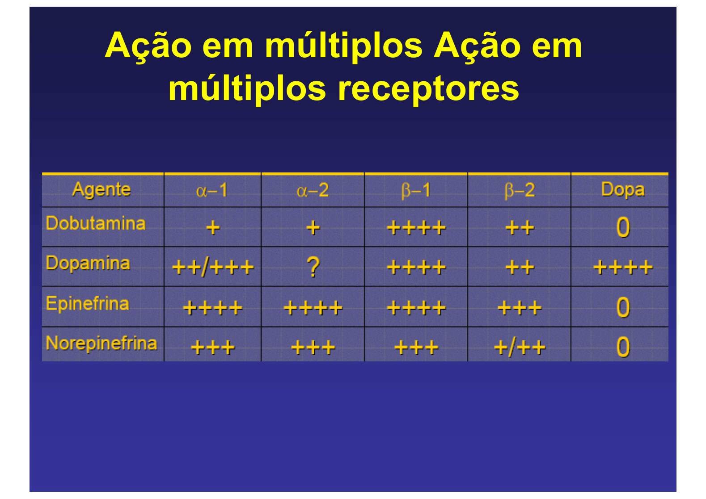
| Droga | α1 | α2 | β1 | β2 | Dopaminérgico | Leitura rápida |
|---|---|---|---|---|---|---|
| Dobutamina | pouco | pouco | muito (seletivo) | moderado | nenhum | Inotrópico puro — quase não mexe no vaso |
| Dopamina | moderado a forte | pouco | muito | pouco | muito | Inotrópico + vasoconstritor + dopaminérgico |
| Adrenalina | forte | forte | forte | moderado | nenhum | Pega TUDO — a mais "completa" |
| Noradrenalina | moderado | moderado | muito | pouco | nenhum | Vasoconstritor mais potente (quase não dilata) |
A pegadinha clássica de receptores — "já caiu na prova de vocês". Pergunta: por que a noradrenalina faz uma vasoconstrição MAIOR do que a adrenalina, se a adrenalina pega α1 até com mais força? Resposta: porque a adrenalina pega MUITO β2 (vasodilatador). O efeito vasoconstritor LÍQUIDO é α1 menos β2. Na adrenalina, o β2 forte "desconta" boa parte da vasoconstrição. Na noradrenalina, que quase não pega β2, sobra o α1 quase inteiro — então a contração líquida é maior. Moral: a droga vasoconstritora mais potente não é a que tem o α1 mais forte, e sim a que tem α1 forte E β2 fraco. Por isso a noradrenalina é a vasoconstritora de eleição no choque.
A lógica clínica: o que caiu? Débito ou resistência?
Esta é a pergunta que organiza toda a escolha de droga. A pressão arterial é, simplificadamente, débito cardíaco × resistência vascular periférica. Se o paciente está hipotenso, alguma dessas duas caiu — e a droga certa depende de QUAL caiu:
- Caiu a RESISTÊNCIA (vaso "frouxo", dilatado — típico do choque séptico) → você precisa de um vasoconstritor. Droga de escolha: noradrenalina.
- Caiu o DÉBITO (coração bombeando mal — pós-infarto, disfunção contrátil) → você precisa de um inotrópico (droga que aumenta a força de contração). Droga de escolha: dobutamina.
- Caíram OS DOIS juntos (o cenário mais grave do paciente crítico) → você associa: dobutamina (para o débito) + noradrenalina (para a resistência), em doses altas.
O professor martela um raciocínio que parece óbvio mas é errado o tempo todo na prática: "Se o débito está bom, vou aumentar o débito para quê?" Não faz sentido administrar inotrópico num paciente cujo coração já bombeia bem — você só vai gerar taquicardia, arritmia e consumo de oxigênio miocárdico sem ganho. Primeiro diagnostique o que caiu; só depois escolha a droga.
"O receptor está lá, está ligando. Só que a resposta fisiológica não ocorre mais. Daí o cara vai à falência de múltiplos órgãos." Existe um ponto, no paciente séptico/crítico, em que você sobe a dose das vasoativas ao máximo e o paciente simplesmente PARA de responder. Não é que faltam receptores nem que a droga não chega: os receptores estão presentes e se ligando, mas a maquinaria de resposta a jusante esgotou. O simpático "parou de responder". A partir daí, mesmo a tríade noradrenalina + adrenalina + dobutamina não sustenta a pressão, e o paciente evolui para falência de múltiplos órgãos. Reconhecer esse limite faz parte do entendimento da droga.
Classificação dos simpatomiméticos (catecolaminas)
Antes de detalhar cada droga, organize a "família". Simpatomimético é todo fármaco que imita o sistema nervoso simpático (mimetiza a adrenalina/noradrenalina). Eles se dividem em três grupos:
- Catecolaminas naturais (análogos estruturais das endógenas): noradrenalina, adrenalina e dopamina. São exatamente as três que ficam no carrinho de parada.
- Catecolaminas sintéticas: a mais importante para vocês é a dobutamina (os slides citam também a dopexamina, de uso mais restrito).
- Não-catecolaminas sintéticas: efedrina e fenilefrina.
Um aparte importante sobre o terceiro grupo: efedrina e fenilefrina já foram usadas como descongestionantes nasais e hoje estão praticamente banidas dessa indicação por seus efeitos centrais e cardiovasculares/periféricos. O raciocínio do professor: "Não compensa você tratar uma coriza e fazer uma isquemia renal." Parar de "fungar" não vale o risco de isquemia renal, de pele ou cardíaca. Hoje, para descongestão, busca-se ação local com efeito sistêmico mínimo — usa-se a nafazolina (descongestionante tópico de ação local) e, por via oral, a pseudoefedrina.
Correção a um ponto dito em aula: a pseudoefedrina é um descongestionante de uso ORAL/SISTÊMICO, com boa absorção e ação sistêmica — não é "preferencialmente tópica/pouco absorvida". Justamente por agir sistemicamente (e ser precursora de metanfetamina), ela é de venda controlada pela ANVISA. Quem age localmente com mínima repercussão sistêmica são os descongestionantes tópicos imidazolínicos (nafazolina, oximetazolina), que devem ser limitados a poucos dias (3–5) pelo risco de rinite medicamentosa de rebote. Um ajuste de classificação: o fenoldopam, que aparece nos slides ao lado da dopexamina, não é catecolamina — é um agonista seletivo de receptor dopaminérgico D1, usado como vasodilatador em emergência hipertensiva.
Adrenalina (epinefrina) — a que pega tudo
A adrenalina é um simpatomimético potente, produzido fisiologicamente na medula da suprarrenal. Tem efeito nos QUATRO receptores: α1, α2, β1 e β2. Por isso é a mais versátil — e a mais perigosa.
Indicações:
- Hipotensão refratária — "refratária a qualquer coisa", quando nada mais segurou a pressão.
- Anafilaxia — o choque anafilático é uma alergia gravíssima em que a degranulação maciça de mastócitos libera histamina (potente vasodilatador) e despenca a pressão. A adrenalina reverte vasodilatação (α1), broncoespasmo (β2) e sustenta o coração (β1). Atenção: na anafilaxia a via de eleição é a intramuscular, não a infusão IV — ver nota de precisão clínica adiante.
- Broncoespasmo — pela broncodilatação β2 (ex.: emergência asmática grave).
- Parada cardiorrespiratória (PCR) — droga do carrinho de parada.
Vias de administração: a via depende da indicação. No paciente crítico (hipotensão refratária), a adrenalina é dada em infusão intravenosa contínua, preferencialmente por cateter central; também pode ser intratraqueal (instilada pela cânula endotraqueal quando não há acesso venoso). A aula menciona ainda a via subcutânea como uso histórico na emergência asmática — veja a nota de precisão clínica abaixo, porque a via e a dose mudam conforme a indicação.
Efeitos adversos: taquiarritmias, hipomagnesemia, hipoxemia e acidemia, vasoconstrição severa e isquemia (renal, cardíaca, de pele e de extremidades — podendo chegar à necrose e à amputação).
A via e a dose da adrenalina mudam conforme a indicação — e errar isso pode ser fatal. Pelas diretrizes atuais (AHA, ASBAI): (1) Anafilaxia → adrenalina INTRAMUSCULAR (IM) 0,3–0,5 mg da solução 1:1000, na face anterolateral da coxa, repetível a cada 5–15 min. É primeira linha e NÃO é infusão IV em µg/min nem via subcutânea — a via SC tem absorção errática e a IV em bolus pode causar isquemia miocárdica e arritmia fatal. (2) PCR → adrenalina IV/IO 1 mg (1:10.000) a cada 3–5 min. (3) Hipotensão/choque refratário → infusão IV contínua titulada por acesso central (é o cenário das faixas em µg/min discutidas nesta seção). O broncoespasmo asmático de rotina é tratado com beta-2 inalatório (salbutamol); a adrenalina IM fica reservada à asma quase fatal/anafilaxia.
O efeito dose-dependente da adrenalina. "Isso aqui é uma pergunta de prova." A MESMA adrenalina age diferente conforme a dose:
- Baixas doses (1–2 µg/min): predomina o efeito BETA. Resultado: broncodilatação, vasodilatação muscular (β2) e estímulo β1 que AUMENTA frequência, contratilidade e débito cardíaco — sem elevar a resistência vascular nem a pressão diastólica, porque em baixas doses o efeito β2 vasodilatador supera o β1. Parece contraintuitivo: o coração bate mais e mais forte, mas a PA não dispara (a pressão diastólica/RVS chega a cair; a sistólica pode subir um pouco pelo aumento de débito).
- Altas doses (> 10 µg/min em infusão contínua): aparece o efeito ALFA. Resultado: vasoconstrição, hipertensão e taquicardia; hipocalemia; aumento da secreção de renina (lembre: o α estimula e o β inibe a renina); hiperglicemia (inibe a liberação de insulina); midríase; e liberação de mediadores inflamatórios por mastócitos e basófilos (histamina).
O valor que o professor pede para guardar como pergunta de prova é > 10 µg/min como faixa em que o efeito alfa (vasoconstrição/hipertensão) passa a predominar.
Esse esquema "dose baixa = beta / dose alta = alfa" é uma simplificação didática útil para a prova, mas não é um interruptor fisiológico exato: a adrenalina estimula alfa e beta simultaneamente em toda a faixa de dose — o que muda é o predomínio relativo do efeito hemodinâmico líquido. Os números "1–2 µg/min" e "> 10 µg/min" são valores de referência aproximados (variam com peso, paciente e contexto), não limiares universais fixos. Guarde-os para a prova, mas sem tratá-los como precisão absoluta à beira do leito.
O kit de PCR: ontem e hoje
A adrenalina abre uma das histórias mais cobradas da aula. O kit antigo da parada cardiorrespiratória era bem diferente do atual. Antigamente se usava, em baixas doses EV: adrenalina + atropina + lidocaína + bicarbonato. Três deles saíram do protocolo de rotina, nesta ordem:
- Saiu o bicarbonato — hoje só entra depois, e apenas se for necessário corrigir a acidose DEPOIS de reanimar (não é manobra de rotina durante a parada).
- Saiu a atropina — a forma como a aula explica é que não era preciso bloquear o parassimpático, bastando o estímulo simpático (adrenalina). A atropina age no receptor muscarínico M2 (parassimpático).
- A lidocaína foi substituída pela amiodarona — um antiarrítmico de classe III, bloqueador de canal de potássio (atua na repolarização/automatismo). Isto conecta diretamente com §04 (Antiarrítmicos), onde você estuda a classificação de Vaughan-Williams: o bloqueio do canal de K⁺ que define a classe III reaparece aqui na escolha da amiodarona.
Resultado, como apresentado em aula: a dupla padrão da PCR é adrenalina + amiodarona, ambas no carrinho, com atropina e lidocaína como reserva.
Dois ajustes às diretrizes atuais de ACLS (AHA), pois a aula simplifica o racional: (1) A atropina foi retirada do algoritmo de PCR em assistolia/AESP por ausência de benefício comprovado (ACLS 2010+), não exatamente "porque o estímulo simpático basta" — ela não é recomendada de rotina nem como reserva na PCR, mas permanece indicada na bradicardia sintomática (fora da parada). (2) A amiodarona não aposentou definitivamente a lidocaína: hoje amiodarona OU lidocaína são alternativas aceitáveis na FV/TV sem pulso refratária ao choque. Além disso, o antiarrítmico só entra nos ritmos chocáveis (FV/TVSP) — a adrenalina é para todos os ritmos, o antiarrítmico não.
Noradrenalina (norepinefrina) — a vasoconstritora de eleição
A noradrenalina é potente fisiologicamente e produzida nas terminações nervosas pós-ganglionares do simpático. Pega α1, α2 e β1 — e pouquíssimo β2. Esse "buraco" no β2 é exatamente o que a torna a droga mais vasoconstritora do arsenal: como quase não dilata, o efeito α1 fica quase inteiro disponível.
Indicações:
- Hipotensão por queda da resistência (tônus vascular periférico) — o cenário do choque distributivo/séptico, em que o vaso está dilatado.
- Depressão miocárdica — porque ela também pega um pouco de β1, dando algum suporte inotrópico junto com a vasoconstrição (ver a nota de precisão clínica sobre o papel real desse suporte).
Ressalva ao que a aula coloca: a noradrenalina não é o inotrópico de escolha para "tratar a depressão miocárdica". O efeito β1 existe, mas o aumento de pós-carga (α1) frequentemente reduz o débito de um ventrículo já disfuncional. No choque (séptico ou cardiogênico com hipotensão grave), a noradrenalina entra como vasopressor para manter a PAM; quando o problema é a contratilidade, o inotrópico é a dobutamina (ou milrinona), não a noradrenalina.
Administração e dose: IV em acesso venoso central, titulada pelo efeito na faixa de 1 a 20 µg/min. A lógica da titulação: começa na dose mais baixa esperando a pressão subir; ao atingir o nível desejado, mantém; só aumenta se NÃO estiver sustentando a pressão.
Efeitos fisiológicos (somando os receptores): a combinação α1 + β1 eleva a pressão sistêmica E pulmonar e aumenta a contratilidade e o débito. O fluxo de sangue é redistribuído da periferia, rins e trato gastrointestinal para o coração e o SNC (o organismo "salva o centro"). A frequência cardíaca pode até cair por reflexo à hipertensão (estímulo α1). E a ausência de β2 aumenta a potência da vasoconstrição.
Riscos: justamente por jogar o sangue para o centro, gera isquemia e hipoperfusão de órgãos periféricos — risco de necrose/isquemia de extremidades. Além disso, a vasoconstrição pulmonar aumenta a pressão na circulação pulmonar, o que extravasa líquido para o interstício e pode desencadear edema pulmonar agudo.
Para você NUNCA esquecer que vasoconstritor potente causa isquemia de extremidade, guarde este caso real. Uma ex-aluna e funcionária da faculdade, Fabiana Gasparotti (por volta dos 27 anos), atendeu no pronto-socorro um paciente com meningite meningocócica. Mesmo tendo feito quimioprofilaxia, contraiu meningococcemia e evoluiu para um choque séptico gravíssimo. Para sustentá-la, foram necessárias doses altíssimas de drogas vasoativas vasoconstritoras — e a vasoconstrição extrema gerou isquemia das quatro extremidades. Ela sobreviveu, mas teve os quatro membros amputados (dois superiores, dois inferiores). Foi reabilitada com quatro próteses semifuncionais por uma campanha nacional de coleta de lacres (ONG Lacres do Bem): juntaram 4.400 garrafas PET cheias de lacres, sabendo que cada garrafa PET de 2 L comporta cerca de 3.300 a 3.500 lacres. A lição farmacológica: a droga que salvou a vida dela foi a mesma que custou os membros — vasoconstrição salva o centro à custa da periferia.
Dopamina — a precursora versátil (com uma pegadinha de cateter)
A dopamina é o precursor biológico da noradrenalina na cadeia de biossíntese. A via biossintética completa das catecolaminas é: fenilalanina → tirosina → dopa → dopamina → noradrenalina → adrenalina. Guardar essa cadeia ajuda a entender por que a dopamina tem perfil "intermediário". Atenção a um mal-entendido comum: a dopamina é neurotransmissor por si mesma e, quando administrada como droga, ela age diretamente nos seus próprios receptores (β1, α1, dopaminérgicos) — não é dada para "virar noradrenalina" no paciente.
Ela age em β1, α1 e nos receptores dopaminérgicos periféricos. A indicação principal é a hipotensão por queda da contratilidade/inotropismo (efeito β1), tipicamente em doses baixas.
Um ponto histórico que ainda cai em prova de residência: a chamada "dopa-dose diurética". No passado, em baixas doses, a dopamina aumentava o débito urinário (via receptores dopaminérgicos renais). Hoje não se usa mais com essa finalidade — mas o professor faz questão de avisar: "vai ficar isso numa prova de residência, lembrar disso". Então grave o fato histórico: dopamina em dose baixa aumentava o débito urinário.
Por que a "dopamina em dose renal" foi abandonada: não foi modismo. Ensaios clínicos (como o estudo ANZICS, 2000) e meta-análises mostraram que a dose dopaminérgica baixa aumenta o fluxo urinário sem proteger o rim (não previne lesão renal nem necessidade de diálise) e ainda aumenta o risco de arritmias. Saiu por ineficácia e potencial de dano comprovados — não porque "deixou de estar na moda".
Administração: a via IV central é preferível, mas não fundamental (pode ser periférica).
Efeitos adversos: taquicardia em altas doses, arritmias e isquemia miocárdica — esta última MENOS frequente do que com a noradrenalina.
Esta é uma daquelas pegadinhas que separa quem entende de quem decora. A dopamina é INATIVADA por soluções alcalinas (como o bicarbonato). Na UTI, o cateter central é compartilhado por várias drogas. Se o profissional administra bicarbonato e NÃO lava a via (flush com solução salina/fisiológica), o bicarbonato fica retido no "espaço morto" do cateter e inativa a dopamina que passa em seguida. Cenário clínico: o paciente "não responde" à dopamina — e o médico inexperiente acha que é falência circulatória, quando na verdade a via está cheia de bicarbonato e a droga nem está chegando ativa. Administrar o medicamento é responsabilidade da enfermagem, mas o médico deve verificar/perguntar se o flush salino está sendo feito. "Isso é importante você saber." (O mesmo cuidado vale para a dobutamina, igualmente inativada por solução alcalina.)
Dobutamina — o inotrópico puro
A dobutamina é uma catecolamina sintética que age em β1 e β2 e NÃO pega α. Consequência direta: tem pouquíssima ação no vaso. É o inotrópico "limpo" da seção.
Uso predominante: estados de diminuição do débito cardíaco. O exemplo de ouro é o pós-infarto agudo do miocárdio (IAM): a parte infartada do coração morreu, virou fibrose e perdeu a função contrátil. A dobutamina estimula o miocárdio remanescente vivo (β1), aumentando a força de contração das fibras saudáveis e, com isso, o débito.
Efeitos fisiológicos: o estímulo β1 produz efeito cronotrópico e inotrópico positivos e aumenta a condução AV (atrioventricular). O efeito β2 na periferia (vasodilatação) contrabalança o fraco efeito α1.
Administração: via central preferencial (mas não essencial); como a dopamina, é inativada por soluções alcalinas — mesmo cuidado do flush salino.
Efeitos adversos: taquicardia, arritmias e — atenção — HIPOTENSÃO. Por quê? Porque ela não pega α (não vasoconstringe) e estimula β2 (vasodilata): em alguns pacientes a pressão CAI. Por isso, no choque, dobutamina sozinha é problemática.
Aqui fecha o raciocínio de associação. O choque cursa quase sempre com hipotensão. Se você der dobutamina sozinha num paciente chocado, o efeito β2 dela pode piorar a pressão. A solução é associá-la a um vasoconstritor que segure a resistência: noradrenalina (e, em casos extremos, também adrenalina). Assim você corrige débito (dobutamina) E resistência (noradrenalina) juntos, em doses altas. Guarde a frase-conceito: quando caem débito E resistência, a conduta é dobutamina com noradrenalina junto, em doses altas. E lembre do limite: mesmo com essa tríade, o paciente pode não responder se o simpático já estiver falindo.
Choque séptico: as duas fases simpáticas e a golden hour
Para saber QUANDO entrar com vasoativa, você precisa entender a fisiopatologia temporal do choque séptico. Ele tem duas fases sequenciais:
- Fase hipercinética (hiperdinâmica): no início, a atividade simpática DISPARA. O organismo está reagindo à infecção; há liberação intensa de catecolaminas endógenas. A pressão e a frequência sobem até um pico.
- Fase hipocinética (hipodinâmica): depois, a atividade simpática DESPENCA — o simpático começa a "morrer". A pressão e a frequência caem. É exatamente NESTE momento de queda que se inicia o suporte com drogas vasoativas.
O professor sustenta esse modelo com sua experiência de doutorado: em um modelo de sepse em rato, nas primeiras horas a atividade simpática subia até um pico (fase precoce, estudada por volta de 6–8 h) e, entre 24 e 48 h, o simpático já estava "morrendo" (fase tardia). É a base fisiológica de por que existe uma janela ótima de intervenção.
Essa janela é a golden hour ("hora de ouro"): o intervalo em que pegar e tratar o quadro muda o prognóstico. Se você perde essa janela, a mortalidade aumenta substancialmente. O professor enfatiza que reconhecer os sinais de choque é cobrado tanto no PS quanto em enfermaria — e que NÃO é incomum: um paciente internado, exposto à microbiota hospitalar e a eventuais falhas de cuidado, pode se contaminar com uma bactéria virulenta e evoluir para choque séptico (foi exatamente o que aconteceu no caso da Fabiana).
O modelo das "duas fases simpáticas" é uma narrativa fisiológica/experimental (o modelo de doutorado do professor), ótima para entender o que acontece — mas não corresponde ao critério atual de QUANDO iniciar a droga. Pela Surviving Sepsis Campaign (2021), a noradrenalina é o vasopressor de primeira linha e deve ser iniciada precocemente, em paralelo à reposição volêmica, para alvo de PAM ≥ 65 mmHg — não se espera "a fase hipocinética despencar". Pode-se iniciar inclusive por acesso periférico transitório até obter o acesso central. Na sequência de drogas, a vasopressina é o segundo agente associado à noradrenalina (para poupar dose de catecolamina), e a adrenalina fica como terceira linha — diferente da tríade "noradrenalina + adrenalina + dobutamina" citada em aula.
Vasodilatadores: a outra metade da seção e o óxido nítrico
Até aqui as drogas SUSTENTAVAM a pressão. Agora vamos ao lado oposto: os vasodilatadores emergenciais, usados quando o problema é pressão ALTA demais (emergência hipertensiva) ou quando precisamos relaxar o vaso por outro motivo. Os três da aula são: nitroprussiato de sódio, nitroglicerina e óxido nítrico inalatório.
O mecanismo comum: todos são doadores/liberadores de óxido nítrico (NO). O óxido nítrico (NO) é o vasodilatador natural mais potente do corpo, produzido fisiologicamente no endotélio vascular. Quando liberado, ele eleva o GMPc (segundo mensageiro) na parede do vaso, o que reduz a entrada de cálcio na célula muscular lisa — sem cálcio, não há contração, e o vaso relaxa.
Os doadores de NO provocam vasodilatação venosa e arterial. A vasodilatação arterial é a mais importante clinicamente, porque é no leito arterial que existe mais vasoconstrição inervada pelo simpático para ser contrabalançada.
Nitroprussiato de sódio (Nipride) — o controlador fino da emergência hipertensiva
O nitroprussiato de sódio (nome comercial Nipride) é um doador de NO que causa vasodilatação venosa E arterial (mais potente na arterial). Indicações: hipertensão severa/emergência hipertensiva; pressões de enchimento pulmonar elevadas (edema agudo de pulmão); e hipertensão pulmonar.
O grande trunfo na emergência hipertensiva é que a dose é titulada — você baixa a pressão de forma lenta e controlada, a vazão na mão. O professor cita de passagem um limite máximo ("não superior a 30", sem verbalizar a unidade na fala) e os slides registram não usar por mais de 3–4 dias.
O número "30" foi dito sem unidade em aula — não o use como dose isolada. Para referência prática, a dose máxima usual do nitroprussiato fica em torno de até ~10 µg/kg/min, e apenas por curtos períodos justamente pelo risco de acúmulo de cianeto. O essencial da prova não é o numeral, e sim o conceito: dose titulada e tempo de uso limitado.
Detalhe farmacotécnico importante — fotodegradação: o nitroprussiato é destruído pela luz. Exige equipo/material especial cor âmbar (marrom escuro), que é mais caro. No passado, sem esses equipos, improvisava-se a fotoproteção enrolando a bureta/bolsa com fita crepe e papel carbono de impressora matricial. Hoje já vem o material âmbar pronto.
O efeito adverso que define a droga — toxicidade por cianeto: a metabolização do nitroprussiato (como de todo liberador de NO) gera cianeto e tiocianato. O cianeto é um inibidor enzimático potentíssimo: ele bloqueia a respiração aeróbica da célula (inibe a citocromo c oxidase, a enzima final da cadeia respiratória), impedindo a célula de usar o oxigênio e levando à acidose metabólica (lática) — pode matar. Para reduzir esse efeito, usa-se tiossulfato de sódio (fornece enxofre que converte o cianeto em tiocianato, menos tóxico). Os níveis séricos de tiocianato podem perdurar por cerca de uma semana, então o risco de acidose metabólica precisa ser monitorado por dias.
Aparte forense (mnemônica do professor): o professor cita o achado de necropsia como indício de envenenamento por cianeto. Vale precisar o dado: como a célula não consegue extrair o oxigênio do sangue, o sangue venoso permanece oxigenado e a coloração clássica da intoxicação por cianeto é vermelho-cereja (não azulada). A cianometemoglobina, por sua vez, é o composto que se forma quando o cianeto é "sequestrado" pela metemoglobina — base do antídoto à base de nitrito, e não a causa de uma coloração azulada do cadáver.
Nitroprussiato vs nifedipina sublingual. Por que, na emergência hipertensiva, o nitroprussiato é melhor que a velha nifedipina sublingual? Porque a dose do nitroprussiato é titulada — você reduz a pressão de forma lenta e CONTROLADA. A nifedipina sublingual, ao contrário, derruba a pressão de uma vez só, uma "resposta uau" brusca e imprevisível. Essa queda abrupta é perigosa (pode hipoperfundir cérebro/coração e até precipitar isquemia). Por isso a conduta moderna prefere o controle fino do nitroprussiato à derrubada brusca da nifedipina SL. Guarde: titulação = queda lenta e segura; nifedipina SL = queda brusca e arriscada.
Nitroglicerina — o vasodilatador do coração isquêmico
A nitroglicerina também libera NO, elevando o GMPc no endotélio vascular, o que reduz a entrada de cálcio e impede a vasoconstrição (resultado: vasodilatação arterial e venosa).
Uma precisão sobre a ênfase: a generalização "a vasodilatação arterial é a mais importante" vale bem para o nitroprussiato (efeito balanceado/arterial). Já a nitroglicerina, nas doses terapêuticas usuais, é predominantemente VENODILATADORA — é a redução da pré-carga (e, com ela, do consumo de O₂ do miocárdio) que explica seu efeito antianginoso central. Ela só se torna mais arteriodilatadora em doses altas.
Indicações: isquemia miocárdica (inclusive pode ser usada no IAM), hipertensão e insuficiência cardíaca congestiva (ICC). Conecta diretamente com §04 (Antianginosos), onde os nitratos aparecem como base do tratamento da angina — aqui você vê a versão endovenosa/emergencial do mesmo mecanismo.
Vias: venosa preferencial; também sublingual, transdérmica e spray nasal. No Brasil, a apresentação sublingual é o Sustrate: o paciente com angina instável coloca o comprimido sob a língua ao iniciar a dor anginosa e corre ao PS — porque pode estar infartando.
Detalhe farmacotécnico: a nitroglicerina pode ser absorvida pelo plástico (polivinil) do equipo, fazendo a dose efetiva cair (os slides citam queda em 30–60 min). Para impedir isso, a indústria hoje reveste internamente o plástico do equipo com um tratamento que aproxima sua inércia à do vidro (mais caro). O professor usa a analogia: o laboratório usa vidro justamente porque ele não absorve nada.
Limitações e efeitos: a eficácia é limitada por taquifilaxia (perda progressiva de resposta com o uso continuado) e perda de potência; pode causar taquicardia reflexa, hipotensão e metemoglobinemia (como todo liberador de NO, no uso prolongado).
Óxido nítrico inalatório — o caro que salva neonatos
O óxido nítrico inalatório é o NO administrado direto na via aérea, em vez de gerado por uma droga doadora. É caríssimo (vem em torpedos de gás) e muito usado em neonatologia.
É droga de eleição em três cenários:
- Hipertensão pulmonar do neonato — reduz seletivamente a pressão na artéria pulmonar.
- Hipoxemia — redireciona o fluxo de sangue das áreas mal ventiladas para as bem ventiladas.
- Edema agudo de pulmão de altitude.
O raciocínio da altitude vale a pena: em grandes altitudes a pressão atmosférica é baixa; o organismo reage, a pressão arterial tende a subir e, na pequena circulação (pulmonar), isso gera hipertensão pulmonar — que extravasa líquido e causa edema. O NO inalado dilata seletivamente o leito pulmonar e alivia essa pressão. Os efeitos adversos são pouco documentados; como em todos os nitratos, a metemoglobinemia é possível.
- → Titulação é a lei: nunca dê "a dose mágica"; comece baixo e suba conforme a resposta. Vale para todas as vasoativas.
- → O mapa decide a droga: α1 = vasoconstrição; β1 = coração/débito; β2 = vasodilatação/broncodilatação; dopaminérgico = renal. Some os receptores que cada droga pega.
- → Pegadinha de receptor: noradrenalina é a vasoconstritora mais potente porque tem α1 forte e β2 fraco — sobra mais vasoconstrição líquida do que na adrenalina (que pega muito β2 dilatador).
- → O que caiu? Resistência → noradrenalina; débito → dobutamina; os dois → dobutamina + noradrenalina em doses altas. Não trate débito que está normal.
- → Adrenalina dose-dependente: baixa dose (1–2 µg/min) = beta (sem subir PA); alta dose (> 10 µg/min) = alfa (vasoconstrição, hipertensão, hipocalemia, hiperglicemia).
- → PCR hoje = adrenalina + amiodarona (saíram bicarbonato, atropina e a lidocaína virou amiodarona, classe III/canal de K⁺ — § 04).
- → Cateter compartilhado: dopamina e dobutamina são inativadas por solução alcalina (bicarbonato) — sempre flush salino, ou o paciente "não responde" sem ser por falência.
- → Vasodilatadores são doadores de NO: nitroprussiato (emergência hipertensiva, titulado, fotodegradável, risco de cianeto → tiossulfato), nitroglicerina (isquemia/ICC, absorvida pelo equipo, taquifilaxia) e NO inalatório (hipertensão pulmonar do neonato).
Anticoagulantes, Antiplaquetários e Fibrinolíticos
Por que esse capítulo existe: trombose mata, e nós a fabricamos
Antes de qualquer fármaco, entenda o problema clínico. O grande matador cardiovascular não é a placa de gordura na parede do vaso por si só — é o que acontece quando ela rompe. Quando uma placa aterosclerótica (depósito de gordura, inflamação e cálcio na parede arterial) sofre uma ruptura ou erosão súbita, ela expõe o conteúdo trombogênico ao sangue. O organismo reage como reagiria a qualquer ferida: ativa as plaquetas e dispara a coagulação. Só que aqui isso é uma tragédia — forma-se um trombo (coágulo dentro do vaso) que obstrui a artéria e corta o suprimento de oxigênio do tecido adiante. Esse fenômeno tem nome: aterotrombose.
A aterotrombose é descrita assim: "na trombose arterial, as alterações da parede vascular e a ativação plaquetária desempenham papel preponderante, formando-se trombos ricos em agregados plaquetários, entremeados e circundados por estrias de fibrina". Repare na composição: um esqueleto de plaquetas grudadas umas nas outras, costurado por fios de fibrina. Guarde essa imagem, porque ela explica toda a estratégia farmacológica deste capítulo. A aterotrombose é a condição precípua que leva ao infarto agudo do miocárdio (IAM) e ao acidente vascular cerebral isquêmico (AVCi). É exatamente por isso que precisamos de drogas que mexam com as plaquetas, com a cascata da coagulação e com a dissolução do coágulo.
Hemostasia: o que ela faz e por que precisa ser LOCAL
Hemostasia é o mecanismo completo que mantém o sangue onde ele deve estar. Ela tem três funções, e você precisa entender as três:
- Bloquear o sangramento induzido por lesão — se você se corta, a hemostasia tampa o vazamento.
- Prevenir hemorragias espontâneas de mucosas (gengiva, nariz, trato digestivo) — manter a vedação mesmo sem trauma.
- Evitar a gelificação do sangue dentro do sistema vascular — ou seja, impedir que o sangue coagule onde não deve.
Essa terceira função é a mais sutil e a mais importante para entender as doenças. Os mecanismos da hemostasia são limitados e locais: eles tampam o buraco e param. Se a coagulação escapa do controle e se espalha pelo organismo, você tem a coagulação intravascular disseminada (CIVD) — o sangue coagulando difusamente dentro dos vasos, consumindo plaquetas e fatores, e paradoxalmente levando a sangramento depois. Coagular além do local da lesão é tão perigoso quanto não coagular. Toda a farmacologia que se segue é, no fundo, a arte de empurrar esse equilíbrio para um lado ou para o outro sem cair no abismo do outro lado.
A hemostasia se realiza por três sistemas que trabalham em conjunto: (1) as plaquetas; (2) o sistema de coagulação (a cascata, com suas vias intrínseca e extrínseca); e (3) o sistema fibrinolítico (que dissolve o coágulo depois). Cada classe de fármaco deste capítulo ataca um desses três sistemas. Memorize esse mapa, porque ele organiza tudo.
Plaqueta NÃO é célula. Essa é uma das ênfases mais repetidas e mais cobradas. A plaqueta é um fragmento citoplasmático de uma célula da medula óssea chamada megacariócito (o "trombócito" gigante medular). Ela não tem núcleo, não se divide — é literalmente um pedaço de citoplasma embalado e lançado na circulação. O que ela carrega é o que importa: receptores de membrana (glicoproteínas) que vão mediar a adesão e a agregação, e grânulos secretores cheios de tromboxano e serotonina. Nas palavras do professor: "Pelo amor de Deus, quem chamar a plaqueta de célula, por favor não fale que estudou na FASMA." Em prova, se a alternativa diz "a plaqueta é uma célula anucleada", está errada na primeira palavra.
Sistema 1 — Plaquetas: adesividade, agregação e o trombo plaquetário (hemostasia primária)
A plaqueta tem duas funções mensuráveis, e os antiplaquetários vão atacar exatamente essas duas:
- Adesividade — capacidade de aderir. Quando o endotélio (a camada que reveste o vaso por dentro) é rompido, ficam expostas as proteínas subendoteliais da parede. A plaqueta circulante reconhece e adere a essas proteínas. É o primeiro contato.
- Agregação — capacidade de uma plaqueta grudar na outra. Depois de aderir, a plaqueta atrai e se liga a outras plaquetas, formando um amontoado.
O passo a passo do trombo plaquetário em local de lesão endotelial é assim: (1) adesão das plaquetas circulantes às proteínas subendoteliais expostas; (2) ligação de agonistas plaquetários às plaquetas aderidas — isso é a ativação plaquetária, que muda a forma e a fisiologia da plaqueta, faz ela secretar seus grânulos (tromboxano, serotonina) e ainda ativa a coagulação; (3) agregação plaquetária mediada pelos receptores glicoproteicos de membrana, com formação de pontes de fibrinogênio entre as plaquetas. O resultado é o trombo plaquetário = a hemostasia primária. É um tampão ainda mole, instável — um amontoado de plaquetas que precisa ser solidificado. Quem solidifica é o sistema seguinte.
Sistema 2 — Cascata da coagulação: como o tampão vira concreto (hemostasia secundária)
A cascata de coagulação é uma sequência de proteínas plasmáticas (os fatores de coagulação) que se ativam em série, uma ativando a próxima. Ela tem duas portas de entrada — a via intrínseca (desencadeada por contato com superfícies, dentro do próprio sangue) e a via extrínseca (desencadeada pelo fator tecidual liberado na lesão). O detalhe que você precisa fixar é: as duas vias convergem em um ponto comum, o fator X.
A partir daí, a sequência final é sempre a mesma e é o coração de tudo:
- As vias se fundem ativando o fator X → fator Xa (o "a" significa "ativado").
- O fator Xa converte a protrombina (fator II) em trombina.
- A trombina converte o fibrinogênio em fibrina.
Entenda o que muda nesse último passo, porque é o pulo do gato: o fibrinogênio é uma proteína plasmática solúvel — dissolvida no plasma, líquida. A fibrina é uma proteína insolúvel — sólida, em forma de fios. A trombina pega a proteína líquida e a transforma em fios sólidos, que se entrelaçam formando uma malha/rede. Essa rede de fibrina entremeia e enrijece o frágil trombo plaquetário, consolidando-o e solidificando-o. É a hemostasia secundária: o tampão mole vira concreto armado, e o resultado é a obstrução completa do vaso. Repare a sinergia com a aterotrombose: agregados plaquetários "entremeados por estrias de fibrina" — é exatamente esse processo acontecendo dentro de uma artéria coronária.
Sistema 3 — Fibrinólise: o sistema que desmancha o coágulo
Aqui está uma elegância do organismo: no mesmo momento em que a coagulação é ativada, o sistema fibrinolítico também é ativado. Por quê? Porque o coágulo não pode ficar para sempre — uma vez que a parede cicatriza, é preciso remover o tampão e reabrir o vaso. O sistema fibrinolítico faz isso. A proteína plasmática plasminogênio é convertida em plasmina, e a plasmina é uma enzima que digere a fibrina, quebrando a malha sólida e solubilizando o coágulo de volta. A plasmina formada dentro do próprio coágulo digere a fibrina e dissolve o trombo.
Esse é o alvo dos fibrinolíticos (também chamados trombolíticos): drogas que aceleram artificialmente esse sistema para dissolver um trombo que já está obstruindo um vaso — como no IAM. Guarde a ideia: anticoagulantes e antiplaquetários impedem que o coágulo se forme; fibrinolíticos desmancham um coágulo já formado.
Antiplaquetários: o conceito geral
Os fármacos antiplaquetários (ou antiagregantes) atacam o Sistema 1. Suas propriedades farmacológicas são quatro, e elas espelham exatamente a fisiologia que acabamos de ver:
- Inibir a função mensurável das plaquetas — a adesividade e a agregação.
- Inibir a reação de liberação/secreção dos grânulos — bloquear a saída de serotonina e tromboxano.
- Reduzir os agregados plaquetários circulantes.
- Inibir a formação do trombo induzido predominantemente pelas plaquetas.
Em outras palavras: se o trombo arterial é "rico em agregados plaquetários", desarmar as plaquetas é a primeira linha de defesa. Vamos ver os fármacos um a um.
Aspirina (AAS): a velha guerreira que inibe o tromboxano
A aspirina é o ácido acetilsalicílico (AAS). A história ajuda a entender a droga: a salicilina, um glicosídeo amargo, originou o salicilato de sódio antipirético em 1829; o químico-farmacêutico Hoffmann, da Bayer, sintetizou o AAS como derivado do ácido salicílico, e ele foi introduzido na medicina em 1899, batizado de "aspirina" por derivar da planta spiraea (a espirácea, o salgueiro chorão, de onde o ácido salicílico foi extraído naturalmente). Foi usada por décadas só como analgésico e antitérmico. Os efeitos sobre a plaqueta só foram descobertos no fim da década de 1960 — ou seja, gastaram cerca de 60 anos para perceber que o AAS inibia a agregação plaquetária.
Mecanismo: o AAS inibe a enzima ciclo-oxigenase (COX). Sem COX funcionando na plaqueta, ela não consegue produzir tromboxano A2 (TxA2) — e o tromboxano é justamente o mediador que promove a vasoconstrição e a agregação plaquetária. Sem tromboxano, a plaqueta não agrega. Esse é o efeito antiagregante. A aspirina tem maior afinidade pela isoforma COX-1 (a constitutiva, presente na plaqueta), e é por isso que doses baixas já bastam para o efeito antiplaquetário.
Um detalhe central: a inibição da COX-1 pelo AAS é irreversível (a aspirina acetila a enzima de forma covalente). Como a plaqueta não tem núcleo, ela não consegue sintetizar nova COX — então o efeito antiagregante persiste por toda a vida da plaqueta (~7 a 10 dias), mesmo que o AAS já tenha sido eliminado do sangue. É exatamente isso que liga o "plaqueta sem núcleo" à dose única diária (apesar da meia-vida curta do salicilato) e à necessidade de suspender o AAS cerca de 5 a 7 dias antes de cirurgias de alto risco hemorrágico, para que um novo pool de plaquetas seja reposto.
Farmacocinética da aspirina: por que a forma do comprimido importa
A absorção do AAS acontece no estômago e na parte superior do intestino delgado, com níveis plasmáticos atingidos em 20–30 minutos por via oral (parte é hidrolisada pela própria mucosa e sofre primeira passagem no fígado). E há uma lógica química importante aqui: o AAS é uma droga ácida. Drogas ácidas se absorvem melhor em ambiente ácido (as porções iniciais do TGI, o estômago); drogas alcalinas se absorvem melhor depois do piloro. Por isso o AAS já começa a ser absorvido bem cedo no trajeto.
Outra regra prática: quanto mais dissolvido, melhor a absorção; quanto mais revestido, pior. A ordem de melhor para pior absorção é: soluções aquosas (efervescentes ou não) > comprimidos não revestidos > comprimidos revestidos de metilcelulose > formas encapsuladas. Isso explica por que o comprimido efervescente "pega" mais rápido.
A pegadinha das DUAS doses da aspirina — fonte clássica de erro. A mesma droga tem dose diferente conforme a indicação:
- Como antiagregante plaquetário: 100 mg, uma vez ao dia, preferencialmente após as refeições. A dose baixa basta porque o que se quer é só a inibição da COX-1 plaquetária (alta afinidade).
- Como analgésico/antitérmico: 500 mg, de 6 em 6 horas.
Em prova, se aparece "AAS 500 mg 1x/dia para prevenir infarto", está errado na dose e no intervalo. O cardioprotetor é 100 mg/dia.
A "gambiarra" do Bufferin (aspirina tamponada). A indústria criou a aspirina tamponada prometendo proteger o estômago. O professor desmonta o argumento: a irritação gástrica da aspirina não é só um efeito local de contato — ela é principalmente sistêmica. O AAS inibe a COX no organismo inteiro, e a COX é justamente quem produz as prostaglandinas que mantêm o muco protetor gástrico. Sem muco protetor, a mucosa fica vulnerável ao próprio ácido — independentemente de o comprimido ser tamponado ou não. Tamponar reduz só um pouquinho a irritação de contato; "é em grande parte mentira". Por isso a dor epigástrica e a úlcera continuam sendo risco real mesmo com a versão "tamponada".
Aspirina: efeitos adversos, contraindicações e o uso no IAM
Efeitos colaterais: dor epigástrica, pirose (azia), náuseas e vômitos. Contraindicações: intolerância à aspirina, história de sangramento gastrointestinal ou geniturinário, úlcera péptica ativa, gastrite. O professor acrescenta um ponto importante: o AAS é fator desencadeante de asma — em asma grave, é contraindicado (a chamada asma induzida por AINE/aspirina).
Uso no IAM/angina instável: na crise, dá-se o AAS para absorção bucal/gástrica rápida — é uma droga ácida e se absorve já nas porções iniciais do TGI. A evidência clínica é sólida e o professor enfatiza: quem usa AAS profilático tem menos eventos trombóticos; quem infarta mesmo assim tem menor mortalidade; e quem recebe a dose na crise de angina instável tem prognóstico melhor.
Ressalva sobre o que foi dito em aula: o professor mencionou a via sublingual para a absorção rápida do AAS na crise. A conduta consagrada nas diretrizes (AHA, ESC, SBC) é o AAS mastigado — comprimido não revestido, na dose de ataque de 150 a 300 mg. A ideia central (absorver depressa na emergência) é a mesma da fala do professor; o termo correto de prova, porém, é "AAS mastigado". A via sublingual fica reservada ao nitrato.
O raciocínio de saúde pública sobre a aspirina. Existem trabalhos questionando o AAS, mas o professor alerta para o viés da indústria farmacêutica — não interessa a ninguém promover uma droga barata e fora de patente. O argumento dele: num país de ~220 milhões de habitantes, com 75–80% dependentes do SUS, uma droga barata e disponível que trata muitos é melhor do que a "melhor" droga que só alcança poucos. Em saúde pública a mentalidade tem que ser coletiva. Esse é o raciocínio por trás de o AAS continuar sendo pedra angular da cardiologia.
Dipiridamol (Persantin): o coadjuvante que não age sozinho
O dipiridamol (nome comercial Persantin) é um inibidor de fosfodiesterase — a enzima que degrada o AMP cíclico dentro da plaqueta. Ao inibi-la, o dipiridamol aumenta a concentração de AMP cíclico na plaqueta, e isso diminui a agregação plaquetária. O ponto prático mais importante: isolado, ele tem pouco ou nenhum efeito antitrombótico. Ele só serve em combinação. Usa-se associado à aspirina ou à varfarina em pacientes com doença trombótica. Atualmente sua recomendação mais específica é em associação à varfarina, na profilaxia do tromboembolismo em próteses de valvas cardíacas.
Atenção a uma armadilha conceitual que o professor faz questão de marcar: a varfarina é anticoagulante, não antiagregante. Então o dipiridamol (antiagregante) somado à varfarina (anticoagulante) ataca dois sistemas diferentes ao mesmo tempo — esse é o raciocínio farmacológico que o professor quer fixar (combinar mecanismos distintos).
A associação "dipiridamol + varfarina para prótese valvar" é uma indicação histórica e hoje em desuso. As diretrizes atuais (ACC/AHA, ESC/EACTS, SBC) não recomendam dipiridamol para prótese mecânica: o padrão é varfarina (antagonista da vitamina K) isolada, com INR-alvo conforme a prótese, eventualmente associada a AAS em baixa dose em casos selecionados — não dipiridamol. O uso atual do dipiridamol é sobretudo associado ao AAS na prevenção secundária de AVC isquêmico/AIT e como agente de estresse farmacológico em cintilografia miocárdica.
Próteses valvares: por que a varfarina entra na conversa
Um parêntese clínico que o professor abre para você entender a indicação. A função de qualquer válvula é direcionar o fluxo — como a válvula da descarga do banheiro (que manda água da caixa para o vaso e não de volta) ou a válvula da panela de pressão (que deixa o vapor sair, mas não voltar). No coração, a valvopatia que não compromete o débito (a fração de ejeção) é tolerada e se convive com ela; mas quando volta mais sangue do que sai e há perda de débito, indica-se a troca valvar. Existem dois tipos de prótese, e a escolha define se o paciente vai precisar de anticoagulante para sempre:
| Prótese | Durabilidade | Anticoagulação |
|---|---|---|
| Mecânica (metálica) | Dura "para sempre" | Exige anticoagulação contínua (varfarina, com INR alvo mais alto) |
| Biológica (de porco) | Vida útil ~10 anos (exige nova troca) | Não exige anticoagulação contínua |
O cirurgião escolhe conforme o caso (idade, perfil de risco do paciente). Guarde a conexão: prótese mecânica = varfarina obrigatória — isso reaparece logo abaixo, nos alvos de INR.
Tienopiridínicos: ticlopidina e clopidogrel (bloqueio do receptor de ADP)
A ticlopidina (Ticlid) e o clopidogrel (Plavix — o mais usado dos dois) pertencem à classe das tienopiridinas. Mecanismo: ambas inibem o receptor de ADP (adenosina difosfato) na superfície da plaqueta. O ADP é um dos agonistas que ativam a agregação; bloquear seu receptor desarma a plaqueta por uma via diferente da aspirina (que age pelo tromboxano). Por isso eles se somam ao AAS.
Cinética: a ticlopidina tem efeito inicial após cerca de 2 dias e máximo em 8–11 dias; o clopidogrel é mais rápido (efeito inicial em ~2 h, máximo em 3–7 dias). Em ambos, o efeito persiste por alguns dias após a suspensão — fato clinicamente relevante quando se programa uma cirurgia (precisa parar a droga com antecedência).
Efeitos adversos: náuseas, vômitos e diarreia (distúrbio gastrointestinal — melhora se tomada junto às refeições); neutropenia (queda dos neutrófilos, ocorre em cerca de 1% dos pacientes com ticlopidina); e raros casos de púrpura trombocitopênica trombótica (queda das plaquetas com petéquias). Uso combinado com aspirina tem efeito sinérgico em pacientes de alto risco — especialmente na angioplastia e colocação de stent coronariano.
Angioplastia e stent: por que o paciente recebe DOIS antiagregantes
Para entender a indicação da dupla antiagregação, entenda o procedimento. Um stent só entra em cena quando a doença aterosclerótica é grave, com obstrução importante. Na angioplastia, leva-se por cateterismo um cateter com um balão até a lesão; insufla-se o balão e abre-se o vaso. Se a obstrução é crítica, coloca-se o stent — um dispositivo metálico finíssimo que entra fechado e é expandido pelo balão, ficando como um andaime que reabre e sustenta o fluxo.
O problema é o risco do próprio procedimento, que o professor descreve sem rodeios: passar o cateter pode romper ou erodir a placa e ativar a coagulação; insuflar o balão pode romper a parede inflamada → forma-se um coágulo/trombo que pode embolizar adiante → IAM ou morte. Nas palavras dele: "O cara entra andando no hospital para fazer a angioplastia e pode sair no caixão." É um procedimento eletivo, mas com risco real, do qual o paciente é informado.
Por isso, quando se coloca um stent usam-se DOIS antiagregantes: aspirina + ticlopidina (ou clopidogrel) — bloqueando a plaqueta por duas vias (tromboxano e ADP) para impedir que o stent recém-colocado trombose. Existem ainda os stents farmacológicos, que liberam antiagregante localmente para evitar o trombo plaquetário na própria malha; são mais caros. Mesmo com o stent, é preciso evitar a formação de nova placa de ateroma (tratamento farmacológico + controle dos fatores de risco), senão o stent reentope.
Antagonistas do receptor GP IIb/IIIa: a artilharia pesada do pós-stent
O receptor da glicoproteína IIb/IIIa é o receptor de membrana plaquetário que faz a ponte final da agregação (ele liga o fibrinogênio que costura uma plaqueta à outra). Bloqueá-lo é o golpe mais distal possível na agregação. Os antagonistas do receptor GP IIb/IIIa são essencialmente anticorpos monoclonais dirigidos contra esse receptor. Os dois citados: abciximab (Reopro — raro no Brasil) e tirofiban (Aggrastat — o que o professor mais vê por aqui). São drogas caríssimas, de uso restrito a intervenções coronarianas.
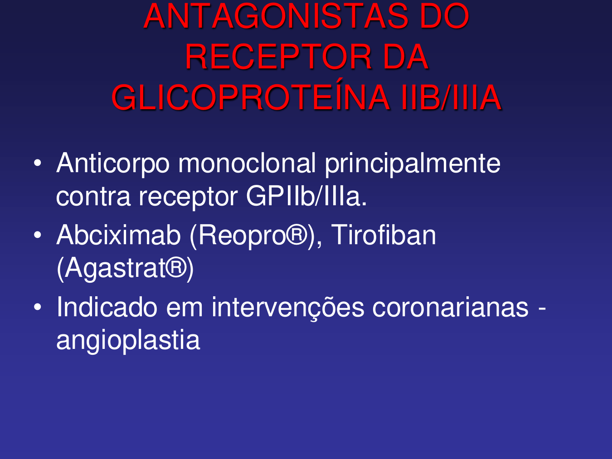
As "horas de ouro" pós-stent: nas 24 horas após a colocação do stent, o paciente vai para a UTI recebendo essa droga em infusão por 24 horas, monitorizado o tempo todo — porque o risco de retrombose (o stent fechar) e de hemorragia é máximo nesse período. É um equilíbrio fino entre não deixar trombosar e não deixar sangrar.
O local da punção arterial é um fator de risco hemorrágico real. Para fazer o cateterismo, fura-se uma artéria — e artéria é vaso de parede grossa, sob pressão alta. Depois do procedimento, o paciente está antiagregado/anticoagulado, então o ponto da punção pode sangrar muito. Regras práticas que o professor enfatiza:
- Punção femoral: exige compressão prolongada, com dispositivo tipo "morsa"/peso sobre o local.
- Punção radial: exige compressão forte por pelo menos 5 minutos.
A lógica: a artéria de parede grossa ficou furada e continua sob pressão elevada — sem compressão adequada, forma-se hematoma ou hemorragia franca.
Heparina: o anticoagulante de ação rápida que bloqueia a trombina
Agora mudamos de sistema: dos antiplaquetários (Sistema 1) para os anticoagulantes, que atacam a cascata da coagulação (Sistema 2). A heparina é um anticoagulante de ação antitrombótica: ela impede a transformação da protrombina em trombina. Sem trombina formada, não há conversão de fibrinogênio em fibrina — e sem fibrina, a rede que solidifica o coágulo não se forma.
A descoberta é uma curiosidade que ajuda a fixar o conceito: a heparina foi achada a partir de um extrato hepático de cachorro misturado ao sangue do próprio cachorro — observou-se que esse sangue não coagulava, indicando que havia algo no fígado capaz de bloquear a coagulação. Daí o nome (do grego hepar, fígado).
Aplicações clínicas: é droga de primeira escolha quando se quer efeito rápido. Indicações dos slides: prevenção da trombose venosa profunda, embolismo pulmonar, prevenção de trombos venosos na fase aguda do IAM, redução da retrombose arterial coronariana após trombolítico, aparelhos de circulação extracorpórea, e em gestantes com válvula prostética ou tromboembolismo (porque a heparina não atravessa a barreira placentária — ponto de prova). O professor cita ainda angina instável.
O mnemônico MONABICHE — o protocolo do paciente com síndrome coronariana aguda (SCA). Cada letra é uma droga que entra na sala de emergência:
- Morfina · Oxigênio · Nitrato · AAS (aspirina) · Betabloqueador · IECA · Clopidogrel · Heparina · Estatina.
Repare como o protocolo reúne quase tudo deste capítulo (AAS, clopidogrel, heparina) com fármacos de outras seções (betabloqueador e nitrato de §04; IECA de §02; estatina de §07). O professor observa que os protocolos vão acrescentando medicamentos com o tempo — por isso o mnemônico cresce.
Heparina não-fracionada × heparina de baixo peso molecular
Há dois tipos no mercado, e a diferença entre eles cai bastante:
| Característica | Não-fracionada | Baixo peso molecular (HBPM) |
|---|---|---|
| Administração | IV (e SC) | Subcutânea (SC) |
| Início de efeito | Rápido (~60 min após SC) | Mais lento (~4 h após SC) |
| Meia-vida | ~2 horas | ~4 horas |
| Local de tratamento | Intra-hospitalar (obrigatório) | Hospital ou ambulatorial |
| Monitorização | Sim — TTPa diário | Geralmente dispensa monitorização |
| Sangramento | Maior | Um pouco menor (< 3% dos tratados) |
O exemplo clínico que o professor usa: uma gestante com alto risco de trombose pode receber a HBPM em casa, com uma injeção subcutânea no abdome — algo impossível com a não-fracionada, que precisa de ambiente hospitalar e bomba IV. O enoxaparina (Clexane) é a HBPM mais conhecida; ela costuma deixar a região da aplicação roxa (equimose por hemorragia local), o que é esperado.
Orgulho nacional na enoxaparina. O professor destaca que a heparina de baixo peso molecular tem origem em trabalhos de um brasileiro — o professor Carl Peter (von Dietrich), titular de bioquímica da Unifesp — que estudou uma substância anticoagulante encontrada na casca de caranguejo no Ceará. O nome comercial mais conhecido é Clexane. É o tipo de detalhe que o professor adora cobrar como curiosidade que vira pergunta.
Ressalva sobre a curiosidade do professor: a enoxaparina (Clexane) comercial é derivada de heparina suína (mucosa intestinal de porco) — a heparina e suas HBPM são, na prática, obtidas dessa fonte. O grupo do prof. Carl Peter (von Dietrich) é referência mundial em heparinoides de invertebrados marinhos (glicosaminoglicanos análogos, inclusive de crustáceos), mas isso é pesquisa sobre análogos, e não a origem industrial do Clexane. Vale como curiosidade histórica, não como fonte do fármaco em uso.
Heparina: efeitos adversos, antídoto e monitorização pelo TTPa
Efeitos adversos: o principal é o sangramento (um pouco menor com a HBPM, < 3% dos tratados). Há também a trombocitopenia induzida por heparina — queda das plaquetas que ocorre 5 a 10 dias após o início do tratamento, com incidência menor nas de baixo peso. E ainda: elevação de transaminases (ALT/AST) — em geral transitória e sem lesão hepática clínica (não é hepatotoxicidade verdadeira); osteoporose (no uso prolongado); e inibição da síntese de aldosterona, que pode causar hipercalemia (hiperpotassemia) — atenção redobrada em uso prolongado, idosos, diabéticos e nefropatas.
Antídoto: o controle do sangramento se faz pela interrupção da droga + administração do antídoto, o sulfato de protamina (revertido por infusão IV de protamina). Memorize esse par: heparina ↔ protamina.
Complemento sobre a trombocitopenia induzida por heparina (HIT) citada em aula: a forma clinicamente vital é a HIT tipo II (imune), que aparece em 5 a 10 dias e é paradoxalmente pró-trombótica — anticorpos anti-PF4/heparina ativam plaquetas e o risco predominante é trombose, não sangramento. A conduta é suspender toda heparina (inclusive a de baixo peso) e trocar por anticoagulante não-heparínico (ex.: argatroban, fondaparinux); a protamina não trata a HIT, e não se deve repor plaquetas de rotina.
A lógica do TTPa — por que se monitora a heparina não-fracionada. O TTPa (tempo de tromboplastina parcial ativado) é feito diariamente no paciente em heparina IV. Interprete assim:
- TTPa muito elevado → paciente muito anticoagulado → risco de hemorragia → diminuir a dose.
- TTPa muito curto → paciente pouco anticoagulado → risco de trombo → aumentar a dose.
A frase que resume o dilema de todo anticoagulante: "Se você der demais, o cara morre de hemorragia; se der de menos, o cara faz um trombo e morre também." Monitorar por um parâmetro laboratorial é o que permite maximizar a ação e minimizar o efeito indesejável — manter o paciente na faixa estreita entre os dois abismos.
Varfarina (Marevan): o "vovôzão" da turma, antagonista da vitamina K
A varfarina (Marevan) é um cumarínico (derivado da hidroxicumarina) e age como antagonista da vitamina K. Para entender, você precisa entender a vitamina K: ela é lipossolúvel e é responsável pela síntese hepática de quatro fatores de coagulação — II (protrombina), VII, IX e X. Ao antagonizar a vitamina K, a varfarina impede a formação desses quatro fatores → menos fatores → efeito anticoagulante. A falta de vitamina K, por si só, já predispõe a hemorragia.
De onde vem a vitamina K? A maior fonte do organismo é a microbiota intestinal — as bactérias do nosso intestino produzem vitamina K para nós, numa simbiose. O professor resume com a analogia: "a gente dá casa, comida e roupa lavada para elas, e elas produzem vitamina K pra gente." A fonte alimentar clássica são as folhas verde-escuras (couve). Isso explica três situações clínicas de carência de vitamina K em que se faz reposição:
- Recém-nascido: o intestino ainda não foi colonizado por bactérias → falta vitamina K → dá-se Kanakion no berçário para prevenir doença hemorrágica do RN.
- Antibioticoterapia prolongada: destrói a microbiota → cai a produção de vitamina K → repõe-se.
- Quimioterapia: destrói o epitélio digestivo e células de alta atividade mitótica, comprometendo o trato → também leva à carência.
Varfarina: farmacocinética e o problema das interações
A varfarina tem absorção oral, com pico plasmático em 2–8 h, é 99% ligada a proteínas plasmáticas (à albumina), tem meia-vida longa (25–60 h), é inativada no fígado e atravessa a placenta. Esse perfil farmacocinético é a raiz de seus problemas:
Por que as interações são tão perigosas: como 99% da droga está grudada na albumina, só ~1% (a fração livre) está ativa em circulação. Se você introduz outro fármaco que também se liga fortemente às proteínas — por exemplo um AINE, ou as sulfonilureias (hipoglicemiantes orais, que reaparecem em §08) — ele desloca a varfarina da albumina. A fração livre sobe abruptamente, e o efeito anticoagulante dispara, com risco de sangramento. Por outro lado, alimentos ricos em vitamina K (couve, folhas verdes) antagonizam a varfarina e reduzem seu efeito. É um campo minado de interações com medicamentos e alimentos.
"A varfarina é uma porcaria" — mas por quê, exatamente? O professor chama a varfarina de "vovôzão da turma" (mais de 50 anos de uso) e diz que "é uma porcaria" — não por não funcionar, mas porque interage com um monte de medicamento e com alguns alimentos, o que torna a anticoagulação instável e imprevisível. O retrato do manejo difícil: um paciente com INR 5–6 (manchas roxas, prestes a sangrar) → você baixa a dose → uma semana depois o INR despenca para 1 (agora ele pode trombosar) → você aumenta a dose. Esse vai-e-vem exige monitoramento semanal ou quase diário, especialmente na transição do anticoagulante parenteral (heparina) para o oral, em que é preciso sobrepor as duas drogas por um período. É o oposto da praticidade dos DOACs que veremos a seguir.
Varfarina: monitorização por TP/INR e os alvos de prova
A varfarina é monitorada pelo tempo de protrombina (TP), expresso de forma padronizada como INR (razão normalizada internacional). O INR normal é 1. Quanto mais alto o INR, mais anticoagulado (mais "fino") está o sangue. Os alvos terapêuticos são valores que o professor cobra explicitamente:
| Indicação | INR alvo |
|---|---|
| INR normal (sem anticoagulação) | 1 |
| Tromboembolismo venoso / Fibrilação atrial | 2,0 a 3,0 |
| Válvula cardíaca mecânica | 2,5 a 3,5 (mais alto) |
Por que a válvula mecânica exige um INR mais alto? Porque a superfície metálica é altamente trombogênica — precisa de mais anticoagulação para não formar trombo na prótese. O custo disso: o paciente fica tão "fino" que uma simples coleta de sangue pode gerar sangramento prolongado no braço. Conecte com o que vimos: prótese mecânica → varfarina com INR 2,5–3,5; prótese biológica → não precisa.
Varfarina é TERATOGÊNICA — nunca em gestante. A varfarina atravessa a barreira placentária e é teratogênica → é contraindicada na gravidez. E aqui está a ironia clínica: a própria gestação já aumenta o risco de tromboembolismo, então muitas grávidas precisam de anticoagulação. A solução: usa-se a heparina de baixo peso molecular, que não atravessa a placenta (não é teratogênica) e tem risco hemorrágico mais manejável. Decore o par: gestante que precisa anticoagular → HBPM, jamais varfarina. Outros pontos: a varfarina tem início de ação lento, sofre variações genéticas no metabolismo (exigindo ajuste individual de dose) e pode causar necrose de pele. Seu antídoto é a vitamina K.
Bloco de antídotos — a sequência que cai em prova
O professor intercala um bloco de antídotos no formato típico de prova. Memorize os pares:
| Intoxicação / fármaco | Antídoto |
|---|---|
| Opioide | Naloxona |
| Benzodiazepínico | Flumazenil |
| Hipertermia maligna | Dantrolene |
| Heparina | Sulfato de protamina |
| Varfarina | Vitamina K |
Observação do professor sobre a hipertermia maligna: ela é desencadeada por anestésicos halogenados (voláteis) e por bloqueadores da junção neuromuscular; o antídoto é o dantrolene. Os dois antídotos da hemostasia que mais importam para este capítulo: protamina para heparina, vitamina K para varfarina. Note de passagem que os DOACs (a seguir) historicamente não tinham antídoto — e isso foi, por anos, um dos motivos pelos quais a varfarina, com seu antídoto conhecido, não foi abandonada (ver a nota de precisão clínica adiante, pois esse cenário mudou).
Novos anticoagulantes orais (DOACs): a geração da dabigatrana, rivaroxabana e apixabana
Os DOACs (anticoagulantes orais diretos) foram criados para resolver o pesadelo da varfarina: eles agem diretamente em um único fator da cascata, têm farmacocinética estável e previsível, dispensam monitorização rotineira por INR e têm poucas interações alimentares. Há duas estratégias de bloqueio:
- Inibidor direto da trombina: a dabigatrana (Pradaxa).
- Inibidores do fator Xa (os "-xabanos"): rivaroxabana (Xarelto) e apixabana (Eliquis).
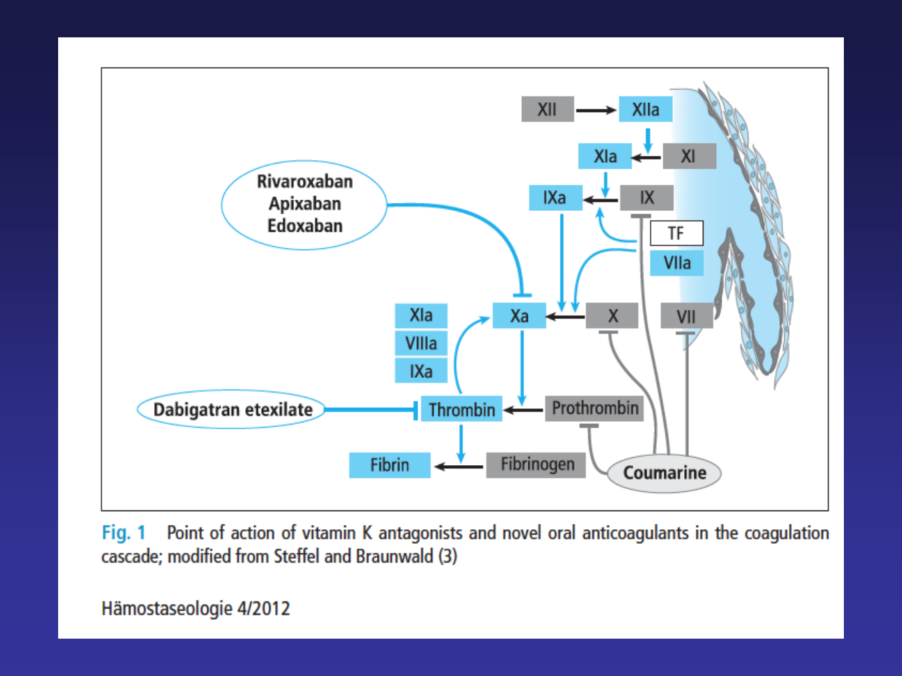
DOACs: o perfil de cada um
Dabigatrana (Pradaxa) — inibidor direto e reversível da trombina. Vantagem: não é metabolizada pelo citocromo P450, então não interage com a maior parte dos fármacos. Porém é substrato da P-glicoproteína (P-gp) → interage com amiodarona (antiarrítmico de §04), rifampicina (do esquema da tuberculose) e quinidina (derivado da quina, usado como antimalárico). Hoje é pouco usada; cuidado em renais crônicos e hepatopatas (eliminação 80% renal).
Apixabana (Eliquis) — inibidor do fator Xa, meia-vida ~12 h, biodisponibilidade não afetada por alimentos (sem restrição de couve). É substrato de P-gp/CYP3A4. Dose citada: 5 mg de 12 em 12 horas.
Rivaroxabana (Xarelto) — inibidor do fator Xa, e o professor a destaca como "a mais importante de todas": foi a primeira do grupo, tem biodisponibilidade não afetada por alimentos e é muito melhor que a varfarina — sem o risco hemorrágico instável, sem a instabilidade farmacocinética. Já tem genérico; ainda não estava no SUS, mas o professor previa sua entrada.
Se os DOACs são tão melhores, por que ainda usamos varfarina? O professor repete esse raciocínio várias vezes — é o ponto de prova do bloco. Três razões:
- Falta experiência de longo prazo com os DOACs em cenários complexos, como a fibrilação atrial do idoso e a insuficiência cardíaca — situações em que ainda se confia mais na velha conhecida.
- A varfarina é muitíssimo conhecida (mais de 50 anos) — sabemos exatamente como ela se comporta.
- A varfarina TEM ANTÍDOTO (vitamina K) — historicamente um trunfo decisivo, pois sangramentos podiam ser revertidos. Os DOACs são novos e mais caros.
A moral: "melhor no papel" não é o mesmo que "melhor para todo paciente". Conhecimento acumulado, custo e reversibilidade pesam na decisão clínica.
Atualização sobre dois pontos ditos em aula. (1) Os DOACs hoje TÊM antídotos específicos: idarucizumabe (reverte a dabigatrana, aprovado por FDA/EMA/ANVISA) e andexanet alfa (reverte os inibidores do fator Xa, como rivaroxabana e apixabana). Ou seja, a reversibilidade já não é exclusividade da varfarina — os motivos que permanecem para usá-la são sobretudo o custo baixo, a familiaridade de décadas e indicações específicas. (2) DOAC NÃO substitui a varfarina em prótese valvar mecânica: nesse cenário o DOAC é contraindicado (o ensaio RE-ALIGN, com dabigatrana, foi interrompido por excesso de eventos trombóticos e hemorrágicos), assim como na estenose mitral reumática moderada/grave. Para prótese mecânica, o padrão é apenas varfarina, com INR-alvo. Os DOACs são opção na fibrilação atrial não-valvar e no tromboembolismo venoso.
Fibrinolíticos (trombolíticos): desmanchar o trombo que já se formou
Chegamos ao Sistema 3. Os fibrinolíticos (ou trombolíticos) não previnem o trombo — eles dissolvem um trombo já formado. A cascata fibrinolítica, lembre, é iniciada ao mesmo tempo que a coagulação; sua finalidade natural é digerir a fibrina e dissolver o coágulo depois que o sangramento foi bloqueado. A plasmina formada dentro do coágulo é a faca que corta a fibrina. Os fibrinolíticos turbinam esse processo: ativam o plasminogênio → plasmina, e a plasmina dissolve o trombo. O uso clássico é o IAM — desentupir a coronária ocluída e salvar o miocárdio antes que ele necrose.
Estreptoquinase × alteplase: por que a escolha mudou
A estreptoquinase foi o primeiro fibrinolítico. É uma proteína extraída de cultura de estreptococos (um biofármaco — daí o nome). Ela ativa o plasminogênio total, tanto o que está dentro do coágulo quanto o circulante no sangue. Administrada por via EV, reduz a mortalidade no IAM, e esse benefício é somado ao da aspirina. Mas tem um defeito grave que muda toda a conduta — veja o destaque abaixo.
A alteplase (e a duteplase) é o ativador do plasminogênio tecidual (t-PA) recombinante. A diferença crucial: a alteplase é mais seletiva para o plasminogênio que está ligado à fibrina (dentro do coágulo) do que para o plasmático/circulante — por isso é dita "seletiva para o coágulo". Consequência prática: agindo mais no coágulo e menos no sangue todo, ela tem menor risco de hemorragia sistêmica. Tem meia-vida curta e é administrada EV. É a usada hoje no hospital para fibrinólise. Efeitos adversos dos fibrinolíticos: sangramentos, hemorragia intestinal e AVC hemorrágico (AVCh).
A estreptoquinase não deve ser reusada. O professor marca isso com força — "só uma vez na vida." Por ser uma proteína estranha (de estreptococo), a primeira exposição faz o organismo produzir anticorpos contra ela; numa reexposição, esses anticorpos neutralizam o fármaco (perda de eficácia) e aumentam o risco de reações alérgicas e hipotensão. Atenção ao conceito correto: não é uma doença autoimune — é simplesmente anticorpo dirigido contra a proteína exógena. Por isso, em paciente previamente exposto, prefere-se um fibrinolítico fibrino-específico (alteplase/tenecteplase). Esse é um dos grandes motivos pelos quais a alteplase (recombinante, humana, sem esse risco de anticorpo) a substituiu na prática hospitalar.
Ressalva sobre o desfecho dramatizado em aula ("a segunda dose mata"). O problema clínico predominante da reexposição à estreptoquinase é a perda de eficácia por neutralização pelos anticorpos, somada a maior risco de reações alérgicas e hipotensão. Anafilaxia grave existe, mas é incomum (na ordem de menos de 0,5%) — não é a regra nem um desfecho obrigatório. A recomendação prática é evitar a reexposição (os títulos de anticorpo permanecem altos por meses a anos), preferindo um fibrinolítico fibrino-específico; "uma vez na vida" é a forma simplificada de fixar essa regra.
Fibrinolíticos: o "questionário" de contraindicações e a janela terapêutica
Antes de fibrinolisar qualquer paciente, ele passa por um "questionário/quiz" de contraindicações — e a regra de ouro é simples: qualquer fator de risco de sangramento contraindica. Faz sentido: você está prestes a dissolver coágulos no corpo inteiro de alguém que já tem propensão a sangrar. As contraindicações listadas:
- Sangramento interno ativo;
- História de AVC hemorrágico (AVCh);
- Gravidez;
- Hipertensão mal controlada (risco de romper um vaso cerebral → AVC hemorrágico);
- Cirurgia ou trauma maior em período menor que 2 semanas;
- Hemofilia (o professor diz "nunca").
Se o paciente é contraindicado à fibrinólise, a saída é a revascularização (endovascular, isto é, angioplastia, ou cirurgia de tórax aberto) — ou ele morre, porque não compensa fibrinolisar quem tem alto risco hemorrágico.
A JANELA TERAPÊUTICA da fibrinólise — declarada "muito importante". O professor citou que a alteplase só é efetiva para dissolver o trombo até cerca de 8 horas após o início da angina/dor: depois disso, o trombo já está "envelhecido" e organizado, a efetividade de dissolvê-lo cai muito, e sobram apenas os efeitos indesejáveis (o risco de sangramento). Nas palavras do professor: "Mais que isso, só sobram os efeitos indesejáveis." A lição clínica que ele quer fixar: tempo é músculo — quanto mais cedo, melhor; passada a janela, fibrinolisar só faz mal. (Veja a nota de precisão clínica abaixo: a diretriz atual define a janela formal em 12 horas.)
Caso real do professor: um boxeador da Bahia foi ao oftalmologista do HC tratar uma hemorragia ocular, sentiu dor precordial, atravessou a rua até o InCor e foi triado para a alteplase. A estagiária Giovana, lembrando da regra, questionou e excluiu corretamente o paciente do tratamento: alguém com um processo hemorrágico ativo (hemorragia ocular) NÃO pode receber fibrinolítico. O "quiz" de contraindicações salvou a vida dele.
Correção importante sobre o número citado em aula. A janela formal da fibrinólise no IAM com supra de ST é de até 12 horas do início dos sintomas (ESC, ACC/AHA, SBC) — não 8 horas. O benefício é máximo nas primeiras 2 a 3 horas ("golden hour"), mas a indicação vai até 12 h, e a reperfusão pode ainda ser considerada entre 12 e 24 h se houver isquemia/dor persistente e a angioplastia primária não estiver disponível. Ensinar "8 horas" arriscaria negar tratamento a um paciente entre 8 e 12 h de evolução, que ainda se beneficia. Atenção: a alteplase também é o trombolítico do AVC isquêmico, onde a janela é diferente (até 4,5 h). O espírito da fala do professor — "tempo é músculo, quanto mais cedo melhor" — continua valendo; apenas o limite correto é 12 h.
Costurando tudo: como as três classes se encaixam na clínica
Para não perder o fio, junte as peças num cenário único — um paciente com IAM, a vitrine deste capítulo:
- A placa rompe → ativa plaquetas e coagulação → aterotrombose oclui a coronária (a fisiopatologia do início).
- Dá-se AAS (antiplaquetário, inibe tromboxano) e clopidogrel (antiplaquetário, bloqueia ADP) para desarmar as plaquetas; soma-se heparina (anticoagulante, bloqueia a trombina) — tudo isso está no MONABICHE.
- Para reabrir o vaso, ou se faz fibrinólise com alteplase (dentro da janela terapêutica — até 12 h pela diretriz atual; o professor citou 8 h —, e só se passar no quiz de contraindicações), ou se faz angioplastia com stent — e aí entram a dupla antiagregação e, no pós-stent, o antagonista GP IIb/IIIa por 24 h na UTI.
- Na alta, se houver indicação de anticoagulação crônica: na fibrilação atrial não-valvar, entra a varfarina (com INR alvo) ou um DOAC; já na prótese mecânica, é apenas varfarina (DOAC é contraindicado nesse cenário — ver nota de precisão clínica do bloco dos DOACs).
Conexões com outras seções: este capítulo se entrelaça com §04 (Antianginosos), de onde vêm os nitratos e betabloqueadores do MONABICHE, e com §05 (Drogas Vasoativas), pois o paciente que choca no IAM precisa das drogas da UTI. A estatina do protocolo aparece em §07 (Dislipidemias), e o IECA em §02 (Anti-hipertensivos). A interação da varfarina com sulfonilureias liga este capítulo a §08 (Hipoglicemiantes) — ambas competem pela albumina. E a amiodarona que interage com a dabigatrana via P-gp é o antiarrítmico de §04.
- → Três sistemas da hemostasia: plaquetas (trombo plaquetário / hemostasia primária) → cascata de coagulação (fibrina solidifica / hemostasia secundária) → fibrinólise (plasmina dissolve). Plaqueta NÃO é célula: é fragmento citoplasmático com glicoproteínas e grânulos.
- → Antiplaquetários atacam a plaqueta: AAS inibe a COX → sem tromboxano → não agrega (antiagregante 100 mg/dia vs analgésico 500 mg 6/6h); clopidogrel/ticlopidina bloqueiam o receptor de ADP; abciximab/tirofiban bloqueiam o GP IIb/IIIa (UTI pós-stent, 24 h). Stent = dupla antiagregação (AAS + clopidogrel).
- → Heparina impede protrombina→trombina; rápida, IV; não-fracionada (TTPa, intra-hospitalar, t½ 2 h) vs HBPM/enoxaparina (SC, ambulatorial, t½ 4 h, segura na gestante). Antídoto = protamina. Trombocitopenia 5–10 dias.
- → Varfarina antagoniza a vitamina K (fatores II, VII, IX, X); 99% ligada a proteínas (interações com AINE/sulfonilureias). Monitorada por TP/INR: normal 1, FA/TEV 2–3, válvula mecânica 2,5–3,5. Antídoto = vitamina K. Teratogênica → nunca em gestante (usar HBPM).
- → DOACs: dabigatrana (Pradaxa, anti-trombina, P-gp: amiodarona/rifampicina/quinidina), rivaroxabana (Xarelto) e apixabana (5 mg 12/12h) inibem o fator Xa; estáveis, sem dieta, sem INR. Varfarina ainda usada por ser conhecida, barata e ter antídoto.
- → Fibrinolíticos: estreptoquinase (de estreptococo, ativa plasminogênio total; não reusar — anticorpos neutralizantes/alergia; anafilaxia grave é incomum); alteplase/t-PA (seletiva para o coágulo, menos hemorragia, usada hoje). Janela da fibrinólise no IAM: até 12 h pela diretriz atual (o professor citou 8 h; benefício máximo nas primeiras 2–3 h).
- → Contraindicações dos fibrinolíticos: qualquer risco de sangramento — sangramento ativo, AVCh prévio, gravidez, HAS descontrolada, cirurgia/trauma < 2 semanas, hemofilia. Se contraindicado → revascularização.
- → Antídotos de prova: opioide→naloxona; benzodiazepínico→flumazenil; hipertermia maligna→dantrolene; heparina→protamina; varfarina→vitamina K.
Dislipidemias
Por que estudar dislipidemia: a doença que mais mata no mundo
Antes de falar de qualquer remédio, você precisa entender contra o que estamos lutando. A aterosclerose — o endurecimento e o entupimento das artérias por placas de gordura — é a principal causa de morte em todo o mundo. Ela é o motor por trás do infarto, do AVC e da doença vascular periférica. E o detalhe cruel: ela evolui em silêncio. Os sintomas só aparecem quando o vaso já está com obstrução importante. Quando o paciente sente, a placa já vem crescendo há anos.
A aterogênese (o processo de formação da placa, cujo protótipo clínico é a doença arterial coronariana — DAC, embora a placa possa surgir em qualquer leito vascular) é um processo inflamatório crônico. Isso é a primeira ideia que precisa colar: não acontece do dia para a noite. É um trabalho lento, demorado, de décadas, e por isso mesmo dá tempo de intervir — se você souber em quem e como agir.
Há uma frase que resume toda a estratégia do tratamento: não existe terapêutica curativa para a DAC. Você não dissolve a placa que já está lá. O que você faz é identificar e corrigir os fatores de risco para impedir que ela cresça. O tratamento invasivo (cateterismo, stent, ponte de safena) só entra quando a obstrução já é severa — e mesmo assim ele não impede a progressão da doença. Quem impede a progressão é o controle dos fatores de risco. Guarde isso: o cirurgião desobstrui um ponto; quem trata a doença é a clínica.
Aterogênese passo a passo: como nasce a placa
Tudo começa com o LDL-colesterol — a lipoproteína de baixa densidade (do inglês Low Density Lipoprotein). Decore o apelido popular: "LDL, logo Deus leva". É o colesterol RUIM. Por quê? Porque todo colesterol transportado pelo LDL é DEPOSITADO na parede das artérias e nos tecidos. O LDL é a lipoproteína de depósito. Onde ele passa, ele larga gordura.
Acompanhe a sequência, que é causa → consequência → manifestação:
- Depósito. As partículas de LDL atravessam o endotélio e se alojam entre as células endoteliais e a lâmina basal (a camada elástica logo abaixo). Esse depósito é facilitado pela disfunção endotelial causada pelos fatores de risco — um endotélio "doente" deixa o LDL penetrar mais fácil.
- Oxidação. Lá dentro, o LDL é oxidado por radicais livres — peróxido de hidrogênio (a água oxigenada) e centenas de outras espécies reativas de oxigênio. O LDL oxidado deixa de ser "gordura nossa" e vira corpo estranho. É essa transformação que dispara o alarme imunológico.
- Inflamação. Os monócitos da corrente sanguínea são atraídos, migram para dentro da parede, viram macrófagos e fagocitam o LDL oxidado. Cheios de gordura, esses macrófagos viram células espumosas (ou esponjosas — parecem esponjas recheadas de lipídio). Aqui começa oficialmente o processo inflamatório.
- Remodelamento. As células musculares lisas migram para a lâmina basal, há lesão endotelial, e a plaqueta — que tem duas propriedades, adesividade (gruda na parede lesada) e agregação (gruda em outras plaquetas) — começa a se acumular. Forma-se uma capa de fibrina por cima e o conteúdo lipídico começa a se organizar em placa.
- Calcificação. Com o tempo o tecido morre, há deposição de cálcio e a placa calcifica. A calcificação ENRIJECE a parede da artéria — ela perde elasticidade e complacência.
É por isso que a hipertensão é fator de ruptura da placa: um vaso calcificado, sem complacência, não absorve o aumento de pressão — ele rompe ou sofre erosão. E quando a placa rompe, expõe-se uma superfície trombogênica: as plaquetas aderem, a fibrina enriquece o coágulo, forma-se um trombo plaquetário que oclui completamente a luz do vaso → isquemia do tecido a jusante. Como o professor resume: "o caso mais grave é sempre quando tem calcificação."
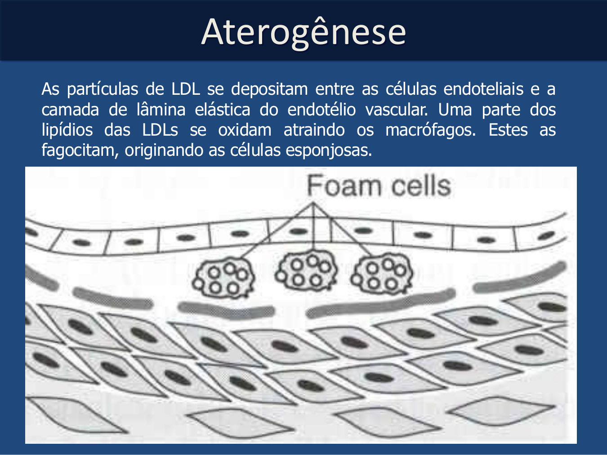
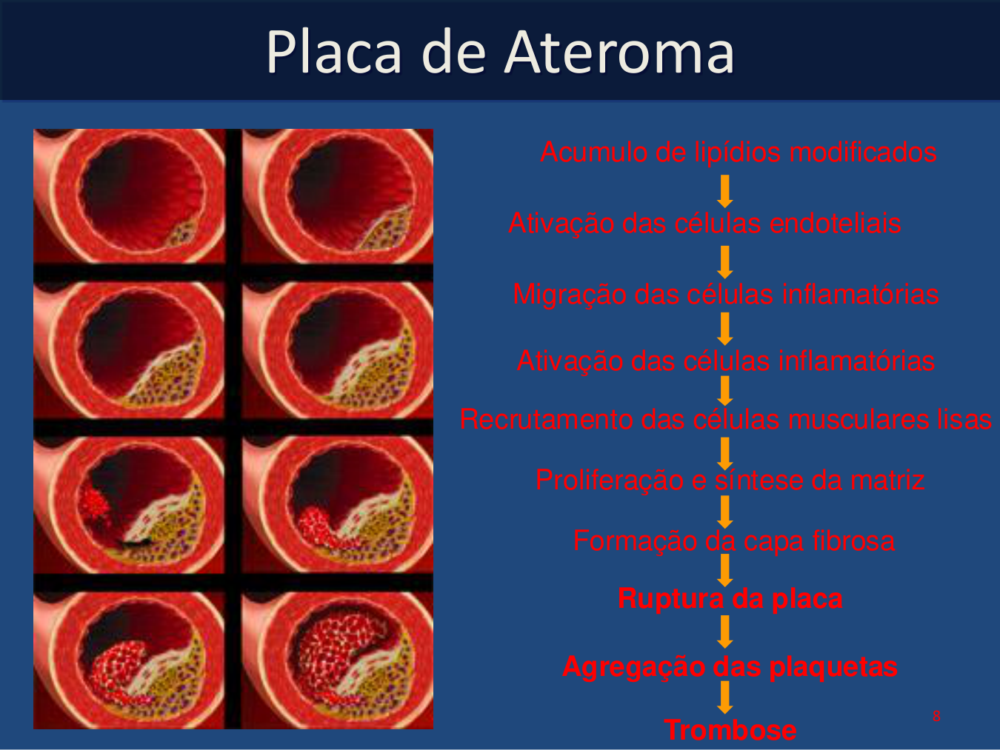
Estima-se que a maioria dos indivíduos com mais de 50 anos já tem alguma placa de ateroma nas coronárias. Mas calma: são placas não funcionais — não interferem significativamente no fluxo. A "grande pegada", segundo o professor, é NÃO DEIXAR a placa aumentar. O objetivo do tratamento não é zerar a placa (impossível), é congelar a progressão. É por isso que toda a terapêutica gira em torno de fatores de risco, e não de "limpar a artéria".
Desfechos da aterosclerose: onde a placa entope, dá o nome da doença
A aterosclerose pode ocorrer em qualquer vaso — e o desfecho depende de onde a placa rompe e entope:
- Coronárias → Doença Arterial Coronariana: angina de peito (quando a placa já estreita o vaso e reduz o fluxo), insuficiência cardíaca, arritmias e, na oclusão total, o infarto agudo do miocárdio (IAM).
- Cérebro → Acidente Vascular Cerebral (AVC) — isquemia em vaso cerebral.
- Membros e periferia → doença vascular periférica (e, em território venoso, fenômenos trombóticos).
A angina, a IC e os antianginosos você já viu em §04 (Digitálicos, Antiarrítmicos e Antianginosos); a fisiopatologia da hipertensão como fator de ruptura conecta com §01 e §02; e o trombo plaquetário que oclui o vaso é exatamente o alvo dos antiagregantes e anticoagulantes de §06. Tratar a dislipidemia é atacar a doença antes de ela virar qualquer um desses desfechos.
As lipoproteínas: LDL deposita, HDL recolhe
Colesterol não circula solto no sangue — ele anda dentro de "caminhões", as lipoproteínas. Você precisa conhecer três:
- LDL (baixa densidade): a lipoproteína de depósito. Leva colesterol para os tecidos e larga na parede arterial. Quanto mais LDL, mais aterogênese. "Logo Deus leva."
- HDL (lipoproteína de ALTA densidade): faz o caminho inverso. Transporta o colesterol de volta para o FÍGADO para ser eliminado junto com os sais biliares. É o colesterol "bom" — o que está sendo recolhido e excretado, não depositado.
- VLDL (very low density lipoprotein, densidade muito baixa): o caminhão dos triglicérides.
Daí a lógica: é melhor ter colesterol transportado pelo HDL (indo embora) do que pelo LDL (sendo depositado). Um raciocínio que parece contraintuitivo, mas é central: é melhor colesterol total alto com HDL alto (está sendo excretado) do que colesterol "normal" com HDL baixo (está sendo depositado). O número total mente; o que importa é para onde o colesterol está indo.
Um detalhe metabólico que explica muita coisa: é mais fácil para o fígado produzir LDL do que HDL. Por isso, quando o colesterol total sobe, na maioria das vezes ele sobe à custa do LDL e ainda derruba o HDL — a pior combinação possível.
Atenção à atualização epidemiológica que o professor fez questão de marcar: antigamente, o HDL baixo era considerado o maior fator de risco cardiovascular. Hoje, quem assumiu esse posto é o DIABETES. Isso reaparece em §08 (Hipoglicemiantes e Insulinoterapia) — o diabético entra direto em prevenção secundária, como veremos adiante. Pegadinha de prova: o maior fator de risco cardiovascular hoje é o diabetes, não o HDL baixo.
Os valores de referência — "decorar número 1"
O professor foi explícito: "vou dar os valores de normalidade, decorar número 1" e "cai na prova, vou cobrar". Então memorize a tabela abaixo. São os valores desejados no perfil lipídico do adulto.
| Parâmetro | Valor desejado | Observação |
|---|---|---|
| Colesterol total (CT) | < 200 mg/dL | "Ótimo" só para jovem saudável |
| LDL-colesterol | < 100 mg/dL | O alvo causal a ser atacado |
| Triglicérides (TG) | < 150 mg/dL | > 500 = muito alto |
| HDL-colesterol | quanto MAIOR, melhor | Inverso dos demais |
Repare na pegadinha do HDL: nele a lógica se inverte. Para CT, LDL e TG, "alto é ruim". Para o HDL, alto é bom — quanto mais HDL, mais colesterol indo embora.
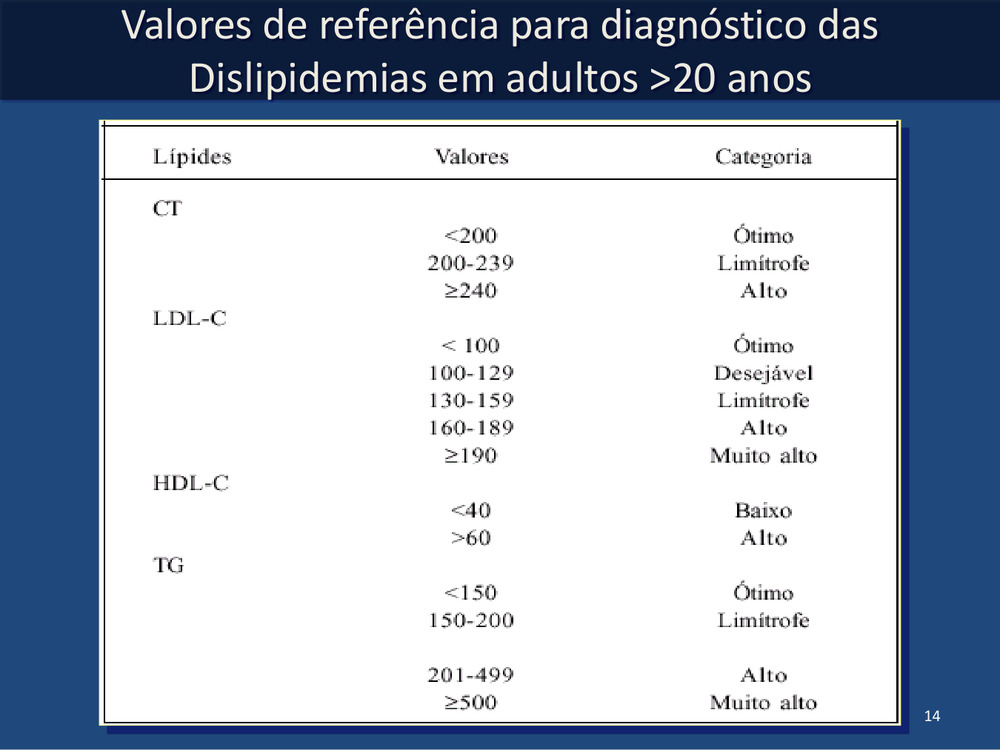
O raciocínio mais importante de toda a aula, repetido várias vezes: "200 é ótimo apenas para vocês, que são jovens e saudáveis. Para o indivíduo que já tem doença arterial, o valor ótimo do colesterol é o MENOR POSSÍVEL." Para quem já tem placa, 200 já não é bom. É exatamente por isso que esse paciente usa estatina de uso contínuo. O erro do "médico que dá uma besteira por aí" é tratar o doente coronariano como se 199 fosse meta cumprida. Não é. No coronariopata, o alvo é empurrar o LDL para baixo o quanto der.
Triglicérides: a "doença do gordinho", a maionese circulante e a pancreatite
Enquanto o colesterol é a estrela da aterogênese coronariana, os triglicérides têm uma história à parte. O professor os chama de "doença do obeso, do gordinho" — e, na sua explicação didática, liga-os ao excesso alimentar, sobretudo aos CARBOIDRATOS. Siga a bioquímica que ele usa: glicose em excesso → acetil-CoA → ácidos graxos → esterificação com glicerol → triglicéride. O glicerol é um triol (tem 3 hidroxilas), então a montagem é progressiva: monoglicerídeo → diglicerídeo → triglicerídeo (também chamado triacilglicerol).
Refinando a simplificação da aula: os triglicérides do plasma têm dupla origem — (1) exógena, dos quilomícrons, vinda da gordura da dieta (não dos carboidratos); e (2) endógena, do VLDL hepático. A conversão de carboidrato em ácido graxo no fígado (lipogênese de novo) existe e contribui, mas não é a fonte "fundamental" dos TG na maioria das pessoas. O ponto correto a guardar: o excesso calórico — incluindo carboidrato em excesso — estimula a produção hepática de VLDL e, com isso, eleva os triglicérides.
Esse triglicéride é estocado no citoplasma do adipócito. Mas o professor faz questão de avisar: ele "não fica só na pochete". Quando sobra, extravasa e invade vísceras, fígado e coronárias — todos os tecidos. Por isso o triglicéride TAMBÉM é aterogênico, apesar de ser historicamente pouco valorizado frente ao colesterol.
O risco mais temido da hipertrigliceridemia, porém, não é nem o coração: é a pancreatite. O professor define a pancreatite como uma doença "bem democrática: tanto mata o idoso quanto mata o jovem", de alta mortalidade. Por isso ele destaca o limiar de 500 mg/dL como o ponto em que o objetivo passa a ser prevenir pancreatite com fibrato — valor que o próprio professor estranha, achando que deveria intervir antes.
Ressalva sobre o "só trata acima de 500" dito em aula: esse limiar é o ponto em que a prioridade passa a ser prevenir pancreatite (TG ≥ ~500 mg/dL → fibrato + dieta rigorosa, ± ômega-3 em altas doses). Não significa "não tratar" abaixo de 500. Na faixa de TG 150–499 mg/dL, o risco predominante é cardiovascular, e a conduta (SBC/ADA) é orientada pelo risco CV global: o alvo terapêutico é o LDL/colesterol não-HDL, e a base é estatina + mudança de estilo de vida. Um paciente de alto risco CV com TG de 300 deve, sim, ser tratado.
O caso pessoal que ninguém esquece: o triglicéride do professor chegou a 650 mg/dL. Nas palavras dele: "eu não tinha mais plasma, eu tinha maionese circulante" — isso é a lipemia, o plasma turvo de tanta gordura. A medicina do trabalho o chamou, e ele teve que tomar medicamento — um fibrato (Lipidil / ciprofibrato / fenofibrato) — porque só dieta seria lento demais. Lição clínica embutida: quando o TG está estratosférico, dieta sozinha não dá conta no tempo necessário; entra fármaco.
Classificação laboratorial das dislipidemias
Com base no perfil lipídico, as dislipidemias se classificam em quatro padrões. Essa classificação é puramente laboratorial — descreve o que o exame mostra:
| Tipo | O que está alterado |
|---|---|
| Hipercolesterolemia isolada | Colesterol total ↑ (geralmente à custa de LDL ↑); TG normal |
| Hipertrigliceridemia isolada | TG ↑ (com VLDL ↑); colesterol normal |
| Dislipidemia mista | Colesterol E triglicérides aumentados |
| HDL baixo isolado | Já é dislipidemia por si só, mesmo com os demais normais |
Note o quarto item: HDL baixo, sozinho, já configura dislipidemia — não precisa de mais nada alterado.
Como o laboratório monta o perfil lipídico
O perfil lipídico dosa 4 parâmetros, mas só mede 3 diretamente. O laboratório dosa diretamente o CT, o TG e o HDL. A partir do TG, estima-se o VLDL; e o LDL é calculado por diferença (matemática), não medido. Por isso o jejum é imprescindível — sobretudo para TG e HDL, que se alteram com a refeição recente (idealmente 12–24h de jejum, evitando exercício nas 3h anteriores e estase venosa na coleta).
Classificação etiológica: 75% é fábrica própria, só 25% vem do prato
Aqui está um dos conceitos mais importantes para entender o tratamento: 75% do colesterol do corpo é ENDÓGENO (produzido por nós mesmos — o fígado é o grande produtor, mas também epitélio, trato gastrointestinal, gônadas e adrenais, que usam colesterol como precursor de hormônios e na composição de membranas). Apenas 25% vem da dieta.
E há autorregulação: a pessoa "normal" que come mais que esses 25% produz menos dos 75% — a síntese se ajusta para baixo. Isso explica dois paradoxos que o professor adora:
- O gordinho sedentário com colesterol baixo — ele regula bem a síntese, então mesmo comendo mal não sobe muito.
- O atleta magro e saudável com colesterol "na lua" — geneticamente ele produz mais que os 75%, e nenhuma dieta conserta isso. É a dislipidemia genética/familiar. "Por que Deus não gosta dele?", brinca o professor.
Daí a divisão etiológica fundamental:
- Dislipidemia PRIMÁRIA = causa genética (familiar; acomete vários membros da mesma família).
- Dislipidemia SECUNDÁRIA = consequência de outra doença, de medicamento ou de hábitos de vida.
Dislipidemias secundárias: doenças, hábitos e medicamentos
São três os grupos de causa secundária. Vamos por partes.
1) Secundária a DOENÇAS
| Doença | Efeito no perfil lipídico |
|---|---|
| Diabetes | ↑ TG e ↓ HDL — por resistência/deficiência insulínica, que ↑ a produção hepática de VLDL e ↓ o clearance pela lipase lipoproteica |
| Hipotireoidismo | ↑ colesterol e TG; HDL pode ou não cair |
| Doenças renais (síndrome nefrótica, IRC) | ↑ colesterol e TG; não altera o HDL |
| Hepatopatias colestáticas | ↑↑ MUITO o colesterol (TG sobe pouco) |
| Obesidade | ↑ colesterol e TG (mais TG) |
| Anorexia nervosa | ↑ colesterol (o corpo compensa a falta dos 25% da dieta) |
| Bulimia / alcoolismo | ↑ os dois (absorve muita glicose; metabolismo glicídico é mais rápido que o proteico) |
O caso da colestase merece destaque porque é puro raciocínio fisiológico: lembre que o colesterol é eliminado via HDL junto aos sais biliares. Se a doença obstrui a liberação da bile (colestase), você perde a via de eliminação do colesterol → ele se acumula e sobe muito. Como o TG não usa essa rota, sobe pouco. Isto conecta direto com a fisiologia do HDL que vimos acima.
2) Secundária a HÁBITOS de vida
O tabagismo derruba o HDL. O etilismo aumenta o HDL. Daí a ironia do professor: "para de fumar e continua bebendo, o perfil melhora — só que não". O álcool sobe o HDL, mas todo o resto da conta (TG, fígado, pâncreas) piora.
Dislipidemia secundária a medicamentos
Vários fármacos comuns mexem no perfil lipídico — e isso importa porque você prescreve esses remédios:
- Diuréticos (tiazídicos, vistos em §03): ↑ TG.
- Beta-bloqueadores (vistos em §02 e §04): ↑ TG e ↓ HDL — o professor resume como "arruma de um lado, piora de outro". Você protege o coração, mas piora o lipidograma.
- Corticoides e contraceptivos hormonais: ↑ colesterol e TG.
- Anabolizantes ("maromba"): aumentam muito.
- Estrógeno / progestágeno (contraceptivos), isotretinoína, ciclosporina / tacrolimus (imunossupressores de transplante) e inibidores de protease (antivirais, ↑ muito o TG).
Pegadinha clínica de ouro: contraindica-se o contraceptivo hormonal oral em mulheres com doença cardíaca ou hipertensas — porque aumenta muito o risco cardiovascular. Regra prática que o professor martelou: mulher acima de 35 anos e hipertensa NÃO pode tomar contraceptivo hormonal oral. Some hipertensão + contraceptivo + (eventual tabagismo) e você tem uma receita de evento trombótico.
Caso emblemático da isotretinoína (Roacutan), um análogo da vitamina A: é o único medicamento que trata a acne grau 4 (acne com risco de cicatriz definitiva). A dermatologia hoje a usa mais precocemente — antes, o costume de tratar com antibiótico (claritromicina, tetraciclina) só gerava resistência bacteriana, reinfecção e piora. Mas a isotretinoína tem dois perigos graves: é hepatotóxica (não pode beber álcool durante o uso — risco de hepatite fulminante / insuficiência hepática) e altamente TERATOGÊNICA. Por isso a paciente faz teste de gravidez antes, durante e 1 mês após o tratamento — e aqui está o raciocínio fino do professor: o teste não é para "flagrar" a gravidez, é para REFORÇAR psicologicamente que ela não pode engravidar, dada a gravidade da teratogenia.
Marcadores de risco: PCR de alta sensibilidade e companhia
Além do lipidograma, existem novos marcadores de risco. O principal na clínica hoje é a PCR de alta sensibilidade (PCR-as) — um marcador inflamatório usado na estratificação de risco cardiovascular. Na investigação do paciente com dor torácica, ela pode ser pedida junto com as enzimas cardíacas dentro do conjunto de exames.
O grande "porém" da PCR-as: ela é sensível, mas não seletiva. Tem muitos falso-positivos / excludentes — eleva-se em fumantes, diabéticos, portadores de osteoartrite/artrose, gota, mulheres em reposição hormonal, usuários de AAS e anti-inflamatórios, e em qualquer infecção. Isolada, ela não serve como marcador de risco — precisa do contexto clínico.
Outros marcadores citados, com a ressalva honesta da evidência:
- Homocisteína: aminoácido do metabolismo da metionina. Sua elevação associa-se a disfunção endotelial, trombose e maior gravidade da aterosclerose — mas não há evidência de que seja fator de risco isolado.
- Lipoproteína(a) — Lp(a): associa-se a eventos cardiovasculares, porém não há provas de que reduzi-la reduza o risco.
- Fibrinogênio: fator trombogênico, também citado entre os marcadores.
Ressalva importante sobre o que foi dito em aula: a PCR-as não é marcador de lesão/necrose miocárdica aguda — ela é um marcador inflamatório usado para estratificação de risco cardiovascular (prevenção). No paciente com dor torácica e suspeita de infarto/síndrome coronariana aguda, o marcador de necrose miocárdica é a TROPONINA (idealmente de alta sensibilidade, dosada de forma seriada conforme protocolo). Não se confirma nem se descarta isquemia aguda pela PCR — quem indica necrose é a troponina.
Estratificação de risco: prevenção primária x secundária
A estratificação é feita pelo risco absoluto, e o LDL-c é o fator causal e independente sobre o qual se deve agir para reduzir morbimortalidade. A partir daí, dois cenários:
- Prevenção PRIMÁRIA = a doença ainda não está instalada. Modifica-se os fatores de risco para retardar ou evitar o aparecimento da aterosclerose.
- Prevenção SECUNDÁRIA = a doença já está instalada. O objetivo é reduzir eventos e mortalidade em quem já tem aterosclerose — controle de fatores de risco (baixar pressão, baixar colesterol, controlar diabetes) + terapêutica para evitar a ruptura da placa (antiagregantes/anticoagulantes de §06).
Na prevenção primária, os níveis de risco de desenvolver DAC em 10 anos são:
| Nível | Risco de DAC em 10 anos |
|---|---|
| Baixo | < 10% |
| Médio | 10–20% |
| Alto | > 20% |
Já a prevenção secundária entra direto, com tratamento medicamentoso, para dois grupos: diabéticos (o maior fator de risco cardiovascular de hoje) e portadores de doença coronariana/aterosclerose estabelecida. O diabético, mesmo sem evento prévio, é tratado com a agressividade de quem já tem doença — conexão direta com §08.
Aviso direto sobre a prova: "Isso aqui eu vou cobrar" — o ESCORE DE RISCO DE FRAMINGHAM. Em contraste, ele disse que as recomendações e níveis específicos de LDL por categoria "não vou cobrar". Então: Framingham cai; tabela de metas detalhadas, não. Foque seu estudo de acordo.
O Escore de Risco de Framingham
O Escore de Risco de Framingham é uma ferramenta que estima o percentual de risco de DAC em 10 anos. Ele pontua um conjunto de variáveis:
- Idade (com pontuação diferente para homem e mulher);
- Colesterol;
- HDL;
- Pressão arterial;
- Diabetes (sim/não).
Soma-se a pontuação, joga-se no nomograma e obtém-se o % de risco em 10 anos. Existem sites gratuitos que calculam automaticamente. O uso clínico inteligente é longitudinal: você registra o escore no prontuário, recalcula nas consultas seguintes e observa se o paciente melhorou, piorou ou se manteve — reforçando a terapêutica e os fatores de risco modificáveis. São exames baratos e simples, ideais para acompanhamento.
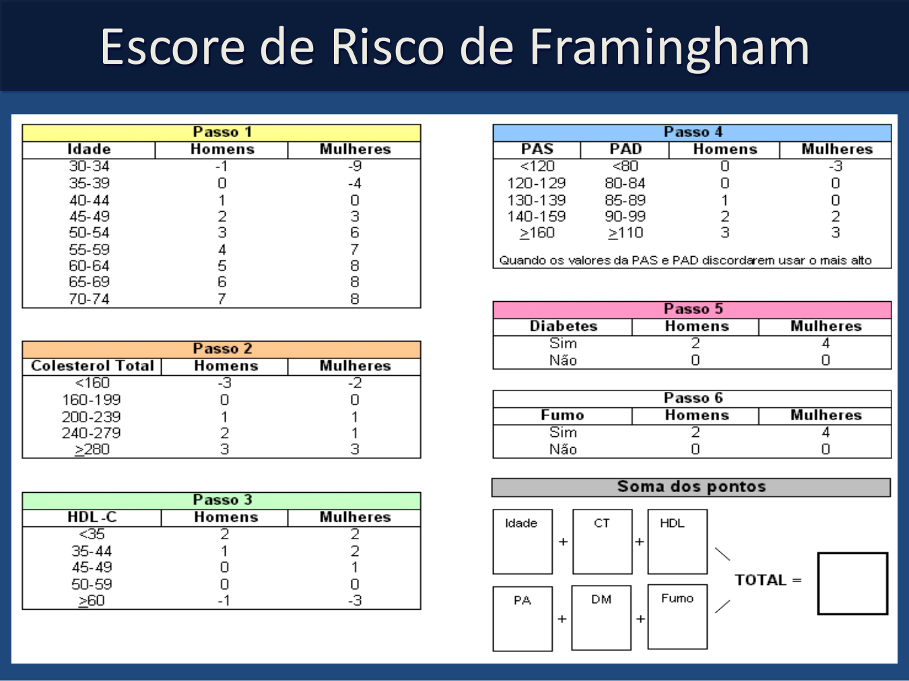
Detalhe fino do escore que o professor destacou: a mulher, no quesito idade, aos 45 anos já pontua 3 e aos 50 já pontua 6, SUPERANDO o homem — e isso coincide exatamente com a menopausa. A regra para guardar: cerca de 10 anos após a menopausa, a mulher se equipara ao homem em risco cardiovascular. A proteção estrogênica acaba, e o risco dispara.
A história da terapia de reposição hormonal (e por que ela NÃO é cardioprotetora)
Episódio importante da medicina baseada em evidências. Há cerca de 30 anos, acreditava-se que a terapia de reposição hormonal (TRH) pós-menopausa seria cardioprotetora — repor o estrogênio para devolver à mulher a proteção que ela perde na menopausa. Usou-se por mais de uma década. Aí descobriu-se que a TRH NÃO protegia nada contra evento cardiovascular — e ainda aumentava o risco de câncer de mama e outras patologias.
O desfecho de mercado é curioso: a indústria parou de vender hormônio para reposição e passou a vender fitoesteroides/esteroides de soja. E a conduta atual é clara: a reposição hormonal só se faz para tratar sintomas do climatério (fogachos, libido, estado geral), NUNCA pensando em cardioproteção. Pegadinha de prova embutida: TRH não é estratégia cardiovascular.
Estatinas: a droga que "mudou o curso da medicina"
Chegamos ao fármaco mais importante da seção. As estatinas são a primeira escolha no tratamento da hipercolesterolemia. O professor conta que um estudo de 1999 "modificou o curso da medicina": mostrou que a atorvastatina, em pacientes com DAC, reduziu quase 40% o risco de evento isquêmico (o professor cita "34 a 40%"; o slide referencia o ensaio AVERT, no qual a atorvastatina reduziu 36% a incidência de eventos isquêmicos).
É essa evidência que fundamenta tudo: o paciente com DAC usa estatina de uso contínuo — em baixas doses, indefinidamente. O professor cunha o termo: "é o uso forever". E aqui o conceito do valor-alvo fecha o ciclo: para quem tem fator de risco, "colesterol normal" não é 200, é o menor possível — e a estatina é a ferramenta para chegar lá.
ERRO COMUM que cai na prova e mata na clínica: NÃO se suspende a estatina porque o colesterol "normalizou" (< 200). É uso indefinido. O professor exemplifica: 100 está ótimo; 190 já não está bom (perto demais de 200). Frase dele: "tá novo, está de meia-idade para frente, vamos suspender a estatina porque seu colesterol está menor que 200 — está ERRADO isso, pessoal." Sim, tem custo (público e privado), mas a droga reduz 34–40% do risco. Mantém-se o colesterol baixo com estatina, forever.
As estatinas disponíveis no Brasil e o "truque" do mecanismo
Três estatinas para conhecer pela ordem de geração:
| Estatina | Geração | Acesso / custo | Observação |
|---|---|---|---|
| Sinvastatina | 1ª | Distribuída no SUS (~R$ 5 a caixa) | A mais acessível |
| Atorvastatina | 2ª | Não tem no SUS (~R$ 30; alto custo) | A do estudo AVERT |
| Rosuvastatina | 3ª | Mais moderna | A MELHOR — menos efeitos adversos |
Detalhe que o professor faz questão de marcar: o que melhora de uma geração para outra está sobretudo no perfil de efeitos indesejados — a rosuvastatina é apontada como a "melhor" por dar menos reações adversas. (Veja a ressalva abaixo: na prática, rosuvastatina e atorvastatina também são mais potentes que a sinvastatina para baixar o LDL.)
Refinando a ideia de "todas têm a mesma eficácia": as estatinas diferem, sim, em potência hipolipemiante. Rosuvastatina e atorvastatina são de alta intensidade (reduzem o LDL ≥ 50%), enquanto a sinvastatina é de intensidade moderada. As diretrizes atuais (AHA/ACC e SBD/SBC) escolhem a estatina pela intensidade desejada conforme o risco do paciente — então a diferença não é só de efeitos adversos, mas também de quanto cada uma baixa o LDL.
O mecanismo "muito inteligente"
A estatina age na SÍNTESE do colesterol, inibindo a enzima HMG-CoA redutase (a enzima-chave da via de produção do colesterol no fígado). Por que isso é genial? Porque 75% do colesterol é endógeno (produzido). Bloquear a síntese ataca proporcionalmente a maior fonte — os 75% — e não apenas os 25% da absorção intestinal. É a melhor saída: bater onde a fonte é maior.
Ações além do colesterol e as reações adversas das estatinas
As estatinas fazem mais do que baixar o LDL. Elas têm ações pleiotrópicas sobre a parede do vaso:
- Reversão da disfunção endotelial;
- Redução de fatores de coagulação (diminuição da coagulação);
- Redução da inflamação na parede do endotélio;
- Aumento da disponibilidade de óxido nítrico (NO) — tentando dilatar e melhorar a complacência do vaso enrijecido.
Repare como essas ações atacam a aterogênese em vários pontos da cascata, não só no lipídio. Agora as reações adversas:
- Miopatias — o professor diz que são o "crachá de quem toma estatina": DOR NA PANTURRILHA. Por que a panturrilha? Porque é o músculo que mais se força/exige. Também ocorre mialgia difusa. No extremo, a miopatia pode evoluir para rabdomiólise (destruição muscular grave).
- Elevação das enzimas hepáticas / transaminases — a estatina é potencialmente hepatotóxica. Monitora-se TGO/TGP (AST/ALT) e gama-GT periodicamente; se subirem muito, troca-se de classe.
Dica de aprazamento
Usar a estatina à noite. Motivo: à noite estamos em repouso e o nível da estatina fica mais alto — o que reduz (não elimina) a dor muscular. Pequeno detalhe que melhora a adesão do paciente.
Inibidores da absorção: resinas e ezetimiba (os "25%")
Se a estatina ataca os 75% da síntese, este grupo ataca os 25% da absorção intestinal do colesterol. Por isso, isoladamente, não são primeira escolha — a estatina continua sendo a droga de partida.
- Colestiramina (uma resina sequestradora de ácidos biliares; também há colesevelam e colestipol): reduz 8 a 24% do LDL atuando na reabsorção do colesterol no intestino. Vantagem importante: NÃO é hepatotóxica — por isso é muito usada.
- Ezetimiba (e os esteróis vegetais): o professor a descreve como um "anticorpo" contra a absorção do colesterol. Em monoterapia, reduz cerca de 15–20% do LDL. Associada à estatina, soma uma redução adicional de LDL → a combinação estatina de alta potência + ezetimiba pode chegar a ~65–70% de redução total do LDL, reservada para pacientes mais graves (lembrando que a maior parte dessa redução vem da estatina).
A lógica de escolha fica clara: começa-se com estatina (75% da síntese); se não basta, soma-se ezetimiba (25% da absorção) para somar efeitos e alcançar o LDL-alvo nos casos mais difíceis.
Correção de número em relação ao que foi dito em aula: a ezetimiba em monoterapia (10 mg/dia) reduz o LDL em torno de 15–20% (meta-análises ≈ 18%), e não ~50%. Faz sentido: uma droga que age só sobre a absorção (os 25%) não pode, sozinha, derrubar metade do LDL. Adicionada à estatina, ela soma cerca de 15–25% de redução adicional de LDL (no estudo IMPROVE-IT, ezetimiba + sinvastatina baixou o LDL de ~70 para ~54 mg/dL). A cifra de "até ~70% total" só se alcança com estatina de alta potência associada — e o grosso vem da estatina.
Fibratos: o remédio do triglicéride alto
Atenção à indicação, que é pegadinha clássica: os fibratos NÃO são para hipercolesterolemia — são para tratar a HIPERTRIGLICERIDEMIA. Os mais importantes são fenofibrato e ciprofibrato (a classe inclui ainda genfibrozila e bezafibrato). Foi um fibrato que o professor tomou quando seu TG bateu 650.
Mecanismo: o receptor nuclear PPAR-α
Os fibratos são agonistas do receptor nuclear PPAR-α (receptor ativado por proliferador de peroxissomo, tipo alfa), expresso em hepatócito, músculo esquelético, macrófago e coração. Ativado o PPAR-α, dispara-se uma cascata de transcrição gênica:
- ↑ síntese de apo A1 e apo A2 → aumenta o HDL;
- ↓ síntese de apo C3 nos hepatócitos;
- ↑ expressão de lipase → diminui o triglicéride.
Resumo de bolso do fibrato: ↑ HDL e ↓ TG. É o espelho do que você quer num paciente com hipertrigliceridemia e HDL baixo.
Reações adversas
Distúrbios gastrointestinais (o professor brincou: "se cair na prova não vale"), miopatia e arritmias cardíacas.
Duas interações medicamentosas dos fibratos que o professor marcou como importantíssimas — alvos certos de prova:
- Fibrato + varfarina (varfarina = Marevan, antagonista da vitamina K, vista em §06): a varfarina liga ~90% à albumina. O fibrato a DESLOCA da albumina, deixando-a livre → efeito anticoagulante mais rápido e mais potente → aumenta o risco de sangramento. É uma interação FARMACOCINÉTICA (no transporte/ligação proteica).
- Fibrato + estatina: o fibrato inibe a glucuronidação (uma reação de metabolização) da estatina → a estatina não é metabolizada e se acumula → aumenta ~5% o risco de RABDOMIÓLISE. Nas palavras dele, "isso é muito". Por isso a combinação estatina + fibrato exige cautela e monitoramento.
Niacina (ácido nicotínico): boa no papel, rara na prática
A niacina é o ácido nicotínico em altas doses — a vitamina B3, hidrossolúvel (por ser hidrossolúvel, não intoxica facilmente — ponto a favor), mas que exige grandes doses (1.500 a 3.000 mg/dia) para fazer efeito sobre os lipídios.
No papel é a droga "completa": atuando nos receptores de niacina no fígado, ela diminui LDL e triglicérides E aumenta o HDL — mexe nos três parâmetros na direção certa. O problema é o perfil de efeitos indesejados, que é extenso:
- Rubor cutâneo e prurido — por liberação de prostaglandinas (D2 e E2) na pele, um fenômeno inflamatório. É o efeito mais característico e incômodo.
- Miopatia;
- Resistência insulínica — descompensa o diabético / pré-diabético (atenção: justamente o grupo de maior risco cardiovascular);
- Hiperuricemia — acúmulo de ácido úrico → gota / artrite gotosa, com dores articulares.
A opinião sincera do professor sobre a niacina: "nunca vi usar, sinceramente." Apesar de constar nas referências e nos livros, ele nunca a viu na prática para tratar dislipidemia. Tradução para a vida real: estude o mecanismo (mexe nos três lipídios, efeito rubor por prostaglandina) para a prova, mas saiba que na clínica brasileira ela é praticamente uma curiosidade histórica — os efeitos adversos (sobretudo descompensar o diabético, que é quem mais precisaria) afundaram seu uso.
- → Aterogênese = inflamação crônica: LDL deposita sob o endotélio → oxida → vira corpo estranho → macrófagos viram células espumosas → capa fibrosa → calcificação (enrijece o vaso, por isso HAS é fator de ruptura) → ruptura → trombo → isquemia. Não há cura; trata-se controlando fatores de risco.
- → LDL deposita ("logo Deus leva"), HDL recolhe para o fígado via sais biliares. 75% do colesterol é endógeno (síntese), 25% vem da dieta — daí a estatina, que ataca a síntese, ser a 1ª escolha.
- → Valores (decorar): CT < 200, LDL < 100, TG < 150, HDL quanto maior melhor. Mas no coronariopata o alvo é "o menor possível" — por isso estatina é uso contínuo (forever) e NÃO se suspende ao normalizar.
- → Triglicéride (TG do plasma = gordura da dieta via quilomícrons + VLDL hepático; excesso calórico/carboidrato ↑ VLDL) é aterogênico e causa pancreatite. TG ≥ ~500 → fibrato para prevenir pancreatite; TG 150–499 → tratar pelo risco CV (estatina + estilo de vida), não ignorar. TG muito alto = lipemia ("maionese circulante").
- → Dislipidemia primária = genética/familiar; secundária = a doenças (diabetes ↑TG↓HDL, colestase ↑↑col), hábitos (fumo ↓HDL, álcool ↑HDL) ou medicamentos (diuréticos, beta-bloqueador, contraceptivos — contraindicados na mulher >35 hipertensa).
- → Estratificação pelo risco absoluto; primária (baixo <10% / médio 10–20% / alto >20% em 10 anos) x secundária (diabéticos e coronariopatas entram direto). Framingham cai na prova (idade, colesterol, HDL, PA, diabetes); mulher se equipara ao homem ~10 anos após a menopausa.
- → Estatina inibe a HMG-CoA redutase (síntese); efeitos pleiotrópicos (NO↑, anti-inflamatório); reações: miopatia/dor na panturrilha (usar à noite) e ↑ transaminases. AVERT: atorvastatina reduziu 36% dos eventos isquêmicos.
- → Resinas/ezetimiba atacam os 25% da absorção (ezetimiba isolada ↓ ~15–20% do LDL; somada à estatina de alta potência, a combinação pode chegar a ~65–70% total — o grosso vem da estatina); fibratos (PPAR-α: ↑HDL ↓TG) são para hipertrigliceridemia — cuidado com varfarina (desloca da albumina → sangramento) e estatina (inibe glucuronidação → ~5% rabdomiólise). Niacina mexe nos três lipídios, mas rubor/gota/resistência insulínica limitam o uso.
Hipoglicemiantes Orais e Insulinoterapia (Diabetes Mellitus)
O que é o diabetes e por que ele importa tanto
Vamos começar pela definição que está no slide e fixá-la: diabetes mellitus é um grupo de doenças metabólicas caracterizadas por hiperglicemia — picos e índices elevados de glicemia mantidos por longos períodos — devido a um defeito na secreção de insulina, na sua ação, ou em ambos. Guarde essa dicotomia, porque ela organiza a aula inteira: ou o pâncreas não produz insulina suficiente, ou os tecidos não respondem bem à insulina que existe (resistência), ou as duas coisas.
A sequência típica importa: na maioria dos pacientes a doença começa por um problema de ação (resistência à insulina) e só depois evolui para um problema de secreção. Mas atenção — alguns pacientes persistem no defeito de ação a vida toda. A insulina é um hormônio proteico, e como todo hormônio proteico ela precisa se ligar a um receptor de membrana e disparar uma cascata de segundos mensageiros dentro da célula. O defeito de ação, portanto, pode estar tanto na ligação ao receptor quanto na tradução desse sinal lá dentro.
Por que isso importa clinicamente? Porque dá para pegar o paciente antes de ele virar diabético — laboratorial e clinicamente — na fase de pré-diabético/resistente à insulina, e tratar. A Sociedade Brasileira de Diabetes inclusive fez campanha justamente para identificar o pré-diabético. E há uma mudança de paradigma que você precisa absorver: hoje o diabetes é um dos maiores fatores de risco cardiovascular. Como o professor coloca, tivemos que "esquecer um pouco o colesterol e dar um olhar especial ao diabetes" — o diabético já entra na consulta com alto risco cardiovascular. Isso conecta diretamente com a §07 Dislipidemias: o controle glicêmico é parte do controle do risco cardiovascular global.
Valores de referência — a fronteira entre normal, pré-diabético e diabético
Para conversarmos a mesma língua, fixe os números que o professor citou (são os valores da aula):
| Exame | Normal | Pré-diabético | Diabético |
|---|---|---|---|
| Glicemia de jejum | 70 a 99 mg/dL | 100 a 126 mg/dL (glicemia de jejum alterada) | ≥ 126 mg/dL confirmado em outra amostra |
| Hemoglobina glicada (HbA1c) | até ~5,6–5,7% (varia com a metodologia) | — | > 6,4% já é alterado |
Detalhe de coleta que o professor faz questão de explicar: a glicemia de jejum se colhe após 8 horas de jejum noturno, idealmente entre 7 e 9h da manhã. Por quê? Porque o pico de cortisol acontece por volta das 8h, e o cortisol mexe na glicemia — padronizar o horário padroniza a interpretação.
A hemoglobina glicada (HbA1c) merece um parágrafo. Ela reflete o controle glicêmico médio dos últimos ~2-3 meses, e o alvo terapêutico no diabético costuma ficar em torno de 6 a 7%. Por isso ela é tão útil: um paciente "espertinho" que faz dieta só na véspera da consulta para mascarar a glicemia de jejum não consegue mascarar a glicada — ela denuncia o descontrole crônico (o professor menciona paciente com glicada de 11-12, ou seja, péssimo controle).
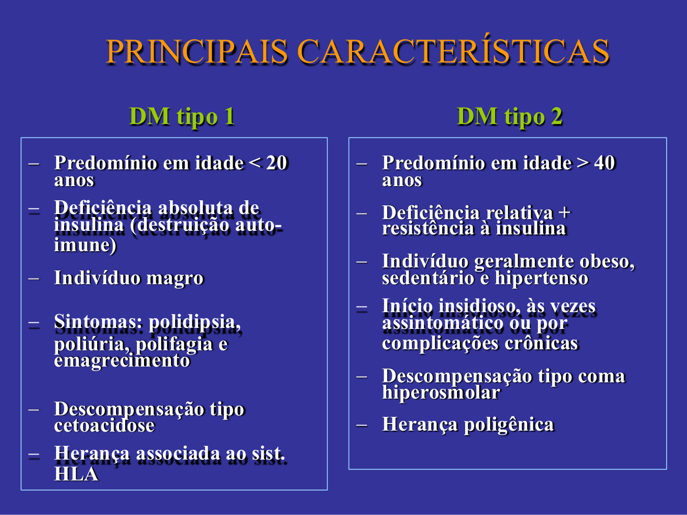
Fisiopatologia da hiperglicemia — por que a glicose sobe (e por que o fígado piora tudo)
A glicemia sobe por dois motivos no diabético, e você precisa separá-los:
Motivo 1 — a glicose não entra nos dois maiores consumidores. Os dois tecidos que mais consomem glicose são o músculo esquelético (por gasto energético) e o tecido adiposo (por armazenamento). E aqui está o ponto-chave: nesses dois tecidos a glicose só entra se houver insulina, porque eles dependem do transportador GLUT4 (o único transportador de glicose dependente de insulina). Nos demais tecidos a glicose permeia a membrana mesmo sem insulina. Logo, sem insulina (ou com resistência a ela), músculo e adiposo "fecham a porta" e a glicose se acumula no sangue.
Motivo 2 — o fígado produz glicose por gliconeogênese. Gliconeogênese é a produção de glicose a partir de substâncias que não são carboidrato. E ela segue uma ordem de substratos que você deve decorar: 1º proteínas/aminoácidos (da alimentação e, sobretudo, do músculo — por isso o diabético descompensado perde peso, massa magra e força); 2º ácido lático (o fígado pega o lactato e o transforma em glicose — o ciclo de Cori); 3º lipídios/triglicérides, que entram como último substrato. O professor lamenta essa ordem: se o lipídio fosse o primeiro, o paciente pouparia massa magra e queimaria gordura — mas a natureza fez o contrário.
Agora a lógica do erro de sinalização, que é o coração da aula. Como a glicose não entra na célula, a célula "acha" que está faltando energia (déficit de ATP). Ela sinaliza carência energética. O fígado "ouve" esse pedido e responde fazendo gliconeogênese — joga mais glicose no sangue. Só que a glicose já está sobrando! É uma comunicação equivocada entre os "departamentos" do corpo. Nas palavras do professor: "a única coisa que o diabético não precisa é que alguém faça mais glicose para ele", e ainda assim "o fígado do diabético ainda piora a vida dele".
A âncora farmacológica está aqui. O principal hipoglicemiante oral, a metformina, tem como maior mecanismo justamente bloquear a gliconeogênese hepática. E o ganho é grande: só bloqueando a gliconeogênese, a metformina reduz cerca de 70 mg/dL na glicemia (um paciente com ~170 cai para a faixa de 100). "Parece besteira, mas é muito grande." Guarde também o porquê de a metformina não causar hipoglicemia no não-diabético: a pessoa normal não depende da gliconeogênese para manter a glicemia (só a usaria em jejum prolongado). Já o diabético gera muita glicose por gliconeogênese o tempo todo, porque suas células sinalizam carência constantemente. Por isso o diabético descompensado faz acidose e corpos cetônicos — está quebrando proteína e lipídio sem parar.
Glicosúria, limiar renal e SGLT2 — quando o açúcar "vaza" para a urina
O rim filtra glicose o tempo todo, mas normalmente reabsorve toda ela de volta. Quem faz isso no túbulo renal é principalmente o SGLT2 (cotransportador sódio-glicose tipo 2), o transportador que reabsorve a glicose filtrada. Existe, porém, um teto: o limiar renal de reabsorção, em torno de 180 a 200 mg/dL. Até ~180 mg/dL, toda a glicose filtrada é reabsorvida. Quando a glicemia ultrapassa esse limiar, os transportadores saturam e a glicose excedente "transborda" para a urina — é a glicosúria.
Daí uma inferência clínica preciosa: se há glicosúria, a glicemia plasmática está no mínimo ~200 mg/dL (normalmente bem mais). O professor frisa: "se você pegar a glicosúria positiva, você pode inferir que a glicemia dele está no mínimo 200".
E a glicose na urina não vai sozinha. Ela exerce ação osmótica: arrasta água consigo (diurese osmótica). Resultado em cascata: poliúria (muita urina) → desidratação → polidipsia (muita sede, o paciente bebendo água o tempo todo). É a clássica sequência. E há a pista do dia a dia que dá nome a uma das melhores frases da aula: "a formiga faz o diagnóstico de diabetes" — o paciente faz xixi "fora da bacia" e, de manhã, aparece formiguinha no banheiro, sinalizando o açúcar na urina.
Cetose, cetoacidose e o hálito cetônico
Lembra que o lipídio é o último substrato da gliconeogênese? Quando o corpo passa a consumir muito lipídio para gerar energia, ele produz ácido cetoacético (um corpo cetônico). Esse ácido é eliminado de duas formas: pelo hálito (hálito cetônico) e pela urina (cetonúria / corpos cetônicos).
O hálito cetônico é um mau hálito característico do diabético — e o professor faz questão: não é cárie nem problema de dente. É a eliminação de uma cetona volátil, a acetona. A analogia dele: cheiro de frutas podres, como uma maçã podre esquecida na fruteira. Uma cetonúria positiva, por sua vez, indica que o paciente está fazendo muita gliconeogênese e consumindo muito lipídio (e provavelmente proteína).
Precisão bioquímica sobre o que foi dito em aula: a cetona volátil do hálito cetônico é a acetona (e não "isopropanona/isopropanol", que é um solvente distinto). Os três corpos cetônicos são o beta-hidroxibutirato (o predominante), o acetoacetato (ácido cetoacético) e a acetona, esta última formada pela descarboxilação espontânea do acetoacetato. Na prática atual, o marcador preferido para avaliar a gravidade da cetoacidose é o beta-hidroxibutirato sérico, porque a cetonúria por fita detecta sobretudo acetoacetato/acetona e pode subestimar a acidose.
O problema é que o ácido cetoacético altera o pH do sangue, acidificando-o → cetoacidose diabética, que é a grande emergência. E o tratamento da cetoacidose é insulina endovenosa (veremos adiante que só a insulina regular pode ser dada EV, e só em ambiente hospitalar).
Sobre a dicotomia "DM1 → cetoacidose / DM2 → coma hiperosmolar" usada na aula: ela descreve a apresentação típica/clássica, mas não é uma regra absoluta. Há sobreposição: o DM2 também pode cursar com cetoacidose (em estresse grave, infecção, "diabetes propenso a cetose", uso de SGLT-2) e o estado hiperglicêmico hiperosmolar pode ter cetose leve. Use a dicotomia como orientação probabilística, não como exclusão diagnóstica.
Glicosilação de proteínas — a raiz das complicações crônicas
Agora entenda por que o diabetes destrói órgãos. A hiperglicemia persistente leva à glicosilação de proteínas: a glicose, em excesso, "gruda" nas proteínas das membranas celulares e dos vasos. Isso tem duas consequências: altera o sítio de ligação (receptores, inclusive o da própria insulina) e altera a permeabilidade da membrana — mudando a função das membranas em todos os vasos.
Onde isso pesa mais? No capilar. O capilar é a grande ponte de troca do organismo — nutrientes, anticorpos, medicamentos, gases, células de defesa, tudo passa por ali. Quando a membrana do capilar se modifica por essa reação, ele para de fazer a troca direito: não perfunde e não oxigena bem. Isso é a microvasculopatia diabética, e ela bate nos órgãos-alvo clássicos: retinopatia (olho), nefropatia (rim), neuropatia periférica (nervo) e a doença cardiovascular.
O pé diabético é a síntese trágica de tudo isso. Uma porta de entrada no membro inferior infecta → não cicatriza (porque o vaso doente não leva defesa nem nutrientes) → processo inflamatório crônico → necrose → amputação. Repare que a isquemia do pé diabético tem dois motivos somados: a inflamação e a falta de perfusão. A amputação é progressiva (dedos → pé → perna), e, ao amputar, tira-se o retorno venoso; no idoso, a angiogênese já não regenera bem. Por isso o diabetes é uma das grandes causas de amputação de membro inferior. E, em epidemiologia, grave isto: o diabetes é a 1ª causa de cegueira adquirida no mundo e a 1ª causa de ingresso em programa de diálise, além de importante causa de amputação e um dos principais fatores de risco cardiovascular.
Classificação: tipo 1, tipo 2 e gestacional
DM tipo 1. Antigamente chamado de "diabetes juvenil"; classicamente surge na criança pré-puberal (~9 a 11 anos). É uma doença com forte caráter genético — certos subtipos de HLA predispõem. (HLA = antígeno leucocitário humano, uma espécie de "tipo sanguíneo do leucócito"/compatibilidade leucocitária, muito pesquisado em transplantes, às vezes mais importante que a tipagem sanguínea, como na medula.) No tipo 1, autoanticorpos circulantes — o professor cita três, e nomeia o IAA, anticorpo anti-insulina — destroem as células beta, levando à falência completa da produção de insulina. Produção de insulina = zero. O paciente é insulinodependente para sempre. Pode ser idiopático. E sem cuidado, o óbito é rápido. Existe também o tipo 1 tardio (LADA), que atinge o adulto com destruição lenta das células beta — inclusive pode aparecer na gestante.
DM tipo 2. É o diabetes do adulto, mais velho, e o mais prevalente: ~90% dos diabéticos (o tipo 1 fica em ~10%, e o restante são tipos indeterminados). É multifatorial (vários genes), com componente genético forte, mas muito ligado à obesidade e a fatores ambientais. A analogia do professor é o "pé na cova com casca de banana": se você tem pai diabético e está acima do peso, você vai ser diabético — mas alimentação, exercício e vida saudável podem suprimir ou postergar essa genética. (Ele se inclui no exemplo: pai e mãe diabéticos, acima do peso, com defeito de ação da insulina; por isso toma metformina, o Glifage XR, no almoço — porque a diretriz manda tratar o pré-diabético.)
Diabetes gestacional. Muito parecido com o tipo 2 (as alterações metabólicas da gestação são fator inclinante). Há dois problemas a separar. O problema materno: a mulher sai da maternidade já diabética, ou se torna diabética muito rápido; cuidando-se, pode postergar isso para a idade idosa. O problema fetal é mais sutil e cai em prova: o descontrole glicêmico materno aumenta a glicemia do feto, e o bebê — que não é diabético — responde hipersecretando insulina. E como a insulina tem ação anabolizante (via IGF, fatores de crescimento ligados à insulina), o bebê não só engorda como cresce muito: nasce macrossômico ("bebezão cheio de dobrinhas", o professor compara ao bonequinho da Michelin). E é um "monstrinho metabólico": acostumado a hipersecretar insulina, a cada mamada faz hipoglicemia reativa forte (hiperinsulinismo) — pode precisar de UTI e tem risco de infecção. Conduta na gestante diabética: controle rígido e dieta com restrição de carboidrato; o obstetra acompanha o crescimento fetal pelo pré-natal e, se o feto cresce acima do percentil (não porque está "saudável", mas porque está "comendo demais"), interna a mãe para dieta rígida.
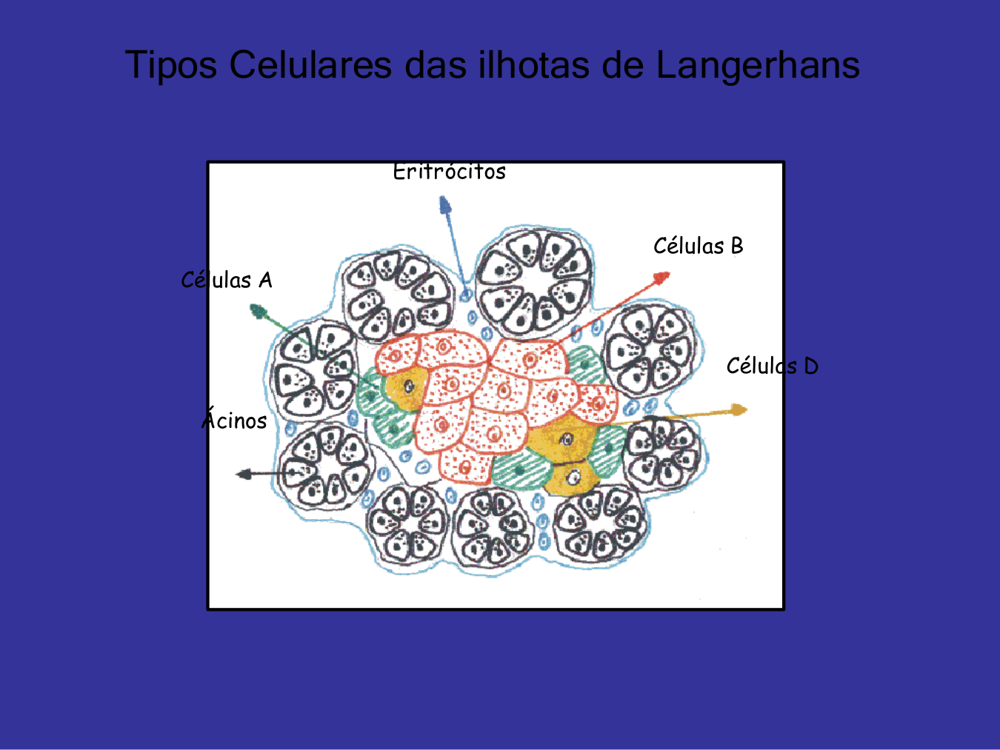
O pâncreas: exócrino, ilhotas e os tipos celulares
Antes de falar de insulina, organize a anatomia funcional. O pâncreas exócrino são os ácinos pancreáticos, que secretam o suco pancreático no duodeno — com amilase pancreática, algumas proteases e, importante, bicarbonato. O bicarbonato faz a "viragem de pH": o conteúdo chega ao duodeno muito ácido (vindo do estômago) e é alcalinizado (pH ~8) para as enzimas digestivas trabalharem — diferente da pepsina gástrica, que prefere pH ácido.
O pâncreas endócrino são as ilhotas de Langerhans, conjuntos de células no parênquima. Segundo o slide, sua composição é:
| Célula | % da ilhota | Secreta |
|---|---|---|
| B (beta) | ~75% | Insulina, amilina, peptídeo C, pró-insulina |
| A (alfa) | ~20% | Glucagon, pró-glucagon |
| D (delta) | ~3-5% | Somatostatina |
| PP | < 2% | Polipeptídeo pancreático (e outros peptídeos) |
A somatostatina está envolvida com o crescimento e tem ação contrária à da insulina. Fixe a polaridade: glucagon e somatostatina são hipergliceminantes (estimulam a glicogenólise — quebra do glicogênio hepático — e a gliconeogênese), enquanto a insulina é hipoglicemiante. (Quanto aos peptídeos da célula PP, o professor brinca que, mesmo após muita pesquisa, ainda não se sabe bem para que servem.)
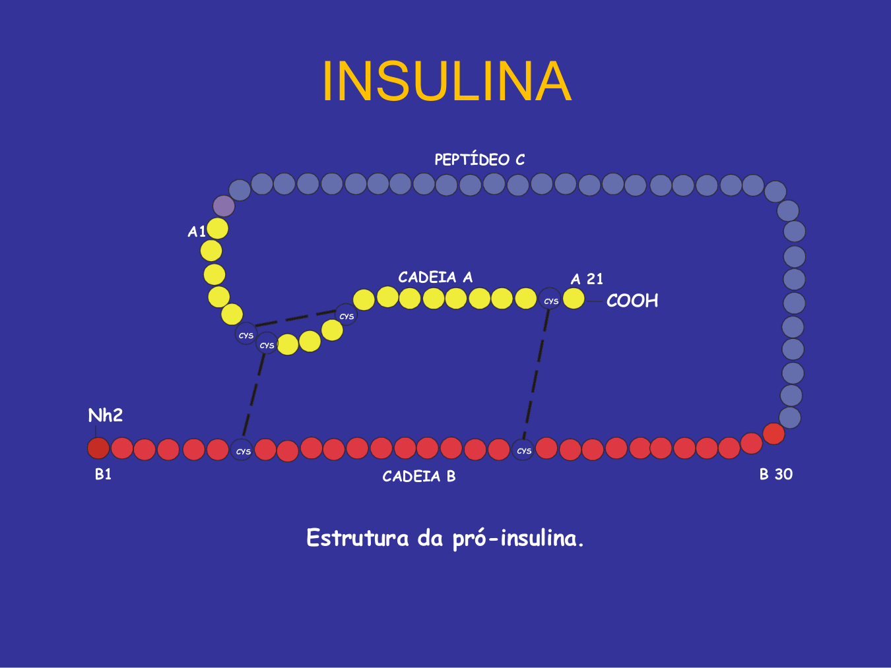
A molécula de insulina, a reserva pancreática e o peptídeo C
A insulina é um hormônio proteico de 51 aminoácidos, em duas cadeias: cadeia A (21 aa) e cadeia B (30 aa), unidas por pontes dissulfeto. Como toda proteína, sua síntese é dirigida por DNA/RNA — e isso é lento, leva horas. Ela é liberada na forma de um precursor, a pró-insulina.
Aqui entra um dos conceitos que o professor mais ama: a reserva pancreática. O pâncreas humano normal guarda cerca de 8 mg de insulina pronta (≈ 200 unidades). Por que essa reserva existe? Porque quando você come e a glicemia sobe, o corpo precisa de insulina agora — não pode esperar horas para sintetizar do zero. Então ele usa a reserva pronta e só depois repõe o estoque (síntese lenta). Se dependesse de sintetizar a cada refeição, lesaria o órgão. A aritmética que ele faz de cabeça: um diabético bem controlado injeta ~40-50 unidades de insulina por dia; logo, 8 mg (≈200 U) de reserva equivalem à insulina de uns 4-5 dias comendo carboidrato.
Dessa lógica nasce um sinal diagnóstico precioso: em condições normais, ~2 horas após a ingestão de carboidrato a glicemia volta ao basal, porque o estoque já foi reposto. Se em 2h pós-prandiais a glicemia não voltou ao normal, algo está errado — a reserva já está diminuindo. Conforme a doença progride, a glicemia demora cada vez mais (3h, 4h, 6h, 8h) para voltar ao basal. Como ele resume: "ninguém fica diabético do dia para a noite".
E o peptídeo C (peptídeo conector)? Ele liga as cadeias A e B na pró-insulina. Quando a insulina é liberada, enzimas específicas clivam o peptídeo C em segundos — e isso é obrigatório, porque com o peptídeo C ligado a insulina não consegue se encaixar espacialmente no receptor. A utilidade clínica é elegante: como a insulina farmacêutica/exógena não tem peptídeo C, dosar o peptídeo C (antes e depois de um estímulo de glicose) permite estimar quanto de insulina endógena o paciente ainda secreta — útil sobretudo no tipo 2 que já usa insulina. (O professor classifica isso como pesquisa "chata", de pouca aplicação clínica direta.) Por fim, os secretagogos da insulina: a glicose é o maior estímulo, mas também estimulam manose, leucina, arginina e a atividade vagal/parassimpática.
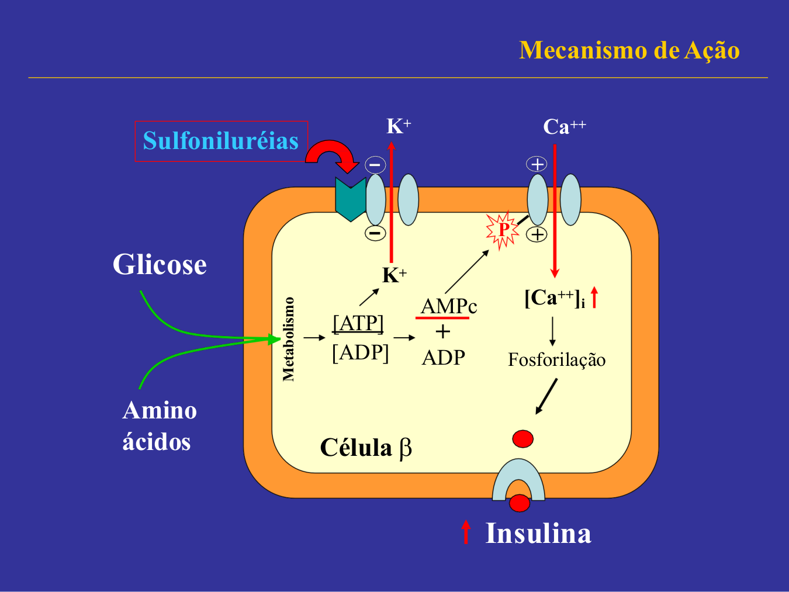
Como a célula beta secreta insulina — o canal de potássio ATP-dependente
Esta é a sequência mais importante da aula, porque ela reaparece quando falarmos de sulfonilureias e de uma pegadinha clássica de prova. Acompanhe passo a passo na célula beta:
- A glicemia sobe → a glicose entra na célula beta e é metabolizada;
- O metabolismo eleva o ATP intracelular;
- O ATP fecha o canal de potássio ATP-dependente;
- Com o K+ "represado" dentro, a membrana despolariza;
- A despolarização abre canais de cálcio → o cálcio entra;
- O cálcio mobiliza as vesículas carregadas de insulina → exocitose da insulina.
O professor compara isso ao neurônio: despolariza, abre canal de cálcio, o cálcio libera as vesículas — só que aqui as vesículas estão cheias de insulina, não de neurotransmissor. Os segundos mensageiros que orquestram a movimentação das vesículas ligada ao cálcio são o AMPc (adenosina monofosfato cíclico), o IP3 (inositol trifosfato) e o DAG (diacilglicerol). Isso acontece na pessoa normal e no tipo 2 (que ainda têm célula beta). No tipo 1, não acontece — a célula beta já morreu.
Pegadinha de prova explícita — diuréticos depletores de potássio × hipoglicemiantes orais. O professor disse que já cobrou isto na prova: "qual o mecanismo pelo qual os diuréticos depletores de potássio interferem na ação dos hipoglicemiantes orais?". Raciocine pelo canal de K+. Para o ATP fechar o canal e despolarizar, é preciso ter potássio dentro da célula. Um diurético depletor de potássio — furosemida, hidroclorotiazida (reveja a §03 Diuréticos) — causa hipocalemia: ao perder K+ extracelular, o K+ sai de dentro da célula para equilibrar. Com menos K+ dentro, a célula beta fica mais negativa internamente (digamos, −90 em vez de −70 mV) → fica mais difícil de despolarizar → despolariza menos → entra menos cálcio → libera menos insulina → tende à hiperglicemia. Por isso esses diuréticos atrapalham os hipoglicemiantes secretagogos. A frase do professor para você nunca mais errar: "se a gente está a menos 70, é mais fácil dela despolarizar do que se ela está a menos 90". E o ponto que confundiu um aluno: o potássio é cátion positivo — ter K+ dentro deixa a célula menos negativa (mais fácil de despolarizar). Os diuréticos poupadores de potássio não causam esse problema (mas têm efeito diurético fraco, daí serem associados a um depletor para minimizar — não reverter — a perda de potássio). Esta é a ponte entre a §02/§03 e a §08.
Metabolismo da insulina e a família dos transportadores GLUT
A insulina cai na corrente sanguínea e é degradada muito rápido — a meia-vida circulante é curtíssima ("ridícula", diz o professor). Por isso os tecidos a liberam de forma contínua e lenta, para manter o nível. Quem a degrada é a enzima insulinase (insulina-protease), abundante em dois órgãos: fígado (~60%) e rim (~35-40%). No diabético, parece haver inversão, com o rim metabolizando proporcionalmente mais.
Agora, a família dos transportadores de glicose. São cinco GLUT, e a regra de ouro é: só o GLUT4 depende de insulina — todos os outros são insensíveis a ela.
| Transportador | Onde está | Depende de insulina? |
|---|---|---|
| GLUT1 | Todos os tecidos (cérebro, eritrócito) | Não |
| GLUT2 | Célula beta, fígado, rim, intestino | Não |
| GLUT3 | Cérebro, rim, placenta | Não |
| GLUT4 | Músculo e tecido adiposo | Sim |
| GLUT5 | Intestino e rim | Não |
Por isso músculo e tecido adiposo — que superexpressam GLUT4 — param de consumir glicose sem insulina, e a glicose se acumula no sangue. Como todos os tecidos têm GLUT1, sempre entra um pouquinho de glicose em qualquer tecido mesmo sem insulina; mas no músculo o que importa para o grande consumo é o GLUT4. A frase para gravar: "só o GLUT4 é dependente da insulina; todos os outros são insensíveis".
O que a insulina faz nos órgãos — e por que ela engorda
A insulina é o hormônio do "guardar e construir" (anabolismo). Veja, por órgão:
- Fígado: inibe a glicogenólise (não quebra glicogênio), inibe a conversão de aminoácidos e ácidos graxos em glicose/cetoácidos (ou seja, inibe a gliconeogênese), faz glicogênio (ação anabólica) e aumenta triglicérides e VLDL;
- Músculo: aumenta o transporte de aminoácidos, aumenta a síntese ribossomal/proteica (anabolismo puro) e aumenta a síntese de glicogênio (induz a glicogênio-sintetase e inibe a fosforilase, que quebra glicogênio);
- Tecido adiposo: aumenta a formação de glicerídeos/VLDL, transporta glicose para dentro da célula, ativa a lipase que produz gordura e inibe a lipase que quebra gordura (reduz a lipólise).
Some tudo e chegue à conclusão clínica que o professor repete "redundantemente": tratar o paciente com insulina faz engordar, e paciente engordando é paciente difícil de controlar. Daí a sentença central: "não existe tratamento de diabetes; você tem tratamento nutricional". Tomar insulina não libera o paciente para comer à vontade. O tipo 1 que, numa festa, carrega mais insulina para poder comer e beber, engorda mais e perde sensibilidade — "tudo é um equilíbrio, toda escolha tem um preço". E a prova viva da ação anabolizante via IGF é o caso (citado pelo professor) do fisiculturista que usava insulina como anabolizante para hipertrofia muscular — a insulina constrói tecido.
Insulinoterapia — o esqueleto: quando, e as espécies de insulina
O tratamento do diabetes é, no fundo, duas coisas: insulina ou terapia oral. Quem usa insulina:
- DM tipo 1: insulina para sempre (forever) — não há célula beta funcionante;
- Diabetes gestacional: usa insulina, apesar de parecer tipo 2 — porque todos os hipoglicemiantes orais são contraindicados na gestação pela diretriz da SBD;
- DM tipo 2: usa oral, mas pode precisar de insulina transitória em situações especiais — ou definitiva, na falência das células beta.
As indicações de insulina transitória no tipo 2 são clássicas: processo infeccioso grave, uso de corticoide (que sobe a glicemia), cirurgia ou estresse metabólico. A lógica: em vez de levar 1-2 meses para a glicada normalizar com oral, a insulina normaliza rápido e evita lesão (por exemplo, neuronal); resolvido o evento, volta para os orais.
Quanto às espécies de insulina (a história farmacêutica): há ~20 anos não existia insulina humana — extraía-se a insulina do pâncreas de boi e porco moídos nos frigoríficos, purificava-se e acoplava-se a cristal de zinco (insulina zíncica, de depósito). A insulina bovina difere da humana (de 51 aa) por 2 aminoácidos; a suína, por 1 aminoácido. E como são proteínas, são bons imunógenos: quem usava insulina animal desenvolvia, com o tempo, muito anticorpo anti-insulina. Quando se migrou da insulina animal para a humana (hoje feita por engenharia genética), houve redução importante da dose — de 30-50 unidades para ~20 — porque os anticorpos não reconheciam a humana. (Caso pessoal: o pai do professor, insulinodependente, usava insulina animal com título altíssimo de anticorpos; ao trocar para humana, reduziu a dose para menos da metade — se mantivesse a dose anterior, faria hipoglicemia severa.)
Os tipos de insulina por tempo de ação (a tabela que cai em prova)
Aqui está o coração prático da insulinoterapia. Memorize a cinética, porque ela determina quando aplicar e qual risco cada uma tem.
| Insulina | Classe / ação | Início | Pico | Duração |
|---|---|---|---|---|
| Lispro, Aspart, Glulisina | Ultracurta (monomérica, DNA recombinante) | — | ~1 hora | raramente passa de 3-4 h |
| Regular (zinco cristalina solúvel) | Curta | ~30 min | — | 5-7 h (citado até 8 h) |
| NPH (protamina neutra Hagedorn / isófana) | Intermediária | 1-2 h | 6-8 h | até 18 h |
| Insulina lenta | Intermediária/longa (30% semilenta + 70% ultralenta) | — | — | 13-20 h |
| Glargina (Lantus) | Longa / basal | — | sem pico marcante | > 24 h (1x/dia) |
Ultracurta (Lispro/Aspart/Glulisina): é a mais nova e cara, não disponível no SUS; é monomérica, feita por DNA recombinante. Sua função é cobrir o pico pós-prandial — controla a hiperglicemia de depois das refeições (pegadinha: é hiper, não hipo). Nunca é usada isolada: sempre acompanha uma insulina de longa duração; ao controlar o pico, permite usar dose menor da basal.
Regular (curta): efeito em ~30 min, dura 5-7 h. É a única insulina que pode ser dada por via endovenosa (porque é solúvel), e é a usada no tratamento da cetoacidose diabética — mas a via EV é só em ambiente hospitalar. É também usada imediatamente antes da refeição.
NPH (intermediária): a mais comum das intermediárias; sua absorção depende da hidrólise da protamina. Início 1-2 h, pico 6-8 h, dura no máximo 18 h. Pode ser misturada com regular (o mais comum) ou com Lispro. Como dura ~18 h, costuma ser aplicada 2x: uma de manhã (~8h) e a bed time às 22h.
Glargina (Lantus): considerada pelo professor a melhor — dura >24 h, permite dose única diária, mantém-se estável sem pico marcante; é a insulina basal.
Atualização: a glargina U100 é, de fato, uma excelente basal sem pico e superior à NPH (menos hipoglicemia), mas não é o ápice da evolução. Já existem análogos basais de 2ª geração — degludeca e glargina U300 — com perfil ainda mais plano e menor risco de hipoglicemia noturna. Leia "a melhor" como "a melhor entre as citadas na aula".
Uma regra/exceção que o professor mandou gravar: a insulina ultralenta pode ser misturada com a regular SOMENTE no DM tipo 1 (insulinodependente). No tipo 2, não — aumenta muito o risco de hipoglicemia. "Só para DM1. E grava."
Pico = risco de hipoglicemia. E hipoglicemia dormindo mata. O princípio que conecta toda a tabela de cinética: quanto maior o pico de uma insulina, maior o risco de hipoglicemia naquele momento. É por isso que a glargina é a melhor — ela é estável, sem pico, logo tem menos risco. E é por isso que existe a manobra do bed time da NPH: aplicando às 22h, o pico (que vem ~7-8 h depois) cai por volta de 5h30-6h da manhã, quando o paciente já está despertando — reduzindo o risco de hipoglicemia durante o sono. E o professor é categórico: "se você tiver uma hipoglicemia dormindo, você pode até morrer — tem caso de morte por hipoglicemia noturna". Daí a regra inegociável: paciente em insulinoterapia NUNCA pode pular refeição. Se não tem fome, tem que comer alguma coisa. E o risco da regular usada antes da refeição é "macabro": se injetar e não comer (esqueceu, distraiu-se), faz hipoglicemia grave — os neurônios não podem ficar sem glicose. "Nenhum almoço é de graça."
Acesso, custos e dispositivos de administração
A insulinoterapia é cara pela soma dos insumos, e o professor detalha o cenário do SUS. Hoje o SUS distribui à população a insulina regular e a NPH, além de seringas, agulhas, lancetas, glicosímetro e tiras (com interrupções ocasionais). Um frasco de NPH custa ~R$ 80 na farmácia; a glargina, ~R$ 300 — e existe no SUS via farmácia de alto custo, exigindo documentação, exames e justificativa (paciente de difícil controle), um processo burocrático que faz o paciente "sofrer várias vezes".
Detalhes práticos dos dispositivos: a seringa de insulina de 1 mL = 100 unidades, dividida em 10 partes. A seringa de agulha fixa (protetor laranja) tem agulha mais fina, mas ao furar a rolha do frasco o bisel entorta, dificultando o reaproveitamento. As canetas (injetores portáteis) usam agulhinhas ultrafine, muito finas e quase indolores; a caixa com 100 custa mais de R$ 100 (mais de R$ 1 cada), e o diabético costuma reutilizar por 2-3 meses por questão de custo. O glicosímetro é praticamente "de graça" — o lucro está nas tiras, num modelo de venda casada: cada tira só serve no seu glicosímetro (a analogia é o carregador de celular não padronizado).
Tecnologias avançadas: a bomba de insulina é um dispositivo de infusão contínua subcutânea — instala-se um cateter e uma bomba peristáltica administra a insulina lentamente; as modernas têm sensor de glicemia que ajusta a dose ao nível glicêmico ("mais inteligentes"). Custa mais de R$ 18 mil (fora a insulina). Já a insulina inalada é, nas palavras do professor, "a ótima ideia que não deu certo": liberada nos EUA há mais de 10 anos, sua barreira não é o custo, é a segurança (análoga aos inaladores de broncodilatador) — não "rolou" até hoje.
Sulfonilureias — os secretagogos mais antigos
Entramos nos hipoglicemiantes orais, todos usados no DM tipo 2. As sulfonilureias são os mais antigos. Mecanismo: são secretagogos — estimulam a liberação de insulina, forçando o pâncreas a secretar mais. E como fazem isso? Voltamos ao slide do canal de potássio: a sulfonilureia favorece o fechamento do canal de K+ ATP-dependente → o K+ represa dentro da célula → despolarização → entrada de Ca++ → via AMPc, IP3 e DAG → secreção de insulina. Ou seja, ela "imita/potencializa" o mecanismo fisiológico de secreção, só que disparado pela droga e não pela glicose. Um efeito adicional: diminuem o metabolismo hepático da insulina, aumentando a meia-vida do hormônio (lembre que 60% da insulina é metabolizada no fígado).
Consequência importante do uso contínuo: com o tempo, os níveis de insulina caem e há tendência à falência do órgão (você força a célula beta cronicamente), mas os níveis de glicose continuam controlados.
1ª geração — clorpropamida. A primeira sulfonilureia, com "50-60 anos". Tem duração muito longa e eliminação renal. Por isso causa crises hipoglicêmicas graves e prolongadas, que normalmente exigem internação — e o risco é potencializado no idoso e no paciente com insuficiência renal (a função renal cai naturalmente com a idade), principalmente se ele pular uma refeição. Tem ainda o efeito dissulfiram (efeito antabuse): com álcool, causa rubor facial intenso. O mecanismo é elegante: o álcool é transformado em acetaldeído e depois em acetato (em 2 etapas); a clorpropamida trava a 2ª etapa (acetaldeído → acetato), retendo o acetaldeído tóxico — que causa o rubor e a "ressaca". No passado, isso foi usado como "tira-álcool" no alcoolista (colocava-se na bebida para ele passar mal e parar de beber), mas hoje é proscrito: retém metabólito tóxico, há toxicidade, baixa adesão, e o etilista parava de comer (não de beber), piorando o quadro metabólico.
2ª geração — glibenclamida, glipizida, glimepirida. Todas equivalentes na potência hipoglicemiante; as diferenças são farmacocinéticas. A glipizida é metabolizada no fígado → ótima na insuficiência renal e em pacientes mais velhos (>65 anos). A glimepirida (Amaryl) pode ser tomada 1x/dia. A glibenclamida (Daonil) é a mais "renal" — cuidado no idoso e no renal crônico. Farmacocinética geral: absorvidas no TGI, com ligação a proteínas plasmáticas alta (~90%), meia-vida rápida (3-5 h) mas efeito prolongado. Usos: DM tipo 2 com dieta; podem ser combinadas com insulina (fase quase de insulinização plena). Efeitos colaterais: relacionados à duração (pior na 1ª geração se pular refeição), estimulam o apetite (desinibem o centro da fome) → ganho de peso (cuidado em obeso), rash cutâneo. Contraindicações: gravidez (como todos os orais), insuficiência renal e hepática (aumentam muito a meia-vida). E um ponto importante: não protegem contra ateropatia nem têm benefício cardiovascular extra.
Interação clássica: AINEs deslocam a sulfonilureia da proteína. A ligação proteica alta (~90%) das sulfonilureias é "boa e ruim": ruim porque abre porta para interações. Os AINEs têm ligação proteica ainda maior (95-97%) e, ao competir, deslocam a sulfonilureia da albumina. Mais sulfonilureia livre no plasma = mais efeito = risco de hipoglicemia. É o mesmo raciocínio de deslocamento proteico que aparece em outras seções (lembre dos anticoagulantes orais na §06). E não esqueça da outra ponte: o diurético poupador de potássio reduz a eficiência da sulfonilureia (mexe no canal de K+) — pegadinha que cruza a §02/§03 com a §08.
Glinidas — secretagogos rápidos para o pós-prandial
As glinidas também estimulam a secreção de insulina pelo mesmo mecanismo das sulfonilureias (bloqueio do canal de K+ ATP-dependente), mas com cinética rápida e curta. A repaglinida (Prandin, derivada do ácido benzoico) tem absorção rápida pelo TGI, meia-vida de ~1 hora, metabolismo hepático e renal — e, por ser secretagogo, também pode causar hipoglicemia. A nateglinida (Starlix, derivada da D-fenilalanina) tem aumento de secreção rápido porém menos sustentado — um efeito análogo ao da Lispro, mas por via oral (estímulo secretório rápido e curto). Por isso devem ser tomadas imediatamente antes das refeições, com a finalidade de reduzir a glicemia pós-prandial no DM tipo 2.
Um detalhe que cai em prova: a nateglinida compete com a glibenclamida pelo mesmo sítio de ligação no canal de potássio — por isso não se associam as duas (uma desloca a outra, interferindo no mecanismo). E uma nota clínica: a glinida tem ganho hipoglicemiante discreto, mas há efeitos vasculares benéficos descritos, como a redução do espessamento médio-intimal carotídeo — que é a placa de ateroma na carótida, considerada um dos piores fatores de risco cardiovascular no diabético. (O professor digride aqui sobre a obstrução de ~70% da carótida em paciente de 60-70 anos reduzindo o fluxo cerebral e causando sofrimento neurológico/cognitivo, e sobre a comparação entre endarterectomia e stent de carótida — assunto que toca a §06/§07.)
Biguanidas — a metformina (a droga preferida do professor)
Chegamos à estrela da aula. O professor declara-se "apaixonado" pela metformina, e vale entender por quê. Ela tem dois mecanismos: (1) o principal — diminui a produção hepática de glicose (inibe a gliconeogênese), o tal ganho de ~70 mg/dL; e (2) o secundário — aumenta a ação da insulina no músculo e no tecido adiposo a nível de receptor (aumenta a afinidade do receptor à insulina; é um sensibilizador leve).
Ponto crucial: a metformina é anti-hiperglicemiante, não interfere na secreção de insulina — e por isso não provoca hipoglicemia (ela apenas impede que o fígado produza glicose; não força secreção). Isso a separa fundamentalmente dos secretagogos.
A farmacocinética é "limpa", e é parte da paixão: absorvida no intestino delgado, é excretada na urina de forma inalterada (não sofre metabolismo) — ótimo, porque não sobrecarrega o fígado nem faz interação por metabolismo. E não se liga a proteínas plasmáticas (logo, não desloca outro fármaco nem é deslocada). Meia-vida curta, dose dividida 2-3x ao dia junto às refeições (dose máxima no slide: 2,5 g/dia). O Glifage XR (extended release / liberação estendida) é preferível para reduzir os efeitos gastrointestinais — costuma-se usar 500 mg junto às refeições.
Uso: sozinha ou associada a sulfonilureia e/ou insulina (pode-se usar com insulina porque só aumenta a sensibilidade). Indicação preferencial: o paciente obeso com resistência à insulina e o pré-diabético. Efeitos adversos: muito presentes os gastrointestinais — diarreia, flatulência, epigastralgia, náuseas — geralmente transitórios, durando no máximo ~1-2 semanas ("paciência e esperar"). O efeito grave e raro é a acidose lática, e o mecanismo é coerente: o ácido lático é substrato da gliconeogênese; ao inibir a gliconeogênese, inibe-se o consumo do lactato, que pode acumular e acidificar — o professor diz nunca ter visto um caso na prática. Por isso, evitar em situações que favoreçam acidose lática: insuficiência renal, hepática, cardíaca e respiratória — e na gravidez.
Atualização sobre o critério renal dito de forma binária em aula ("evitar na insuficiência renal"). O padrão atual (ANVISA/bula, ADA, SBD) usa a taxa de filtração glomerular estimada (TFG): a metformina é segura com TFG ≥ 45; entre 30 e 45 mL/min/1,73m² usa-se com cautela e dose reduzida (e não se inicia de novo); só é contraindicada com TFG < 30. Suspender também temporariamente em risco de hipoperfusão/acidose (sepse, exames com contraste iodado, descompensação cardíaca/respiratória). Ou seja, doença renal leve/moderada NÃO contraindica automaticamente. Detalhe farmacocinético: a "meia-vida curta" da fala refere-se à meia-vida plasmática (~5-6 h); considerando o compartimento eritrocitário, a eliminação é mais longa (~17 h). A dose máxima usual gira em torno de 2.000-2.550 mg/dia (o "2,5 g" do slide está no limite superior).
Por que se apaixonar pela metformina. Além de controlar a glicemia sem causar hipoglicemia, ela tem benefícios extras que explicam a paixão: diminui eventos cardiovasculares, reduz a mortalidade cardiovascular, previne o DM tipo 2, melhora o perfil lipídico (fator cardiovascular — conexão direta com a §07) e — talvez o mais útil na prática — reduz o peso. É, portanto, a droga ideal para o diabético com dificuldade de emagrecer. E ainda é barata e distribuída pelo SUS: caixa com 30 comprimidos por ~R$ 8, e gratuita na Farmácia Popular com receita. "Apaixone-se pela metformina."
Metformina na gestação — a posição da diretriz
Este ponto o professor defende com firmeza. Na diretriz, a insulina é a medicação de 1ª linha no diabetes gestacional — eficaz e comprovada. O argumento farmacocinético é bonito: a insulina tem passagem placentária desprezível (limitada pelo tamanho da molécula), logo não causa hipoglicemia no bebê — a passagem é mínima, não "zero absoluto", mas clinicamente irrelevante. A metformina é considerada uma opção na terapia, mas "ainda são necessários mais estudos" — a diretriz se exime de responsabilidade ("tiram o glúteo da seringa"), e o uso fica por conta e risco, faltando dados de longo prazo na prole exposta intraútero. O professor critica abertamente os pré-natalistas (de rede pública e privada) que usam metformina na gestante por conta própria, contrariando a diretriz — chegou a mandar trabalho a congresso sobre o tema. A mensagem: havendo insulina que funciona bem e é mais segura (não é fetotóxica, não passa a barreira), prefira insulina, apesar do incômodo da aplicação. Lembre da frase: "gestante e criança são gaps na farmacologia" — não dá para testar livremente nelas, e o modelo animal não basta para inferir segurança/teratogenicidade.
Tiazolidinedionas (glitazonas) — pioglitazona
As glitazonas (tiazolidinedionas) hoje se resumem à pioglitazona — a troglitazona foi retirada (problema hepático grave) e a rosiglitazona "nunca vem". O mecanismo é análogo ao da metformina (e, como ela, sem causar hipoglicemia por si só), mas a via é diferente: ligam-se a receptores nucleares PPAR-gama (receptor ativado por proliferador de peroxissoma tipo gama), modificando a síntese de proteínas. Uma conexão útil com a §07: os fibratos agem no PPAR-alfa; as glitazonas, no PPAR-gama — mesma família de receptores.
A diferença conceitual em relação à metformina, que o professor faz questão de marcar: a glitazona é o inverso da metformina — é mais sensibilizadora (diminui a resistência periférica à insulina, mas requer insulina para agir) e menos inibidora da gliconeogênese; a metformina é mais inibidora da gliconeogênese e menos sensibilizadora. As glitazonas aumentam os transportadores de glicose (GLUT4) no músculo e adiposo e ativam genes do metabolismo de ácidos graxos no fígado.
Efeitos adversos: ganho de peso e retenção hídrica → cuidado na ICC (o acúmulo de líquido pode piorar a insuficiência cardíaca — conexão com a §01/§03); cuidado no obeso; proibidas na gravidez; risco de anemia e de fratura. Por si só não dão hipoglicemia, mas são aditivas com outros orais (podem produzir hipoglicemia em associação) — em alguns países, é proibido associá-las à insulina. Benefícios extras: prevenção do DM tipo 2, redução do espessamento médio-intimal carotídeo, melhora do perfil lipídico e — relevante — redução da esteatose hepática (ajudam a tratar). (Sobre esteatose hepática: o professor lembra que todo obeso tem algum grau, intimamente ligada à gordura visceral que infiltra o fígado; evolução leve = "farol amarelo", moderada = "vermelho piscando", grave → insuficiência hepática e transplante.)
Inibidores da alfa-glicosidase — acarbose e miglitol
A acarbose (Glucobay) e o miglitol inibem a alfa-glicosidase intestinal. Essa enzima — a sacarase — é a que quebra a sacarose (dissacarídeo) em dois monossacarídeos absorvíveis. Ao inibi-la, o açúcar não é absorvido e segue para as fezes: diminui a absorção de carboidratos e bloqueia o aumento da glicose plasmática pós-prandial. (O uso aprovado é sobretudo no DM tipo 2; no DM tipo 1 a acarbose seria, no máximo, um adjuvante off-label raro — não tem indicação equivalente nos dois tipos.)
O efeito adverso decorre direto do mecanismo: o açúcar não absorvido chega ao intestino grosso, onde as bactérias o fermentam → gases + amolecimento das fezes → flatulência e diarreia. O professor brinca que é uma "mistura perigosa", com risco de "acidente", e que a adesão é péssima por isso (chega a dizer que "enfraquece relacionamentos") — na prática, quem mais usa acaba sendo o paciente acamado que usa fralda. O ganho hipoglicemiante é pequeno, embora haja benefícios (reduz evento cardiovascular, previne DM tipo 2, reduz espessamento médio-intimal). Uso preferencial: idoso com hiperglicemia pós-prandial. (Definição que ele deu de passagem: meteorismo = gás que distende as alças intestinais causando dor; à percussão dá timpanismo.)
Gliptinas (inibidores da DPP-4) e a lógica das incretinas
Agora um conceito novo e poderoso: as incretinas. O GLP-1 é um hormônio que o corpo produz fisiologicamente e que estimula a secreção de insulina apenas quando a glicemia está alta — é, como diz o professor, um "secretagogo inteligente". As gliptinas (ex.: vildagliptina, o Galvus) inibem a DPP-4, a enzima que degrada o GLP-1. Ao bloquear a degradação, prolongam a ação do próprio GLP-1 do paciente — mas, como o GLP-1 só age com glicemia alta, não causam hipoglicemia isoladamente. As gliptinas também fazem down-regulation do glucagon (o hormônio contrário da insulina), reforçando o efeito hipoglicemiante.
Perfil clínico: uso no DM tipo 2, geralmente em associação; hipoglicemia só ocorre quando combinadas a um secretagogo. Não usar em DM tipo 1, nem na cetoacidose, nem na insuficiência renal. Têm efeito neutro sobre o peso (nem emagrece nem engorda). Efeitos adversos inespecíficos: faringite, infecção urinária. Curiosidade: em modelos animais aumentam a massa de células beta, mas "não adianta" — no humano o problema é na ação/estrutura. O Galvus Met combina vildagliptina + metformina, somando o aumento de GLP-1 (mais secreção) à redução de glicose hepática (metformina).
Análogos do GLP-1 — liraglutida, semaglutida, tirzepatida
Aqui está a classe da moda. Os análogos do GLP-1 têm uma diferença crucial em relação às gliptinas: a gliptina impede a degradação do GLP-1 endógeno; o análogo É o próprio GLP-1 injetado (você está colocando o hormônio no paciente). A liraglutida (Victoza) foi a precursora; depois vieram a semaglutida (Ozempic) e a tirzepatida (Mounjaro), com um ainda mais potente a caminho (apelidado de "Godzilla").
Mecanismo: potencializam a secreção de insulina dependente da glicose e fazem down-regulation do glucagon. O efeito emagrecedor — que explica a febre — vem de três frentes: (1) inibem o centro da fome; (2) aumentam o tempo de retenção gástrica dos alimentos (estômago cheio por mais tempo → menos fome — a analogia do professor é a "sucuri que engoliu o boi": a feijoada/carboidrato complexo dá saciedade longa, ao contrário do macarrão/carboidrato simples que esvazia rápido e a fome volta logo); e (3) mudam o paladar, reduzindo o desejo por alimentos hipercalóricos (pudim, leite condensado, chocolate). A tirzepatida é dupla (GLP-1 + GIP); o novo "Godzilla" seria tríplice (GLP-1 + GIP + um terceiro alvo, provavelmente glucagon) — daí a potência maior.
Cuidados e contraindicações: risco de pancreatite aguda; não usar em DM tipo 1, cetoacidose ou gestantes. E o professor faz um alerta forte sobre o uso indevido/mercado ilegal: não pode ser usado sem prescrição; o médico deve fazer boa anamnese e pedir exames antes — amilase e lipase séricas (função pancreática) e gama-GT (função hepática), porque o etilista tem risco maior de pancreatite e o paciente pode omitir o etilismo. A máxima dele: "tem que partir do princípio que o paciente mente para você". Ele critica o mercado paralelo (medicamento roubado/vendido pela internet ou via Paraguai, sem refrigeração — deve ser conservado refrigerado — perdendo eficácia) e a venda de frações manipuladas por preços abusivos. (Prometeu uma aula futura específica de farmacologia da obesidade.)
Inibidores de SGLT-2 (gliflozinas) — fechando o ciclo no rim
Lembra do SGLT2, o cotransportador sódio-glicose tipo 2 do túbulo contorcido proximal, que reabsorve a glicose filtrada antes de ela ser eliminada? Os inibidores de SGLT-2 (as gliflozinas) o bloqueiam: a glicose deixa de ser reabsorvida e é excretada na urina (glicosúria provocada por droga), reduzindo a glicemia. Exemplos: dapagliflozina (Forxiga) e empagliflozina (Jardiance).
Vantagem extra muito valorizada: ajudam a reduzir peso — ao não absorver a glicose, evita-se que esse excesso vire gordura. O slide traz números da associação: a dapagliflozina 10 mg isolada reduz ~2,6-2,7 kg, a metformina ~1,3 kg, e dapagliflozina + metformina ~2,7-3,3 kg; quanto à HbA1c, a dapagliflozina reduz 0,82-0,97%, a metformina 1,4%, e a associação 2,0-2,1%.
O problema que o professor enfatiza é direto do mecanismo: jogar glicose na urina favorece a infecção urinária (a glicose é meio de cultura para bactérias). Por isso o cuidado prático: após urinar, higiene genital reforçada (não só papel) — para não predispor à infecção urinária.
Ressalva de segurança que não foi mencionada em aula: os inibidores de SGLT-2 podem precipitar cetoacidose euglicêmica (euDKA) — uma cetoacidose com glicemia normal ou pouco elevada (frequentemente < 250 mg/dL). Isso é uma exceção importante à regra de que "glicosúria/cetoacidose implica glicemia muito alta": cetonemia/cetonúria positivas com glicemia "normal" NÃO descartam cetoacidose. Por isso, recomenda-se suspender o SGLT-2 em doença aguda grave, jejum prolongado, cirurgia e desidratação. Outros riscos da classe: depleção volêmica (efeito diurético osmótico) e, raramente, gangrena de Fournier.
Atualização frente ao algoritmo glicocêntrico clássico apresentado: as diretrizes atuais (ADA, ESC e a própria SBD) já não tratam SGLT-2 e análogos de GLP-1 apenas como hipoglicemiantes "que emagrecem". Eles têm benefício cardiorrenal comprovado e são preferidos, muitas vezes acima das sulfonilureias, em pacientes com doença cardiovascular aterosclerótica, insuficiência cardíaca ou doença renal crônica — independentemente do controle glicêmico/HbA1c. Em resumo: SGLT-2 (ex.: empagliflozina, dapagliflozina) com benefício em insuficiência cardíaca e doença renal crônica; análogos de GLP-1 (ex.: liraglutida, semaglutida, dulaglutida) com benefício na doença aterosclerótica. Isso é coerente com toda a ênfase da aula em risco cardiovascular do diabético (conexão com a §07).
O algoritmo escalonado do DM tipo 2 — juntando tudo
Para fechar, organize toda a farmacologia na história natural da doença. Conforme a célula beta vai falindo, o tratamento escala:
- Etapa 1 — ainda há boa secreção: use os sensibilizadores (metformina), os mais tranquilos e sem hipoglicemia;
- Etapa 2 — a secreção começa a cair: adicione um secretagogo (sulfonilureia);
- Etapa 3 — a secreção já é insuficiente: some insulina noturna (1x/dia, à noite) ao oral do dia;
- Etapa 4 — falência avançada: insulinização plena, com ou sem um sensibilizador para potencializar.
A mensagem central, repetida pelo professor, é poética: ao longo da vida, o DM tipo 2 progride e o paciente é "promovido" à insulina — torna-se insulinodependente por falência das células beta ("o pâncreas acaba, não tem jeito"). E ele resignifica isso: ser promovido à insulina lá no fim é até um prêmio — sinal de que o paciente se cuidou e viveu o bastante para chegar lá, em vez de morrer antes de uma comorbidade. "O indivíduo um dia vai ser promovido à insulina."
- → Diabetes = hiperglicemia crônica por defeito na ação (resistência) e/ou na secreção de insulina; tipo 2 (~90%, adulto/obeso, descompensa em coma hiperosmolar) vs tipo 1 (~10%, jovem/magro, insulina zero, descompensa em cetoacidose). Valores: jejum normal 70-99; pré-diabético 100-126; diabetes ≥126.
- → A hiperglicemia tem 2 fontes: (a) glicose não entra no músculo/adiposo, que dependem do GLUT4 (único insulino-dependente); (b) gliconeogênese hepática (substratos em ordem: proteína → lactato → lipídio). Glicosilação de proteínas explica a microvasculopatia (retino/nefro/neuropatia, pé diabético).
- → Secreção de insulina pela célula beta: glicose → ↑ATP → fecha canal de K+ → despolariza → entra Ca++ → exocitose (via AMPc, IP3, DAG). Pegadinha: diurético depletor de K+ causa hipocalemia → célula mais negativa → menos secreção → hiperglicemia (atrapalha os secretagogos).
- → Insulinas por cinética: ultracurta (Lispro/Aspart/Glulisina, pico ~1h, cobre pós-prandial, nunca isolada); regular (única EV, usada na cetoacidose, ~30 min); NPH (intermediária, pico 6-8h, bed time às 22h contra hipoglicemia noturna); glargina (basal, >24h, sem pico = menos hipoglicemia). Maior pico = maior risco de hipoglicemia.
- → Metformina (biguanida): inibe a gliconeogênese (-~70 mg/dL) + sensibiliza; não causa hipoglicemia; excretada inalterada, não liga a proteínas; reduz peso e eventos CV; risco raro de acidose lática (evitar em IR/IH/ICC/insuf. respiratória e gravidez). Droga de escolha no obeso/pré-diabético, barata no SUS.
- → Secretagogos fecham o canal de K+: sulfonilureias (clorpropamida 1ª ger.: longa, renal, hipoglicemia grave + efeito dissulfiram; 2ª ger.: glipizida hepática boa em IR, glimepirida 1x/dia; ligação proteica 90% → AINEs deslocam e causam hipoglicemia) e glinidas (repaglinida/nateglinida: pós-prandial; nateglinida compete com glibenclamida).
- → Incretinas: gliptinas (inibem DPP-4, prolongam o GLP-1 endógeno, peso neutro) vs análogos do GLP-1 (Victoza/Ozempic/Mounjaro: são o GLP-1 injetado, emagrecem por saciedade + retenção gástrica + paladar; risco de pancreatite); ambos só estimulam insulina com glicemia alta. Glitazonas (pioglitazona, PPAR-gama, inverso da metformina, reduz esteatose, cuidado em ICC). SGLT-2 (Forxiga/Jardiance: glicosúria → emagrece, mas infecção urinária; benefício cardiorrenal e risco de euDKA são atualizações além da aula). Acarbose (alfa-glicosidase, flatulência).
- → Conduta: gestante e DM tipo 1 → insulina (orais contraindicados na gravidez; insulina não passa a placenta). DM tipo 2 escala: sensibilizador → secretagogo → insulina noturna → insulinização plena. "Não existe tratamento de diabetes sem tratamento nutricional" — insulina engorda, e paciente em insulina nunca pula refeição.
Fisiologia Cardiovascular, Controle da Pressão Arterial e HAS
| Valor | Referência (professor) |
|---|---|
| PAM normal | ~90 mmHg |
| PAM "elevada" (referência didática) | ~100 mmHg — não é critério de HAS |
| Pressão atmosférica (nível do mar) | 760 mmHg |
| Débito cardíaco | 3.500–5.000 mL/min |
| Tono mantido pelo simpático (secção C1-C2) | ~50% da PA |
| Mortalidade CV ↑ linear/contínua/independente a partir de | 115/75 mmHg |
| FEVE (classificação atual) | Significado |
|---|---|
| ≥ 50% | IC com FE preservada (ICFEp) — FE normal, disfunção diastólica |
| 41–49% | IC com FE levemente reduzida (ICFEmr) |
| ≤ 40% | IC com FE reduzida (ICFEr) |
| Prazo | Sistema |
|---|---|
| Curto | Simpático / barorreflexo |
| Médio | SRAA + peptídeos natriuréticos + ADH + sede |
| Longo | SRAA (por isso é o mais explorado no tratamento) |
| Classificação (SBC 2020, consultório) | PAS/PAD (mmHg) |
|---|---|
| Ótima | <120/80 |
| Normal | 120–129/80–84 |
| Pré-hipertensão | 130–139/85–89 |
| HAS estágio 1 | 140–159/90–99 |
| HAS estágio 2 | 160–179/100–109 |
| HAS estágio 3 | ≥180/110 |
| Medida | ↓ PAS (aula) | ↓ PAS (diretriz ACC/AHA) |
|---|---|---|
| Perda de 10 kg | até ~20 mmHg | ~1 mmHg/kg (~5–10) |
| Dieta DASH | até ~14 mmHg | ~11 mmHg |
| Exercício físico | ~10 mmHg | ~5–8 mmHg |
| Redução de sal/sódio | ~8 mmHg | ~5–6 mmHg |
| Moderação do álcool | ~4 mmHg | ~4 mmHg |
Anti-hipertensivos
| — | Não-DHP (verapamil, diltiazem) | DHP (anlodipina, nifedipina) |
|---|---|---|
| Afinidade | Canal CARDÍACO | Canal VASCULAR |
| Efeito | Ino/crono/dromotrópico NEGATIVO (mexe no débito) | Vasodilatação (mexe na resistência) |
| Uso principal | Antiarrítmico (não é 1ª escolha p/ HAS) | HAS, angina |
| Efeito adverso típico | Constipação (verapamil), bradicardia, BAV | Rubor, cefaleia, edema maleolar (~20%) |
| — | IECA (captopril, enalapril) | BRA (losartana) |
|---|---|---|
| Mecanismo | Inibe a ECA → não forma angiotensina II | Bloqueia o receptor AT1 |
| Bradicinina | Acumula (não a degrada) | Não mexe |
| Tosse seca | SIM (~5–20%, não produtiva, RX limpo) | NÃO |
| Teratogênico | SIM | SIM |
| Hipercalemia | SIM (cuidado no renal crônico) | SIM |
Atualização sobre o mnemônico (SBC/ESC/AHA): O₂ só se SpO₂ < 90% (não de rotina); morfina apenas se dor refratária aos nitratos; o 2º antiagregante atual é um inibidor do P2Y12 (clopidogrel/ticagrelor/prasugrel), não o dipiridamol; e a reperfusão precoce (angioplastia/fibrinólise) é o que mais reduz mortalidade.
| AAS — objetivo | Dose |
|---|---|
| Antiagregante (crônico) | 100 mg 1×/dia |
| Analgésico/AINE | 500 mg 6/6h |
| Isquemia no PS (sublingual) | 300 mg (3 cp SL) |
| Fármaco | Potência | Seletividade β1 |
|---|---|---|
| Propranolol (referência) | 1 | 0 (não seletivo) |
| Atenolol | 1 | moderada |
| Metoprolol (Selozok) | 1 | seletivo |
| Carvedilol | 10 | 0 (não seletivo) |
| Medida não-medicamentosa | ↓ PA sistólica |
|---|---|
| Perder 10 kg | até 20 mmHg |
| Dieta DASH | até 14 mmHg |
| Exercício | ~10 mmHg |
| ↓ sal | ~8 mmHg |
| Moderar álcool | ~4 mmHg |
Diuréticos e Farmacologia Renal
| Local (em ordem) | Potência | Classe | FENa | Exemplo |
|---|---|---|---|---|
| 1. Túbulo proximal | FRACO | Inib. anidrase carbônica + osmótico | — | Acetazolamida; manitol |
| 2. Alça de Henle (espesso ascendente) | FORTE | Diurético de alça | > 15% | Furosemida, bumetanida |
| 3. TCD inicial | MODERADO | Tiazídico | 5–10% | Hidroclorotiazida |
| 4. TCD final + ducto coletor | FRACO | Poupador de K⁺ | — | Espironolactona, amilorida |
| Item | Furosemida |
|---|---|
| Alvo molecular | Cotransportador Na-K-2Cl na alça de Henle |
| Vias | IV ou oral |
| Cálcio | ELIMINA cálcio |
| Adversos | Hipocalemia, alcalose, ↓Ca²⁺/Mg²⁺, hipovolemia/hipotensão |
| Edema agudo de pulmão | Duplo benefício: venodilatação precoce (↓pré-carga, em minutos) + diurese. O mecanismo osmótico de "puxar água" é do manitol, não da furosemida |
| Item | Tiazídico (HCTZ) | Alça (furosemida) |
|---|---|---|
| Local / potência | TCD inicial / moderado (FENa 5–10%) | Alça / forte (FENa >15%) |
| Cálcio | RETÉM (→ cálculo renal) | ELIMINA |
| Ácido úrico | RETÉM (→ gota) | — |
| Glicemia | HIPERGLICEMIA + impotência | — |
| Via | Só oral | IV ou oral |
| Depleção de K⁺ | Sim, MENOS que a alça | Sim, intensa |
| Fármaco | Mecanismo | Detalhe |
|---|---|---|
| Espironolactona (Aldactone) | Bloqueia o RECEPTOR da aldosterona | IC, acne, hiperaldosteronismo |
| Amilorida | Bloqueia o CANAL de sódio | Moduretic = HCTZ + amilorida |
| Parâmetro | Valor (professor) |
|---|---|
| Clearance / TFG normal | ~100 mL/min (100–120) |
| TFG que indica diálise | ~28 mL/min (perda de ~70%) |
| Creatinina normal | até 1,2 mg/dL (entra na diálise com ~6) |
| K⁺ na hemodiálise | entra ~7 → sai ~2,5 mEq/L |
| Hemodiálise | 3–4 sessões de 4 h/semana; perde ~2 kg/sessão |
| Volume-minuto urinário | urina de 24 h ÷ 1.440 |
| Pressão de filtração (números didáticos do prof.) | cessa ~40 / manter ~55 mmHg (canônico: pressão glomerular ~55–60 mmHg; balanço de Starling) |
| Filtrado/dia | ~160 L (99% reabsorvido) → diurese 1,5–2 L |
| pH urinário normal | 5 a 6,5 (levemente ácido) |
Digitálicos, Antiarrítmicos e Antianginosos
| Manutenção do K⁺ (fora da crise) | Detalhe |
|---|---|
| Dieta rica em potássio | banana, laranja, couve — só se rim bom (TFG boa) |
| Reposição farmacológica | cloreto de potássio ("Slow-K") — dosado em mEq (manutenção ~20–40 mEq/dia). Obs.: o "5 mg" dito em aula está incorreto. |
| Estrutura | Velocidade de condução |
|---|---|
| Átrios | ~1 m/s |
| Nó AV (retardo proposital) | ~0,1 m/s (≈ 1 décimo de segundo de atraso) |
| His-Purkinje | ~2–4 m/s (professor citou ~4 m/s) |
| Potencial de repouso do cardiomiócito | ~ −90 mV |
| Classe | Alvo | Exemplos |
|---|---|---|
| I | Canal de Na⁺ voltagem-dependente | Lidocaína (IB); quinidina/procainamida (IA); flecainida (IC) |
| II | Receptor beta (profilaxia) | Propranolol, atenolol |
| III | Canal de K⁺ (prolonga refratário) | Amiodarona (sotalol, dronedarona) |
| IV | Canal de Ca²⁺ não-DHP | Verapamil, diltiazem |
| Angina estável | Angina instável |
|---|---|
| Dor a esforços MAIORES | Dor ao MÍNIMO esforço / repouso |
| Limiar previsível | Mais GRAVE |
| Grupo | Mecanismo antianginoso |
|---|---|
| Nitratos (trinitrato de glicerila / mononitrato de isossorbida) | Doam NO → ↓sobrecarga (menos retorno) + dilatam coronárias colaterais |
| Betabloqueadores (atenolol, propranolol) | Profilaxia → ↓FC → ↑ tempo de perfusão DIASTÓLICA |
| Bloqueadores de Ca — DHP ("...dipinas", nifedipina) | Vasodilatam coronárias (não-DHP pouco usados: risco de bloqueio de ramo) |
Drogas Vasoativas (Paciente Crítico / UTI)
| Receptor | Efeito |
|---|---|
| α1 | Vasoconstrição (↑ resistência, ↑ PA) |
| β1 | Coração: ↑ FC, ↑ contratilidade, ↑ débito |
| β2 | Vasodilatação + broncodilatação |
| Dopaminérgico | ↑ débito urinário (dose baixa, hoje em desuso) |
| Droga | Receptores | Usa quando… |
|---|---|---|
| Noradrenalina | α1, α2, β1 · POUCO β2 | Caiu a RESISTÊNCIA (choque séptico) — vasoconstritora + potente |
| Dobutamina | β1, β2 · NÃO pega α | Caiu o DÉBITO (pós-IAM) — inotrópico puro |
| Dopamina | β1, α1, dopaminérgico | Hipotensão por ↓ contratilidade (β1) |
| Adrenalina | α1, α2, β1, β2 (tudo) | Hipotensão refratária, anafilaxia (IM!), broncoespasmo, PCR |
| Baixa dose (1–2 µg/min) | Alta dose (> 10 µg/min) |
|---|---|
| Predomina BETA | Predomina ALFA |
| Broncodilatação, vasodilatação muscular | Vasoconstrição, hipertensão, taquicardia |
| ↑ FC e débito sem elevar RVS/PA diastólica (β2 > β1) | Hipocalemia, ↑ renina, hiperglicemia, midríase |
| Droga | Indicação / marca | Pegadinha |
|---|---|---|
| Nitroprussiato (Nipride) | Emergência hipertensiva, EAP, HP | Fotodegradável (equipo âmbar); gera cianeto/tiocianato → tiossulfato de Na |
| Nitroglicerina (Sustrate SL) | Isquemia miocárdica / IAM, ICC, angina instável | Absorvida pelo plástico do equipo; taquifilaxia; metemoglobinemia |
| NO inalatório | HP do neonato, hipoxemia, EAP de altitude | Caríssimo (torpedo); neonatologia |
Anticoagulantes, Antiplaquetários e Fibrinolíticos
| Característica | Não-fracionada | Baixo peso molecular (HBPM) |
|---|---|---|
| Via | IV (e SC) | Subcutânea |
| Meia-vida | ~2 h | ~4 h |
| Início (após SC) | ~60 min | ~4 h |
| Local | Intra-hospitalar | Hospital OU ambulatorial |
| Monitorização | TTPa diário | Dispensa |
| Sangramento | Maior | Menor (< 3%) |
| Situação | INR alvo |
|---|---|
| Normal (sem anticoagulação) | 1 |
| Fibrilação atrial / TEV | 2,0 – 3,0 |
| Válvula cardíaca MECÂNICA | 2,5 – 3,5 |
| DOAC | Alvo | Observação de prova |
|---|---|---|
| Dabigatrana (Pradaxa) | Trombina (direto) | Não usa P450; substrato P-gp (amiodarona, rifampicina, quinidina); evitar em renal/hepatopata |
| Rivaroxabana (Xarelto) | Fator Xa | "A mais importante"; sem restrição alimentar; muito > varfarina |
| Apixabana (Eliquis) | Fator Xa | 5 mg 12/12h; t½ ~12 h; sem restrição alimentar |
| Intoxicação / fármaco | Antídoto |
|---|---|
| Opioide | Naloxona |
| Benzodiazepínico | Flumazenil |
| Hipertermia maligna (halogenados, bloq. neuromuscular) | Dantrolene |
| Heparina | Sulfato de protamina |
| Varfarina | Vitamina K |
Dislipidemias
| Tipo laboratorial | Alteração |
|---|---|
| Hipercolesterolemia isolada | CT ↑ (LDL ↑), TG normal |
| Hipertrigliceridemia isolada | TG ↑ (VLDL ↑), col normal |
| Mista | CT e TG ↑ |
| HDL baixo isolado | já é dislipidemia sozinho |
| Etiológica | Causa |
|---|---|
| Primária | GENÉTICA / familiar |
| Secundária | doença · medicamento · hábitos |
| Causa | Efeito |
|---|---|
| Diabetes | ↑ TG · ↓ HDL |
| Hipotireoidismo | ↑ col e TG |
| Colestase / hepatopatia | ↑↑ COLESTEROL (perde a via biliar de eliminação) |
| Doença renal | ↑ col e TG · HDL inalterado |
| Tabagismo | ↓ HDL |
| Etilismo | ↑ HDL ("melhora, só que não") |
| Diuréticos | ↑ TG |
| Beta-bloqueador | ↑ TG · ↓ HDL ("arruma de um lado, piora de outro") |
| Contraceptivo / corticoide | ↑ col e TG |
| Prevenção | Quem / risco |
|---|---|
| Primária — baixo | < 10% DAC em 10 anos |
| Primária — médio | 10–20% em 10 anos |
| Primária — alto | > 20% em 10 anos |
| Secundária (entra direto) | DIABÉTICOS e coronariopatas |
| Estatina | Geração / acesso |
|---|---|
| Sinvastatina | 1ª · SUS (~R$5) |
| Atorvastatina | 2ª · alto custo (~R$30) |
| Rosuvastatina | 3ª · a MELHOR (menos efeitos adversos) |
| Classe | Alvo / efeito |
|---|---|
| Colestiramina (resina) | absorção (25%); ↓ 8–24% LDL; NÃO hepatotóxica |
| Ezetimiba | absorção (25%); isolada ↓ ~15–20% LDL; +estatina de alta potência → combinação chega a ~65–70% total (grosso vem da estatina) |
| Fibratos (feno/ciprofibrato) | PPAR-α: ↑ HDL · ↓ TG → HIPERTRIGLICERIDEMIA |
| Niacina (ác. nicotínico/B3) | ↓ LDL e TG · ↑ HDL; rubor, gota, resist. insulínica |
Hipoglicemiantes Orais e Insulinoterapia (Diabetes Mellitus)
| Parâmetro | Normal | Alterado |
|---|---|---|
| Glicemia de jejum | 70-99 mg/dL | 100-126 = pré-diabético · ≥126 (2 amostras) = diabetes |
| HbA1c | até ~5,6-5,7% | > 6,4% alterado · alvo no diabético ~6-7% |
| Limiar renal de glicose | reabsorve até ~180-200 | glicosúria ⇒ glicemia ≥ ~200 |
| Retorno ao basal pós-prandial | ~2 h | > 2h ⇒ reserva pancreática caindo |
| Reserva pancreática | ~8 mg (~200 U ≈ 4-5 dias) | — |
| Ganho da metformina (inibe gliconeogênese) | — | ↓ ~70 mg/dL |
| — | DM tipo 1 (~10%) | DM tipo 2 (~90%) |
|---|---|---|
| Idade/biótipo | jovem (<20, ~9-11a), magro | adulto (>40), obeso/sedentário/HAS |
| Defeito | insulina ABSOLUTA = zero (autoimune, anti-ilhota) | RELATIVA + resistência |
| Herança | HLA | poligênica + obesidade |
| Descompensação | cetoacidose (sem insulina → cetose) | coma hiperosmolar (glicemia muito alta, ex. 700) |
| Tratamento | insulina forever | oral → insulina (progride) |
| Insulina | Início / Pico / Duração | Ponto-chave |
|---|---|---|
| Lispro / Aspart / Glulisina (ultracurta) | pico ~1h · dura 3-4h | cobre pós-prandial; NUNCA isolada; não tem no SUS |
| Regular (curta) | ~30 min · dura 5-7h | única EV; cetoacidose (EV só hospitalar) |
| NPH (intermediária) | 1-2h · pico 6-8h · até 18h | bed time 22h (pico cai ~5h30-6h) |
| Lenta (30% semi + 70% ultra) | dura 13-20h | ultralenta + regular = SÓ DM1 |
| Glargina (Lantus) | >24h, sem pico | basal, 1x/dia, a "melhor" |
| Classe | Mecanismo | Hipoglicemia? | Marca registrada |
|---|---|---|---|
| Biguanida (metformina / Glifage XR) | ↓gliconeogênese hepática (principal) + sensibiliza | NÃO (anti-hiperglicemiante) | ↓peso, ↓eventos CV, ↓lipídico; excretada inalterada, não liga proteína; acidose lática (rara); 1ª escolha no obeso/pré-DM; SUS |
| Sulfonilureia (clorpropamida/glibenclamida/glipizida/glimepirida) | fecha canal K+ → secretagogo | SIM | clorpropamida: longa, renal, efeito dissulfiram; glipizida hepática (boa em IR); ligação proteica 90% (AINEs deslocam); ↑apetite/peso |
| Glinida (repaglinida/nateglinida) | fecha canal K+ rápido/curto | SIM | pré-prandial; nateglinida compete c/ glibenclamida; ↓espessamento médio-intimal carotídeo |
| Glitazona (pioglitazona, PPAR-γ) | sensibiliza (inverso da metformina) + ↓glicose hepática | NÃO (isolada) | ↑peso/retenção hídrica (cuidado ICC); ↓esteatose hepática; proibida na gravidez |
| Gliptina (vildagliptina/Galvus) | inibe DPP-4 → ↑GLP-1 endógeno | NÃO (isolada) | peso neutro; não usar em DM1/IR/cetoacidose |
| Análogo GLP-1 (liraglutida/semaglutida/tirzepatida) | É o GLP-1 injetado; ↑insulina glicose-dependente | NÃO (isolada) | ↓peso (saciedade + retenção gástrica + paladar); benefício cardiovascular (doença aterosclerótica — diretriz atual); risco pancreatite; não em gestante |
| SGLT-2 (dapagliflozina/Forxiga, empagliflozina/Jardiance) | bloqueia reabsorção renal → glicosúria | NÃO (isolada) | ↓peso; risco infecção urinária (higiene genital); benefício cardiorrenal (IC, DRC — diretriz atual); cuidado: euDKA (cetoacidose com glicemia normal/baixa — suspender em doença aguda/jejum/cirurgia) |
| α-glicosidase (acarbose/miglitol) | ↓absorção intestinal de carboidrato | NÃO (isolada) | flatulência/diarreia (fermentação) → baixa adesão; pós-prandial no idoso |